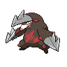
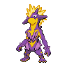
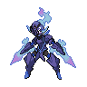

ドラパルトex＋ノココッチ

ドラパルトex・ノココッチを中心カードとしてまとめた分類です。完全リストでのバシャーモex・ヨノワールの不採用も区別の手掛かりです。
確認待ち 1件人の確認: 未確認分類の確認: 未確認対面の確認: 未確認更新記録: 未記入
作成日: 2026-10-25 JST
当週 2026-10-16〜2026-10-22（7日） / 前週 2026-10-09〜2026-10-15（7日）
公式公開結果に基づく週次レポートです。
16枠×大会数は検算用の参考値です。公式の全掲載枠を入賞シェアの分母にし、不足・超過を別々に示します。実参加人数と不足・超過の理由は未確認です。デッキコード未掲載も1入賞枠に含めます。
当週: 参考1120枠・公式掲載1120枠、不足0枠・超過0枠・差引0枠。 前週: 参考1536枠・公式掲載1524枠、不足13枠・超過1枠・差引12枠。
| 期間 | 大会 | 参考枠 | 公式掲載枠 | 差 | 確認根拠 |
|---|---|---|---|---|---|
| 前週 | 2026-10-09 / トレカショップVOW / 大会 1115329 | 16 | 15 | 不足1枠 | 公式total 15、全ページ取得完了・入賞者識別一致 |
| 前週 | 2026-10-10 / ゲームセンターRX / 大会 1115332 | 16 | 4 | 不足12枠 | 公式total 4、全ページ取得完了・入賞者識別一致 |
| 前週 | 2026-10-12 / トーナメントセンターバトロコ 新津田沼駅前 / 大会 1115062 | 16 | 17 | 超過1枠 | 公式total 17、全ページ取得完了・入賞者識別一致 |
更新推奨は機械的な確認候補です。構築の採否や対面判断は人が確認して記入します。
デッキ数は公開入賞枠数で、同じコードの反復入賞も数えます。入賞枠数順です。入賞シェアは使用率・実対戦勝率ではありません。期間ごとに大会数と公開入賞枠数が異なり、会場数による重み調整はしていません。「その他」は分類集約、「表示外（Top N外）」は表示件数による合算で、別の区分です。
| 順位 | デッキ分類 | デッキ数 | シェア | 差分 |
|---|---|---|---|---|
| 1 | ドラパルトex＋ノココッチ 構築プロファイル / 入賞一覧 | 112 | 10.00% | +0.09pt |
| 2 | ドラパルトex＋ヨノワール  構築プロファイル / 入賞一覧 | 112 | 10.00% | -1.35pt |
| 3 | メガルカリオex＋ソルロック／ルナトーン    構築プロファイル / 入賞一覧 | 75 | 6.70% | -0.32pt |
| 4 | Nのゾロアークex  構築プロファイル / 入賞一覧 | 60 | 5.36% | -0.55pt |
| 5 | ドラパルトex＋バシャーモex  構築プロファイル / 入賞一覧 | 58 | 5.18% | +0.26pt |
| 6 | カミッチュ＋アズマオウ＋バチンキー    構築プロファイル / 入賞一覧 | 55 | 4.91% | +1.04pt |
| 7 | ヤドキング＋キュレム＋メタグロス    構築プロファイル / 入賞一覧 | 53 | 4.73% | +0.01pt |
| 8 | ダダリン＋ジュペッタ   構築プロファイル / 入賞一覧 | 45 | 4.02% | -0.84pt |
| 9 | メガドリュウズex＋メタグロス／ゲノセクトex   構築プロファイル / 入賞一覧 | 45 | 4.02% | -0.71pt |
| 10 | メガレックウザex＋ヒビキのホウオウex   構築プロファイル / 入賞一覧 | 41 | 3.66% | +0.58pt |
| 11 | メガニウム＋カミツオロチex  構築プロファイル / 入賞一覧 | 32 | 2.86% | -0.36pt |
| 12 | フーディン  構築プロファイル / 入賞一覧 | 31 | 2.77% | -0.64pt |
| 13 | シロナのガブリアスex＋シロナのロズレイド   構築プロファイル / 入賞一覧 | 30 | 2.68% | +0.84pt |
| 14 | オーガポンみどり＋メガガルーラex〈タケルライコ採用・コライドン不採用〉    構築プロファイル / 入賞一覧 | 27 | 2.41% | +0.18pt |
| 15 | ゲッコウガex／メガゲッコウガex  構築プロファイル / 入賞一覧 | 27 | 2.41% | -0.54pt |
| 16 | ドラパルトのその他派生形  構築プロファイル / 入賞一覧 | 24 | 2.14% | -1.60pt |
| 17 | メガニウム＋オリーヴァex 構築プロファイル / 入賞一覧 | 24 | 2.14% | +0.70pt |
| 18 | マリィのオーロンゲex＋ユキメノコ 構築プロファイル / 入賞一覧 | 18 | 1.61% | +0.29pt |
| 19 | メガサメハダーex＋ストリンダー   構築プロファイル / 入賞一覧 | 18 | 1.61% | +0.23pt |
| 20 | その他のデッキタイプ 構築プロファイル / 入賞一覧 | 17 | 1.52% | -2.75pt |
| 21 | メガニウム＋メガフシギバナex  構築プロファイル / 入賞一覧 | 17 | 1.52% | +0.14pt |
| 22 | メガミミロップex＋ノココッチ  構築プロファイル / 入賞一覧 | 16 | 1.43% | +0.51pt |
| 23 | メガスターミーex＋メガユキメノコex  構築プロファイル / 入賞一覧 | 11 | 0.98% | -0.20pt |
| 24 | オーガポンみどり＋メガガルーラex〈コライドン採用・タケルライコ不採用〉  構築プロファイル / 入賞一覧 | 10 | 0.89% | -0.81pt |
| 25 | オーガポンみどり＋メガガルーラex〈タケルライコ・コライドン両不採用〉 構築プロファイル / 入賞一覧 | 10 | 0.89% | -0.03pt |
| 26 | ストリンダー＋マシマシラ  構築プロファイル / 入賞一覧 | 9 | 0.80% | +0.28pt |
| 27 | オーガポンみどり＋メガガルーラex〈タケルライコ・コライドン両採用〉 構築プロファイル / 入賞一覧 | 8 | 0.71% | -0.07pt |
| 28 | ガメノデス＋イイネイヌ   構築プロファイル / 入賞一覧 | 8 | 0.71% | +0.32pt |
| 29 | イワパレス  構築プロファイル / 入賞一覧 | 7 | 0.62% | -0.03pt |
| 30 | ソウブレイズex＋ソルロック／ルナトーン  構築プロファイル / 入賞一覧 | 7 | 0.62% | -0.03pt |
| 31 | ロケット団のミュウツーex＋ロケット団のワナイダー  構築プロファイル / 入賞一覧 | 7 | 0.62% | -0.23pt |
| 32 | ダイゴのメタグロスex 構築プロファイル / 入賞一覧 | 5 | 0.45% | -0.08pt |
| 33 | ロケット団のドンカラス＋ロケット団のポリゴン2   構築プロファイル / 入賞一覧 | 5 | 0.45% | -0.01pt |
| 34 | ヨノワール複合型 構築プロファイル / 入賞一覧 | 4 | 0.36% | +0.03pt |
| 35 | スピアーex 構築プロファイル / 入賞一覧 | 3 | 0.27% | +0.14pt |
| 36 | ヒビキのバクフーン  構築プロファイル / 入賞一覧 | 3 | 0.27% | +0.07pt |
| 37 | ヨノワール＋メガガルーラex 構築プロファイル / 入賞一覧 | 3 | 0.27% | -0.19pt |
| 38 | デッキコード未掲載（分類不明） 入賞一覧 | 2 | 0.18% | +0.05pt |
| 39 | ブリジュラスex＋ノココッチ 構築プロファイル / 入賞一覧 | 2 | 0.18% | -0.15pt |
| 40 | メガリザードンXex／Yex＋メガガルーラex  構築プロファイル / 入賞一覧 | 2 | 0.18% | -0.41pt |
| 41 | タケルライコex＋オーガポンみどり 構築プロファイル / 入賞一覧 | 1 | 0.09% | -0.50pt |
| 42 | ドデカバシ系  構築プロファイル / 入賞一覧 | 1 | 0.09% | -0.04pt |
| — | 表示外（Top N外） | 242 | 0.00% | — |
| 順位 | 区分 | 公開入賞枠 | シェア | 前週枠 | 前週シェア | 差分 |
|---|---|---|---|---|---|---|
| — | 未分類（順位対象外） / 入賞一覧 | 75 | 6.70% | 0 | 0.00% | +6.70pt |
| 順位 | デッキ分類 | 公開入賞枠 | シェア | 前週枠 | 前週シェア | 差分 |
|---|---|---|---|---|---|---|
| 1 | ドラパルトex＋ノココッチ 構築プロファイル / 入賞一覧 | 112 | 10.00% | 151 | 9.91% | +0.09pt |
| 2 | ドラパルトex＋ヨノワール 構築プロファイル / 入賞一覧 | 112 | 10.00% | 173 | 11.35% | -1.35pt |
| 3 | メガルカリオex＋ソルロック／ルナトーン 構築プロファイル / 入賞一覧 | 75 | 6.70% | 107 | 7.02% | -0.32pt |
| 4 | Nのゾロアークex 構築プロファイル / 入賞一覧 | 60 | 5.36% | 90 | 5.91% | -0.55pt |
| 5 | ドラパルトex＋バシャーモex 構築プロファイル / 入賞一覧 | 58 | 5.18% | 75 | 4.92% | +0.26pt |
| 6 | カミッチュ＋アズマオウ＋バチンキー 構築プロファイル / 入賞一覧 | 55 | 4.91% | 59 | 3.87% | +1.04pt |
| 7 | ヤドキング＋キュレム＋メタグロス 構築プロファイル / 入賞一覧 | 53 | 4.73% | 72 | 4.72% | +0.01pt |
| 8 | ダダリン＋ジュペッタ 構築プロファイル / 入賞一覧 | 45 | 4.02% | 74 | 4.86% | -0.84pt |
| 9 | メガドリュウズex＋メタグロス／ゲノセクトex 構築プロファイル / 入賞一覧 | 45 | 4.02% | 72 | 4.72% | -0.71pt |
| 10 | メガレックウザex＋ヒビキのホウオウex 構築プロファイル / 入賞一覧 | 41 | 3.66% | 47 | 3.08% | +0.58pt |
| 11 | メガニウム＋カミツオロチex 構築プロファイル / 入賞一覧 | 32 | 2.86% | 49 | 3.22% | -0.36pt |
| 12 | フーディン 構築プロファイル / 入賞一覧 | 31 | 2.77% | 52 | 3.41% | -0.64pt |
| 13 | シロナのガブリアスex＋シロナのロズレイド 構築プロファイル / 入賞一覧 | 30 | 2.68% | 28 | 1.84% | +0.84pt |
| 14 | オーガポンみどり＋メガガルーラex〈タケルライコ採用・コライドン不採用〉 構築プロファイル / 入賞一覧 | 27 | 2.41% | 34 | 2.23% | +0.18pt |
| 15 | ゲッコウガex／メガゲッコウガex 構築プロファイル / 入賞一覧 | 27 | 2.41% | 45 | 2.95% | -0.54pt |
| 16 | ドラパルトのその他派生形 構築プロファイル / 入賞一覧 | 24 | 2.14% | 57 | 3.74% | -1.60pt |
| 17 | メガニウム＋オリーヴァex 構築プロファイル / 入賞一覧 | 24 | 2.14% | 22 | 1.44% | +0.70pt |
| 18 | マリィのオーロンゲex＋ユキメノコ 構築プロファイル / 入賞一覧 | 18 | 1.61% | 20 | 1.31% | +0.29pt |
| 19 | メガサメハダーex＋ストリンダー 構築プロファイル / 入賞一覧 | 18 | 1.61% | 21 | 1.38% | +0.23pt |
| 20 | その他のデッキタイプ 構築プロファイル / 入賞一覧 | 17 | 1.52% | 65 | 4.27% | -2.75pt |
| 21 | メガニウム＋メガフシギバナex 構築プロファイル / 入賞一覧 | 17 | 1.52% | 21 | 1.38% | +0.14pt |
| 22 | メガミミロップex＋ノココッチ 構築プロファイル / 入賞一覧 | 16 | 1.43% | 14 | 0.92% | +0.51pt |
| 23 | メガスターミーex＋メガユキメノコex 構築プロファイル / 入賞一覧 | 11 | 0.98% | 18 | 1.18% | -0.20pt |
| 24 | オーガポンみどり＋メガガルーラex〈コライドン採用・タケルライコ不採用〉 構築プロファイル / 入賞一覧 | 10 | 0.89% | 26 | 1.71% | -0.81pt |
| 25 | オーガポンみどり＋メガガルーラex〈タケルライコ・コライドン両不採用〉 構築プロファイル / 入賞一覧 | 10 | 0.89% | 14 | 0.92% | -0.03pt |
| 26 | ストリンダー＋マシマシラ 構築プロファイル / 入賞一覧 | 9 | 0.80% | 8 | 0.52% | +0.28pt |
| 27 | オーガポンみどり＋メガガルーラex〈タケルライコ・コライドン両採用〉 構築プロファイル / 入賞一覧 | 8 | 0.71% | 12 | 0.79% | -0.07pt |
| 28 | ガメノデス＋イイネイヌ 構築プロファイル / 入賞一覧 | 8 | 0.71% | 6 | 0.39% | +0.32pt |
| 29 | イワパレス 構築プロファイル / 入賞一覧 | 7 | 0.62% | 10 | 0.66% | -0.03pt |
| 30 | ソウブレイズex＋ソルロック／ルナトーン 構築プロファイル / 入賞一覧 | 7 | 0.62% | 10 | 0.66% | -0.03pt |
| 31 | ロケット団のミュウツーex＋ロケット団のワナイダー 構築プロファイル / 入賞一覧 | 7 | 0.62% | 13 | 0.85% | -0.23pt |
| 32 | ダイゴのメタグロスex 構築プロファイル / 入賞一覧 | 5 | 0.45% | 8 | 0.52% | -0.08pt |
| 33 | ロケット団のドンカラス＋ロケット団のポリゴン2 構築プロファイル / 入賞一覧 | 5 | 0.45% | 7 | 0.46% | -0.01pt |
| 34 | ヨノワール複合型 構築プロファイル / 入賞一覧 | 4 | 0.36% | 5 | 0.33% | +0.03pt |
| 35 | スピアーex 構築プロファイル / 入賞一覧 | 3 | 0.27% | 2 | 0.13% | +0.14pt |
| 36 | ヒビキのバクフーン 構築プロファイル / 入賞一覧 | 3 | 0.27% | 3 | 0.20% | +0.07pt |
| 37 | ヨノワール＋メガガルーラex 構築プロファイル / 入賞一覧 | 3 | 0.27% | 7 | 0.46% | -0.19pt |
| 38 | デッキコード未掲載（分類不明） 入賞一覧 | 2 | 0.18% | 2 | 0.13% | +0.05pt |
| 39 | ブリジュラスex＋ノココッチ 構築プロファイル / 入賞一覧 | 2 | 0.18% | 5 | 0.33% | -0.15pt |
| 40 | メガリザードンXex／Yex＋メガガルーラex 構築プロファイル / 入賞一覧 | 2 | 0.18% | 9 | 0.59% | -0.41pt |
| 41 | タケルライコex＋オーガポンみどり 構築プロファイル / 入賞一覧 | 1 | 0.09% | 9 | 0.59% | -0.50pt |
| 42 | ドデカバシ系 構築プロファイル / 入賞一覧 | 1 | 0.09% | 2 | 0.13% | -0.04pt |
保存済み期間の各点を表示します。全国の全入賞の網羅は未確認です。各点の分母は当該期間の全公開入賞枠です。入賞シェアは使用率・実対戦勝率ではありません。
カード採用率と平均採用枚数は、いずれも60枚確認済みの公開入賞枠を分母にします。unique deck codeを分母にする値とは区別します。下表は両週各5枠以上で、採用率差が10pt以上または平均採用枚数差が0.25枚以上（暫定）の候補です。符号は当週−前週で、枚数分布は0枚も含めます。分母が0の週は分布を未確認として補完しません。
ドラパルトex＋ノココッチ当週シェア 10.00% / 変化カード 1件 / 確認推奨 1件カード確認範囲
当週: 公開入賞枠 112 / 60枚確認済み 112 / 未確認・不完全 0
前週: 公開入賞枠 151 / 60枚確認済み 151 / 未確認・不完全 0
| 変化があったカード | 変化 |
|---|---|
| ノココッチex | 平均 前週0.58枚→今週0.37枚 枚数差 -0.22枚 採用率差 -21.67pt 枚数分布今週 0枚（不採用） 63.39%（71枠）1枚 36.61%（41枠） 前週 0枚（不採用） 41.72%（63枠）1枚 58.28%（88枠） |
メガルカリオex＋ソルロック／ルナトーン当週シェア 6.70% / 変化カード 4件 / 確認推奨 1件カード確認範囲
当週: 公開入賞枠 75 / 60枚確認済み 75 / 未確認・不完全 0
前週: 公開入賞枠 107 / 60枚確認済み 107 / 未確認・不完全 0
| 変化があったカード | 変化 |
|---|---|
| ハリテヤマ | 平均 前週1.06枚→今週0.76枚 枚数差 -0.30枚 採用率差 -16.61pt 枚数分布今週 0枚（不採用） 58.67%（44枠）1枚 6.67%（5枠）2枚 34.67%（26枠） 前週 0枚（不採用） 42.06%（45枠）1枚 10.28%（11枠）2枚 47.66%（51枠） |
| マクノシタ | 平均 前週1.06枚→今週0.77枚 枚数差 -0.28枚 採用率差 -16.61pt 枚数分布今週 0枚（不採用） 58.67%（44枠）1枚 5.33%（4枠）2枚 36.00%（27枠） 前週 0枚（不採用） 42.06%（45枠）1枚 10.28%（11枠）2枚 47.66%（51枠） |
| ノココッチex | 平均 前週0.30枚→今週0.41枚 枚数差 +0.11枚 採用率差 +11.43pt 枚数分布今週 0枚（不採用） 58.67%（44枠）1枚 41.33%（31枠） 前週 0枚（不採用） 70.09%（75枠）1枚 29.91%（32枠） |
| アンフェアスタンプ | 平均 前週0.18枚→今週0.07枚 枚数差 -0.11枚 採用率差 -11.09pt 枚数分布今週 0枚（不採用） 93.33%（70枠）1枚 6.67%（5枠） 前週 0枚（不採用） 82.24%（88枠）1枚 17.76%（19枠） |
Nのゾロアークex当週シェア 5.36% / 変化カード 11件 / 確認推奨 1件カード確認範囲
当週: 公開入賞枠 60 / 60枚確認済み 60 / 未確認・不完全 0
前週: 公開入賞枠 90 / 60枚確認済み 90 / 未確認・不完全 0
| 変化があったカード | 変化 |
|---|---|
| くさりもち | 平均 前週1.61枚→今週1.90枚 枚数差 +0.29枚 採用率差 +2.78pt 枚数分布今週 0枚（不採用） 1.67%（1枠）1枚 6.67%（4枠）2枚 91.67%（55枠） 前週 0枚（不採用） 4.44%（4枠）1枚 30.00%（27枠）2枚 65.56%（59枠） |
| シャリタツ | 平均 前週0.51枚→今週0.75枚 枚数差 +0.24枚 採用率差 +23.89pt 枚数分布今週 0枚（不採用） 25.00%（15枠）1枚 75.00%（45枠） 前週 0枚（不採用） 48.89%（44枠）1枚 51.11%（46枠） |
| シークレットボックス | 平均 前週0.37枚→今週0.58枚 枚数差 +0.22枚 採用率差 +21.67pt 枚数分布今週 0枚（不採用） 41.67%（25枠）1枚 58.33%（35枠） 前週 0枚（不採用） 63.33%（57枠）1枚 36.67%（33枠） |
| アンズの秘技 | 平均 前週0.44枚→今週0.63枚 枚数差 +0.19枚 採用率差 +17.22pt 枚数分布今週 0枚（不採用） 38.33%（23枠）1枚 60.00%（36枠）2枚 1.67%（1枠） 前週 0枚（不採用） 55.56%（50枠）1枚 44.44%（40枠） |
| スボミー | 平均 前週0.32枚→今週0.17枚 枚数差 -0.16枚 採用率差 -15.56pt 枚数分布今週 0枚（不採用） 83.33%（50枠）1枚 16.67%（10枠） 前週 0枚（不採用） 67.78%（61枠）1枚 32.22%（29枠） |
| ヒーローマント | 平均 前週0.19枚→今週0.03枚 枚数差 -0.16枚 採用率差 -15.56pt 枚数分布今週 0枚（不採用） 96.67%（58枠）1枚 3.33%（2枠） 前週 0枚（不採用） 81.11%（73枠）1枚 18.89%（17枠） |
| イベルタル | 平均 前週0.73枚→今週0.87枚 枚数差 +0.13枚 採用率差 +14.44pt 枚数分布今週 0枚（不採用） 13.33%（8枠）1枚 86.67%（52枠） 前週 0枚（不採用） 27.78%（25枠）1枚 71.11%（64枠）2枚 1.11%（1枠） |
| Nのレシラム | 平均 前週0.87枚→今週0.75枚 枚数差 -0.12枚 採用率差 -11.67pt 枚数分布今週 0枚（不採用） 25.00%（15枠）1枚 75.00%（45枠） 前週 0枚（不採用） 13.33%（12枠）1枚 86.67%（78枠） |
| グラビティーマウンテン | 平均 前週0.33枚→今週0.45枚 枚数差 +0.12枚 採用率差 +11.67pt 枚数分布今週 0枚（不採用） 55.00%（33枠）1枚 45.00%（27枠） 前週 0枚（不採用） 66.67%（60枠）1枚 33.33%（30枠） |
| ふうせん | 平均 前週0.17枚→今週0.05枚 枚数差 -0.12枚 採用率差 -10.56pt 枚数分布今週 0枚（不採用） 95.00%（57枠）1枚 5.00%（3枠） 前週 0枚（不採用） 84.44%（76枠）1枚 14.44%（13枠）2枚 1.11%（1枠） |
| Nの城 | 平均 前週1.34枚→今週1.38枚 枚数差 +0.04枚 採用率差 +10.56pt 枚数分布今週 0枚（不採用） 5.00%（3枠）1枚 51.67%（31枠）2枚 43.33%（26枠） 前週 0枚（不採用） 15.56%（14枠）1枚 36.67%（33枠）2枚 45.56%（41枠）3枚 2.22%（2枠） |
ドラパルトex＋バシャーモex当週シェア 5.18% / 変化カード 3件 / 確認推奨 1件カード確認範囲
当週: 公開入賞枠 58 / 60枚確認済み 58 / 未確認・不完全 0
前週: 公開入賞枠 75 / 60枚確認済み 75 / 未確認・不完全 0
| 変化があったカード | 変化 |
|---|---|
| 危ない廃墟 | 平均 前週0.44枚→今週0.66枚 枚数差 +0.22枚 採用率差 +14.00pt 枚数分布今週 0枚（不採用） 50.00%（29枠）1枚 34.48%（20枠）2枚 15.52%（9枠） 前週 0枚（不採用） 64.00%（48枠）1枚 28.00%（21枠）2枚 8.00%（6枠） |
| シェイミ | 平均 前週0.40枚→今週0.28枚 枚数差 -0.12枚 採用率差 -12.41pt 枚数分布今週 0枚（不採用） 72.41%（42枠）1枚 27.59%（16枠） 前週 0枚（不採用） 60.00%（45枠）1枚 40.00%（30枠） |
| スペシャルレッドカード | 平均 前週0.52枚→今週0.64枚 枚数差 +0.12枚 採用率差 +14.46pt 枚数分布今週 0枚（不採用） 36.21%（21枠）1枚 63.79%（37枠） 前週 0枚（不採用） 50.67%（38枠）1枚 46.67%（35枠）2枚 2.67%（2枠） |
カミッチュ＋アズマオウ＋バチンキー当週シェア 4.91% / 変化カード 3件 / 確認推奨 1件カード確認範囲
当週: 公開入賞枠 55 / 60枚確認済み 55 / 未確認・不完全 0
前週: 公開入賞枠 59 / 60枚確認済み 59 / 未確認・不完全 0
| 変化があったカード | 変化 |
|---|---|
| ミストエネルギー | 平均 前週0.80枚→今週1.09枚 枚数差 +0.29枚 採用率差 +5.61pt 枚数分布今週 0枚（不採用） 67.27%（37枠）1枚 1.82%（1枠）2枚 5.45%（3枠）3枚 5.45%（3枠）4枚 20.00%（11枠） 前週 0枚（不採用） 72.88%（43枠）1枚 3.39%（2枠）2枚 5.08%（3枠）3枚 8.47%（5枠）4枚 10.17%（6枠） |
| せいなるはい | 平均 前週0.88枚→今週0.75枚 枚数差 -0.14枚 採用率差 -13.59pt 枚数分布今週 0枚（不採用） 25.45%（14枠）1枚 74.55%（41枠） 前週 0枚（不採用） 11.86%（7枠）1枚 88.14%（52枠） |
| グロウ草エネルギー | 平均 前週1.39枚→今週1.36枚 枚数差 -0.03枚 採用率差 -11.19pt 枚数分布今週 0枚（不採用） 40.00%（22枠）1枚 14.55%（8枠）2枚 23.64%（13枠）3枚 12.73%（7枠）4枚 9.09%（5枠） 前週 0枚（不採用） 28.81%（17枠）1枚 25.42%（15枠）2枚 28.81%（17枠）3枚 11.86%（7枠）4枚 5.08%（3枠） |
ヤドキング＋キュレム＋メタグロス当週シェア 4.73% / 変化カード 2件 / 確認推奨 1件カード確認範囲
当週: 公開入賞枠 53 / 60枚確認済み 53 / 未確認・不完全 0
前週: 公開入賞枠 72 / 60枚確認済み 72 / 未確認・不完全 0
| 変化があったカード | 変化 |
|---|---|
| スペシャルレッドカード | 平均 前週0.38枚→今週0.21枚 枚数差 -0.17枚 採用率差 -15.36pt 枚数分布今週 0枚（不採用） 79.25%（42枠）1枚 20.75%（11枠） 前週 0枚（不採用） 63.89%（46枠）1枚 34.72%（25枠）2枚 1.39%（1枠） |
| アンノーン | 平均 前週0.56枚→今週0.43枚 枚数差 -0.12枚 採用率差 -12.16pt 枚数分布今週 0枚（不採用） 56.60%（30枠）1枚 43.40%（23枠） 前週 0枚（不採用） 44.44%（32枠）1枚 55.56%（40枠） |
ダダリン＋ジュペッタ当週シェア 4.02% / 変化カード 14件 / 確認推奨 1件カード確認範囲
当週: 公開入賞枠 45 / 60枚確認済み 45 / 未確認・不完全 0
前週: 公開入賞枠 74 / 60枚確認済み 74 / 未確認・不完全 0
| 変化があったカード | 変化 |
|---|---|
| ヤバソチャ | 平均 前週1.19枚→今週1.96枚 枚数差 +0.77枚 採用率差 +13.51pt 枚数分布今週 0枚（不採用） 0.00%（0枠）1枚 57.78%（26枠）2枚 13.33%（6枠）3枚 4.44%（2枠）4枚 24.44%（11枠） 前週 0枚（不採用） 13.51%（10枠）1枚 71.62%（53枠）2枚 5.41%（4枠）3枚 1.35%（1枠）4枚 8.11%（6枠） |
| 探検家の先導 | 平均 前週0.93枚→今週1.62枚 枚数差 +0.69枚 採用率差 +32.88pt 枚数分布今週 0枚（不採用） 33.33%（15枠）1枚 8.89%（4枠）2枚 31.11%（14枠）3枚 15.56%（7枠）4枚 11.11%（5枠） 前週 0枚（不採用） 66.22%（49枠）1枚 2.70%（2枠）2枚 14.86%（11枠）3枚 4.05%（3枠）4枚 12.16%（9枠） |
| チャデス | 平均 前週1.66枚→今週2.31枚 枚数差 +0.65枚 採用率差 +10.81pt 枚数分布今週 0枚（不採用） 0.00%（0枠）1枚 35.56%（16枠）2枚 28.89%（13枠）3枚 4.44%（2枠）4枚 31.11%（14枠） 前週 0枚（不採用） 10.81%（8枠）1枚 33.78%（25枠）2枚 43.24%（32枠）3枚 2.70%（2枠）4枚 9.46%（7枠） |
| ノコッチ | 平均 前週2.54枚→今週2.00枚 枚数差 -0.54枚 採用率差 -14.11pt 枚数分布今週 0枚（不採用） 22.22%（10枠）2枚 33.33%（15枠）3枚 44.44%（20枠） 前週 0枚（不採用） 8.11%（6枠）1枚 1.35%（1枠）2枚 20.27%（15枠）3枚 68.92%（51枠）4枚 1.35%（1枠） |
| なかよしポフィン | 平均 前週1.38枚→今週1.04枚 枚数差 -0.33枚 採用率差 -19.64pt 枚数分布今週 0枚（不採用） 46.67%（21枠）1枚 6.67%（3枠）2枚 42.22%（19枠）3枚 4.44%（2枠） 前週 0枚（不採用） 27.03%（20枠）1枚 12.16%（9枠）2枚 56.76%（42枠）3枚 4.05%（3枠） |
| ノココッチ | 平均 前週1.80枚→今週1.53枚 枚数差 -0.26枚 採用率差 -14.11pt 枚数分布今週 0枚（不採用） 22.22%（10枠）1枚 2.22%（1枠）2枚 75.56%（34枠） 前週 0枚（不採用） 8.11%（6枠）1枚 5.41%（4枠）2枚 85.14%（63枠）3枚 1.35%（1枠） |
| 基本超エネルギー | 平均 前週2.27枚→今週2.53枚 枚数差 +0.26枚 採用率差 +1.35pt 枚数分布今週 0枚（不採用） 0.00%（0枠）2枚 57.78%（26枠）3枚 31.11%（14枠）4枚 11.11%（5枠） 前週 0枚（不採用） 1.35%（1枠）1枚 1.35%（1枠）2枚 70.27%（52枠）3枚 22.97%（17枠）4枚 4.05%（3枠） |
| ふうせん | 平均 前週0.42枚→今週0.24枚 枚数差 -0.17枚 採用率差 -10.51pt 枚数分布今週 0枚（不採用） 88.89%（40枠）1枚 2.22%（1枠）2枚 4.44%（2枠）3枚 4.44%（2枠） 前週 0枚（不採用） 78.38%（58枠）1枚 9.46%（7枠）2枚 4.05%（3枠）3枚 8.11%（6枠） |
| ミカルゲ | 平均 前週0.09枚→今週0.24枚 枚数差 +0.15枚 採用率差 +14.98pt 枚数分布今週 0枚（不採用） 75.56%（34枠）1枚 24.44%（11枠） 前週 0枚（不採用） 90.54%（67枠）1枚 9.46%（7枠） |
| イベルタル | 平均 前週0.22枚→今週0.07枚 枚数差 -0.15枚 採用率差 -14.95pt 枚数分布今週 0枚（不採用） 93.33%（42枠）1枚 6.67%（3枠） 前週 0枚（不採用） 78.38%（58枠）1枚 21.62%（16枠） |
| ノココッチex | 平均 前週0.57枚→今週0.42枚 枚数差 -0.15枚 採用率差 -14.53pt 枚数分布今週 0枚（不採用） 57.78%（26枠）1枚 42.22%（19枠） 前週 0枚（不採用） 43.24%（32枠）1枚 56.76%（42枠） |
| ガチグマ アカツキex | 平均 前週0.86枚→今週0.73枚 枚数差 -0.13枚 採用率差 -13.15pt 枚数分布今週 0枚（不採用） 26.67%（12枠）1枚 73.33%（33枠） 前週 0枚（不採用） 13.51%（10枠）1枚 86.49%（64枠） |
| ラティアスex | 平均 前週0.66枚→今週0.78枚 枚数差 +0.12枚 採用率差 +11.56pt 枚数分布今週 0枚（不採用） 22.22%（10枠）1枚 77.78%（35枠） 前週 0枚（不採用） 33.78%（25枠）1枚 66.22%（49枠） |
| ハバタクカミ | 平均 前週0.42枚→今週0.31枚 枚数差 -0.11枚 採用率差 -10.78pt 枚数分布今週 0枚（不採用） 68.89%（31枠）1枚 31.11%（14枠） 前週 0枚（不採用） 58.11%（43枠）1枚 41.89%（31枠） |
メガドリュウズex＋メタグロス／ゲノセクトex当週シェア 4.02% / 変化カード 7件 / 確認推奨 1件カード確認範囲
当週: 公開入賞枠 45 / 60枚確認済み 45 / 未確認・不完全 0
前週: 公開入賞枠 72 / 60枚確認済み 72 / 未確認・不完全 0
| 変化があったカード | 変化 |
|---|---|
| ロケット団のレシーバー | 平均 前週1.94枚→今週2.44枚 枚数差 +0.50枚 採用率差 +15.56pt 枚数分布今週 0枚（不採用） 28.89%（13枠）1枚 4.44%（2枠）2枚 6.67%（3枠）3枚 13.33%（6枠）4枚 46.67%（21枠） 前週 0枚（不採用） 44.44%（32枠）1枚 4.17%（3枠）2枚 4.17%（3枠）3枚 6.94%（5枠）4枚 40.28%（29枠） |
| ポケギア3.0 | 平均 前週2.60枚→今週2.18枚 枚数差 -0.42枚 採用率差 -4.44pt 枚数分布今週 0枚（不採用） 15.56%（7枠）1枚 6.67%（3枠）2枚 31.11%（14枠）3枚 37.78%（17枠）4枚 8.89%（4枠） 前週 0枚（不採用） 11.11%（8枠）1枚 1.39%（1枠）2枚 15.28%（11枠）3枚 61.11%（44枠）4枚 11.11%（8枠） |
| なかよしポフィン | 平均 前週2.61枚→今週2.29枚 枚数差 -0.32枚 採用率差 +1.94pt 枚数分布今週 0枚（不採用） 2.22%（1枠）1枚 37.78%（17枠）2枚 15.56%（7枠）3枚 17.78%（8枠）4枚 26.67%（12枠） 前週 0枚（不採用） 4.17%（3枠）1枚 30.56%（22枠）2枚 9.72%（7枠）3枚 11.11%（8枠）4枚 44.44%（32枠） |
| ジャミングタワー | 平均 前週0.26枚→今週0.42枚 枚数差 +0.16枚 採用率差 +15.83pt 枚数分布今週 0枚（不採用） 57.78%（26枠）1枚 42.22%（19枠） 前週 0枚（不採用） 73.61%（53枠）1枚 26.39%（19枠） |
| ジャンボアイス | 平均 前週1.06枚→今週1.20枚 枚数差 +0.14枚 採用率差 +10.28pt 枚数分布今週 0枚（不採用） 2.22%（1枠）1枚 77.78%（35枠）2枚 17.78%（8枠）3枚 2.22%（1枠） 前週 0枚（不採用） 12.50%（9枠）1枚 70.83%（51枠）2枚 15.28%（11枠）3枚 1.39%（1枠） |
| スグリ | 平均 前週0.75枚→今週0.89枚 枚数差 +0.14枚 採用率差 +15.28pt 枚数分布今週 0枚（不採用） 22.22%（10枠）1枚 66.67%（30枠）2枚 11.11%（5枠） 前週 0枚（不採用） 37.50%（27枠）1枚 50.00%（36枠）2枚 12.50%（9枠） |
| ツールスクラッパー | 平均 前週0.22枚→今週0.11枚 枚数差 -0.11枚 採用率差 -11.11pt 枚数分布今週 0枚（不採用） 88.89%（40枠）1枚 11.11%（5枠） 前週 0枚（不採用） 77.78%（56枠）1枚 22.22%（16枠） |
メガレックウザex＋ヒビキのホウオウex当週シェア 3.66% / 変化カード 5件 / 確認推奨 1件カード確認範囲
当週: 公開入賞枠 41 / 60枚確認済み 41 / 未確認・不完全 0
前週: 公開入賞枠 47 / 60枚確認済み 47 / 未確認・不完全 0
| 変化があったカード | 変化 |
|---|---|
| レシラムex | 平均 前週0.04枚→今週0.39枚 枚数差 +0.35枚 採用率差 +34.77pt 枚数分布今週 0枚（不採用） 60.98%（25枠）1枚 39.02%（16枠） 前週 0枚（不採用） 95.74%（45枠）1枚 4.26%（2枠） |
| 伝説の溶岩洞 | 平均 前週3.57枚→今週3.90枚 枚数差 +0.33枚 採用率差 +8.20pt 枚数分布今週 0枚（不採用） 2.44%（1枠）4枚 97.56%（40枠） 前週 0枚（不採用） 10.64%（5枠）4枚 89.36%（42枠） |
| ひふきやろう | 平均 前週0.11枚→今週0.00枚 枚数差 -0.11枚 採用率差 -10.64pt 枚数分布今週 0枚（不採用） 100.00%（41枠） 前週 0枚（不採用） 89.36%（42枠）1枚 10.64%（5枠） |
| エネルギー回収 | 平均 前週0.15枚→今週0.05枚 枚数差 -0.10枚 採用率差 -10.02pt 枚数分布今週 0枚（不採用） 95.12%（39枠）1枚 4.88%（2枠） 前週 0枚（不採用） 85.11%（40枠）1枚 14.89%（7枠） |
| リーリエの決心 | 平均 前週2.06枚→今週2.02枚 枚数差 -0.04枚 採用率差 +10.02pt 枚数分布今週 0枚（不採用） 4.88%（2枠）1枚 17.07%（7枠）2枚 56.10%（23枠）3枚 14.63%（6枠）4枚 7.32%（3枠） 前週 0枚（不採用） 14.89%（7枠）2枚 53.19%（25枠）3枚 27.66%（13枠）4枚 4.26%（2枠） |
メガニウム＋カミツオロチex当週シェア 2.86% / 変化カード 5件 / 確認推奨 1件カード確認範囲
当週: 公開入賞枠 32 / 60枚確認済み 32 / 未確認・不完全 0
前週: 公開入賞枠 49 / 60枚確認済み 49 / 未確認・不完全 0
| 変化があったカード | 変化 |
|---|---|
| ハイパーボール | 平均 前週3.24枚→今週3.50枚 枚数差 +0.26枚 採用率差 +2.04pt 枚数分布今週 0枚（不採用） 0.00%（0枠）2枚 6.25%（2枠）3枚 37.50%（12枠）4枚 56.25%（18枠） 前週 0枚（不採用） 2.04%（1枠）2枚 10.20%（5枠）3枚 46.94%（23枠）4枚 40.82%（20枠） |
| ジャッジマン | 平均 前週0.82枚→今週0.62枚 枚数差 -0.19枚 採用率差 -12.05pt 枚数分布今週 0枚（不採用） 40.62%（13枠）1枚 56.25%（18枠）2枚 3.12%（1枠） 前週 0枚（不採用） 28.57%（14枠）1枚 61.22%（30枠）2枚 10.20%（5枠） |
| お祭り会場 | 平均 前週0.18枚→今週0.03枚 枚数差 -0.15枚 採用率差 -13.20pt 枚数分布今週 0枚（不採用） 96.88%（31枠）1枚 3.12%（1枠） 前週 0枚（不採用） 83.67%（41枠）1枚 14.29%（7枠）2枚 2.04%（1枠） |
| セレビィ | 平均 前週1.08枚→今週0.94枚 枚数差 -0.14枚 採用率差 -13.84pt 枚数分布今週 0枚（不採用） 28.12%（9枠）1枚 56.25%（18枠）2枚 9.38%（3枠）3枚 6.25%（2枠） 前週 0枚（不採用） 14.29%（7枠）1枚 63.27%（31枠）2枚 22.45%（11枠） |
| スペシャルレッドカード | 平均 前週0.45枚→今週0.53枚 枚数差 +0.08枚 採用率差 +10.27pt 枚数分布今週 0枚（不採用） 46.88%（15枠）1枚 53.12%（17枠） 前週 0枚（不採用） 57.14%（28枠）1枚 40.82%（20枠）2枚 2.04%（1枠） |
フーディン当週シェア 2.77% / 変化カード 14件 / 確認推奨 1件カード確認範囲
当週: 公開入賞枠 31 / 60枚確認済み 31 / 未確認・不完全 0
前週: 公開入賞枠 52 / 60枚確認済み 52 / 未確認・不完全 0
| 変化があったカード | 変化 |
|---|---|
| ムク | 平均 前週1.02枚→今週1.48枚 枚数差 +0.46枚 採用率差 +9.31pt 枚数分布今週 0枚（不採用） 48.39%（15枠）1枚 3.23%（1枠）2枚 9.68%（3枠）3枚 29.03%（9枠）4枚 9.68%（3枠） 前週 0枚（不採用） 57.69%（30枠）1枚 5.77%（3枠）2枚 13.46%（7枠）3枚 23.08%（12枠） |
| ドラメシヤ | 平均 前週0.38枚→今週0.00枚 枚数差 -0.38枚 採用率差 -13.46pt 枚数分布今週 0枚（不採用） 100.00%（31枠） 前週 0枚（不採用） 86.54%（45枠）2枚 1.92%（1枠）3枚 11.54%（6枠） |
| ドロンチ | 平均 前週0.38枚→今週0.00枚 枚数差 -0.38枚 採用率差 -13.46pt 枚数分布今週 0枚（不採用） 100.00%（31枠） 前週 0枚（不採用） 86.54%（45枠）2枚 1.92%（1枠）3枚 11.54%（6枠） |
| ロケット団の監視塔 | 平均 前週0.44枚→今週0.06枚 枚数差 -0.38枚 採用率差 -12.78pt 枚数分布今週 0枚（不採用） 93.55%（29枠）1枚 6.45%（2枠） 前週 0枚（不採用） 80.77%（42枠）1枚 3.85%（2枠）2枚 5.77%（3枠）3枚 9.62%（5枠） |
| 夜の鉱山 | 平均 前週0.10枚→今週0.45枚 枚数差 +0.36枚 採用率差 +21.96pt 枚数分布今週 0枚（不採用） 74.19%（23枠）1枚 19.35%（6枠）4枚 6.45%（2枠） 前週 0枚（不採用） 96.15%（50枠）1枚 1.92%（1枠）4枚 1.92%（1枠） |
| ドラパルトex | 平均 前週0.19枚→今週0.00枚 枚数差 -0.19枚 採用率差 -13.46pt 枚数分布今週 0枚（不採用） 100.00%（31枠） 前週 0枚（不採用） 86.54%（45枠）1枚 7.69%（4枠）2枚 5.77%（3枠） |
| あやしい時計 | 平均 前週0.54枚→今週0.71枚 枚数差 +0.17枚 採用率差 +18.24pt 枚数分布今週 0枚（不採用） 54.84%（17枠）1枚 19.35%（6枠）2枚 25.81%（8枠） 前週 0枚（不採用） 73.08%（38枠）1枚 3.85%（2枠）2枚 19.23%（10枠）3枚 3.85%（2枠） |
| 改造ハンマー | 平均 前週1.04枚→今週0.87枚 枚数差 -0.17枚 採用率差 -18.92pt 枚数分布今週 0枚（不採用） 51.61%（16枠）1枚 9.68%（3枠）2枚 38.71%（12枠） 前週 0枚（不採用） 32.69%（17枠）1枚 30.77%（16枠）2枚 36.54%（19枠） |
| シェイミ | 平均 前週0.88枚→今週0.74枚 枚数差 -0.14枚 採用率差 -14.27pt 枚数分布今週 0枚（不採用） 25.81%（8枠）1枚 74.19%（23枠） 前週 0枚（不採用） 11.54%（6枠）1枚 88.46%（46枠） |
| ネオアッパーエネルギー | 平均 前週0.13枚→今週0.00枚 枚数差 -0.13枚 採用率差 -13.46pt 枚数分布今週 0枚（不採用） 100.00%（31枠） 前週 0枚（不採用） 86.54%（45枠）1枚 13.46%（7枠） |
| ノココッチex | 平均 前週0.04枚→今週0.16枚 枚数差 +0.12枚 採用率差 +12.28pt 枚数分布今週 0枚（不採用） 83.87%（26枠）1枚 16.13%（5枠） 前週 0枚（不採用） 96.15%（50枠）1枚 3.85%（2枠） |
| せいなるはい | 平均 前週0.85枚→今週0.97枚 枚数差 +0.12枚 採用率差 +10.86pt 枚数分布今週 0枚（不採用） 6.45%（2枠）1枚 90.32%（28枠）2枚 3.23%（1枠） 前週 0枚（不採用） 17.31%（9枠）1枚 80.77%（42枠）2枚 1.92%（1枠） |
| ポケモンいれかえ | 平均 前週0.25枚→今週0.13枚 枚数差 -0.12枚 採用率差 -15.32pt 枚数分布今週 0枚（不採用） 90.32%（28枠）1枚 6.45%（2枠）2枚 3.23%（1枠） 前週 0枚（不採用） 75.00%（39枠）1枚 25.00%（13枠） |
| スイレンのお世話 | 平均 前週0.42枚→今週0.32枚 枚数差 -0.10枚 採用率差 -10.05pt 枚数分布今週 0枚（不採用） 67.74%（21枠）1枚 32.26%（10枠） 前週 0枚（不採用） 57.69%（30枠）1枚 42.31%（22枠） |
シロナのガブリアスex＋シロナのロズレイド当週シェア 2.68% / 変化カード 11件 / 確認推奨 1件カード確認範囲
当週: 公開入賞枠 30 / 60枚確認済み 30 / 未確認・不完全 0
前週: 公開入賞枠 28 / 60枚確認済み 28 / 未確認・不完全 0
| 変化があったカード | 変化 |
|---|---|
| ロケット団の監視塔 | 平均 前週1.75枚→今週1.23枚 枚数差 -0.52枚 採用率差 -19.76pt 枚数分布今週 0枚（不採用） 23.33%（7枠）1枚 33.33%（10枠）2枚 40.00%（12枠）3枚 3.33%（1枠） 前週 0枚（不採用） 3.57%（1枠）1枚 32.14%（9枠）2枚 50.00%（14枠）3枚 14.29%（4枠） |
| トウコ | 平均 前週1.46枚→今週1.80枚 枚数差 +0.34枚 採用率差 +7.86pt 枚数分布今週 0枚（不採用） 10.00%（3枠）1枚 13.33%（4枠）2枚 66.67%（20枠）3枚 6.67%（2枠）4枚 3.33%（1枠） 前週 0枚（不採用） 17.86%（5枠）1枚 28.57%（8枠）2枚 42.86%（12枠）3枚 10.71%（3枠） |
| パワープロテイン | 平均 前週1.32枚→今週1.00枚 枚数差 -0.32枚 採用率差 -12.14pt 枚数分布今週 0枚（不採用） 30.00%（9枠）1枚 46.67%（14枠）2枚 20.00%（6枠）4枚 3.33%（1枠） 前週 0枚（不採用） 17.86%（5枠）1枚 39.29%（11枠）2枚 35.71%（10枠）3枚 7.14%（2枠） |
| ネオアッパーエネルギー | 平均 前週0.36枚→今週0.60枚 枚数差 +0.24枚 採用率差 +24.29pt 枚数分布今週 0枚（不採用） 40.00%（12枠）1枚 60.00%（18枠） 前週 0枚（不採用） 64.29%（18枠）1枚 35.71%（10枠） |
| ミアレシティ | 平均 前週0.00枚→今週0.23枚 枚数差 +0.23枚 採用率差 +16.67pt 枚数分布今週 0枚（不採用） 83.33%（25枠）1枚 10.00%（3枠）2枚 6.67%（2枠） 前週 0枚（不採用） 100.00%（28枠） |
| アンフェアスタンプ | 平均 前週0.43枚→今週0.20枚 枚数差 -0.23枚 採用率差 -22.86pt 枚数分布今週 0枚（不採用） 80.00%（24枠）1枚 20.00%（6枠） 前週 0枚（不採用） 57.14%（16枠）1枚 42.86%（12枠） |
| ふしぎなアメ | 平均 前週0.82枚→今週0.63枚 枚数差 -0.19枚 採用率差 -11.43pt 枚数分布今週 0枚（不採用） 40.00%（12枠）1枚 56.67%（17枠）2枚 3.33%（1枠） 前週 0枚（不採用） 28.57%（8枠）1枚 64.29%（18枠）2枚 3.57%（1枠）3枚 3.57%（1枠） |
| バトルコロシアム | 平均 前週0.21枚→今週0.03枚 枚数差 -0.18枚 採用率差 -14.52pt 枚数分布今週 0枚（不採用） 96.67%（29枠）1枚 3.33%（1枠） 前週 0枚（不採用） 82.14%（23枠）1枚 14.29%（4枠）2枚 3.57%（1枠） |
| 活力の森 | 平均 前週0.18枚→今週0.33枚 枚数差 +0.15枚 採用率差 +12.14pt 枚数分布今週 0枚（不採用） 70.00%（21枠）1枚 26.67%（8枠）2枚 3.33%（1枠） 前週 0枚（不採用） 82.14%（23枠）1枚 17.86%（5枠） |
| プリズムタワー | 平均 前週0.00枚→今週0.10枚 枚数差 +0.10枚 採用率差 +10.00pt 枚数分布今週 0枚（不採用） 90.00%（27枠）1枚 10.00%（3枠） 前週 0枚（不採用） 100.00%（28枠） |
| ジャッジマン | 平均 前週1.64枚→今週1.57枚 枚数差 -0.08枚 採用率差 +11.43pt 枚数分布今週 0枚（不採用） 10.00%（3枠）1枚 30.00%（9枠）2枚 53.33%（16枠）3枚 6.67%（2枠） 前週 0枚（不採用） 21.43%（6枠）1枚 21.43%（6枠）2枚 28.57%（8枠）3枚 28.57%（8枠） |
オーガポンみどり＋メガガルーラex〈タケルライコ採用・コライドン不採用〉当週シェア 2.41% / 変化カード 13件 / 確認推奨 1件カード確認範囲
当週: 公開入賞枠 27 / 60枚確認済み 27 / 未確認・不完全 0
前週: 公開入賞枠 34 / 60枚確認済み 34 / 未確認・不完全 0
| 変化があったカード | 変化 |
|---|---|
| 基本草エネルギー | 平均 前週7.03枚→今週6.63枚 枚数差 -0.40枚 採用率差 +0.00pt 枚数分布今週 0枚（不採用） 0.00%（0枠）6枚 48.15%（13枠）7枚 40.74%（11枠）8枚 11.11%（3枠） 前週 0枚（不採用） 0.00%（0枠）6枚 29.41%（10枠）7枚 44.12%（15枠）8枚 23.53%（8枠）10枚 2.94%（1枠） |
| ジャッジマン | 平均 前週0.79枚→今週1.07枚 枚数差 +0.28枚 採用率差 +8.71pt 枚数分布今週 0枚（不採用） 14.81%（4枠）1枚 66.67%（18枠）2枚 14.81%（4枠）3枚 3.70%（1枠） 前週 0枚（不採用） 23.53%（8枠）1枚 73.53%（25枠）2枚 2.94%（1枠） |
| ファイアローex | 平均 前週1.56枚→今週1.81枚 枚数差 +0.26枚 採用率差 +5.12pt 枚数分布今週 0枚（不採用） 3.70%（1枠）1枚 18.52%（5枠）2枚 74.07%（20枠）4枚 3.70%（1枠） 前週 0枚（不採用） 8.82%（3枠）1枚 29.41%（10枠）2枚 58.82%（20枠）3枚 2.94%（1枠） |
| ポケモンいれかえ | 平均 前週0.29枚→今週0.11枚 枚数差 -0.18枚 採用率差 -15.36pt 枚数分布今週 0枚（不採用） 88.89%（24枠）1枚 11.11%（3枠） 前週 0枚（不採用） 73.53%（25枠）1枚 23.53%（8枠）2枚 2.94%（1枠） |
| パオジアン | 平均 前週0.76枚→今週0.93枚 枚数差 +0.16枚 採用率差 +16.12pt 枚数分布今週 0枚（不採用） 7.41%（2枠）1枚 92.59%（25枠） 前週 0枚（不採用） 23.53%（8枠）1枚 76.47%（26枠） |
| エネルギー回収 | 平均 前週0.82枚→今週0.67枚 枚数差 -0.16枚 採用率差 -17.21pt 枚数分布今週 0枚（不採用） 40.74%（11枠）1枚 51.85%（14枠）2枚 7.41%（2枠） 前週 0枚（不採用） 23.53%（8枠）1枚 70.59%（24枠）2枚 5.88%（2枠） |
| テツノイサハex | 平均 前週0.71枚→今週0.85枚 枚数差 +0.15枚 採用率差 +14.60pt 枚数分布今週 0枚（不採用） 14.81%（4枠）1枚 85.19%（23枠） 前週 0枚（不採用） 29.41%（10枠）1枚 70.59%（24枠） |
| リーリエの決心 | 平均 前週0.62枚→今週0.48枚 枚数差 -0.14枚 採用率差 -14.49pt 枚数分布今週 0枚（不採用） 70.37%（19枠）1枚 18.52%（5枠）2枚 7.41%（2枠）4枚 3.70%（1枠） 前週 0枚（不採用） 55.88%（19枠）1枚 35.29%（12枠）2枚 2.94%（1枠）3枚 2.94%（1枠）4枚 2.94%（1枠） |
| スペシャルレッドカード | 平均 前週0.50枚→今週0.37枚 枚数差 -0.13枚 採用率差 -12.96pt 枚数分布今週 0枚（不採用） 62.96%（17枠）1枚 37.04%（10枠） 前週 0枚（不採用） 50.00%（17枠）1枚 50.00%（17枠） |
| アンフェアスタンプ | 平均 前週0.85枚→今週0.74枚 枚数差 -0.11枚 採用率差 -11.22pt 枚数分布今週 0枚（不採用） 25.93%（7枠）1枚 74.07%（20枠） 前週 0枚（不採用） 14.71%（5枠）1枚 85.29%（29枠） |
| カプ・コケコex | 平均 前週0.15枚→今週0.04枚 枚数差 -0.11枚 採用率差 -11.00pt 枚数分布今週 0枚（不採用） 96.30%（26枠）1枚 3.70%（1枠） 前週 0枚（不採用） 85.29%（29枠）1枚 14.71%（5枠） |
| オーガポン いどのめんex | 平均 前週0.82枚→今週0.74枚 枚数差 -0.08枚 採用率差 -15.69pt 枚数分布今週 0枚（不採用） 33.33%（9枠）1枚 59.26%（16枠）2枚 7.41%（2枠） 前週 0枚（不採用） 17.65%（6枠）1枚 82.35%（28枠） |
| 基本水エネルギー | 平均 前週0.82枚→今週0.74枚 枚数差 -0.08枚 採用率差 -15.69pt 枚数分布今週 0枚（不採用） 33.33%（9枠）1枚 59.26%（16枠）2枚 7.41%（2枠） 前週 0枚（不採用） 17.65%（6枠）1枚 82.35%（28枠） |
ゲッコウガex／メガゲッコウガex当週シェア 2.41% / 変化カード 15件 / 確認推奨 1件カード確認範囲
当週: 公開入賞枠 27 / 60枚確認済み 27 / 未確認・不完全 0
前週: 公開入賞枠 45 / 60枚確認済み 45 / 未確認・不完全 0
| 変化があったカード | 変化 |
|---|---|
| 基本水エネルギー | 平均 前週6.71枚→今週6.15枚 枚数差 -0.56枚 採用率差 +0.00pt 枚数分布今週 0枚（不採用） 0.00%（0枠）3枚 3.70%（1枠）4枚 11.11%（3枠）5枚 11.11%（3枠）6枚 18.52%（5枠）7枚 51.85%（14枠）8枚 3.70%（1枠） 前週 0枚（不採用） 0.00%（0枠）4枚 4.44%（2枠）5枚 4.44%（2枠）6枚 22.22%（10枠）7枚 53.33%（24枠）8枚 15.56%（7枠） |
| ポケパッド | 平均 前週2.24枚→今週1.81枚 枚数差 -0.43枚 採用率差 -10.37pt 枚数分布今週 0枚（不採用） 37.04%（10枠）1枚 7.41%（2枠）2枚 3.70%（1枠）3枚 40.74%（11枠）4枚 11.11%（3枠） 前週 0枚（不採用） 26.67%（12枠）1枚 4.44%（2枠）2枚 6.67%（3枠）3枚 42.22%（19枠）4枚 20.00%（9枠） |
| ポケモンいれかえ | 平均 前週1.11枚→今週1.48枚 枚数差 +0.37枚 採用率差 +17.78pt 枚数分布今週 0枚（不採用） 11.11%（3枠）1枚 44.44%（12枠）2枚 29.63%（8枠）3枚 14.81%（4枠） 前週 0枚（不採用） 28.89%（13枠）1枚 37.78%（17枠）2枚 26.67%（12枠）3枚 6.67%（3枠） |
| メガガルーラex | 平均 前週1.07枚→今週1.41枚 枚数差 +0.34枚 採用率差 +12.59pt 枚数分布今週 0枚（不採用） 51.85%（14枠）2枚 3.70%（1枠）3枚 44.44%（12枠） 前週 0枚（不採用） 64.44%（29枠）2枚 2.22%（1枠）3枚 31.11%（14枠）4枚 2.22%（1枠） |
| イグニッションエネルギー | 平均 前週2.76枚→今週3.04枚 枚数差 +0.28枚 採用率差 +0.00pt 枚数分布今週 0枚（不採用） 0.00%（0枠）2枚 29.63%（8枠）3枚 37.04%（10枠）4枚 33.33%（9枠） 前週 0枚（不採用） 0.00%（0枠）2枚 37.78%（17枠）3枚 48.89%（22枠）4枚 13.33%（6枠） |
| ヨマワル | 平均 前週1.07枚→今週1.33枚 枚数差 +0.27枚 採用率差 +11.85pt 枚数分布今週 0枚（不採用） 37.04%（10枠）2枚 55.56%（15枠）3枚 7.41%（2枠） 前週 0枚（不採用） 48.89%（22枠）2枚 46.67%（21枠）3枚 4.44%（2枠） |
| アクロマの執念 | 平均 前週1.16枚→今週0.93枚 枚数差 -0.23枚 採用率差 -11.11pt 枚数分布今週 0枚（不採用） 55.56%（15枠）2枚 40.74%（11枠）3枚 3.70%（1枠） 前週 0枚（不採用） 44.44%（20枠）2枚 53.33%（24枠）4枚 2.22%（1枠） |
| ファイアローex | 平均 前週0.71枚→今週0.89枚 枚数差 +0.18枚 採用率差 +12.59pt 枚数分布今週 0枚（不採用） 51.85%（14枠）1枚 7.41%（2枠）2枚 40.74%（11枠） 前週 0枚（不採用） 64.44%（29枠）2枚 35.56%（16枠） |
| グラビティーマウンテン | 平均 前週0.07枚→今週0.22枚 枚数差 +0.16枚 採用率差 +15.56pt 枚数分布今週 0枚（不採用） 77.78%（21枠）1枚 22.22%（6枠） 前週 0枚（不採用） 93.33%（42枠）1枚 6.67%（3枠） |
| ノココッチex | 平均 前週0.27枚→今週0.11枚 枚数差 -0.16枚 採用率差 -15.56pt 枚数分布今週 0枚（不採用） 88.89%（24枠）1枚 11.11%（3枠） 前週 0枚（不採用） 73.33%（33枠）1枚 26.67%（12枠） |
| メガゲッコウガex | 平均 前週0.93枚→今週0.78枚 枚数差 -0.16枚 採用率差 -11.11pt 枚数分布今週 0枚（不採用） 55.56%（15枠）1枚 11.11%（3枠）2枚 33.33%（9枠） 前週 0枚（不採用） 44.44%（20枠）1枚 20.00%（9枠）2枚 33.33%（15枠）3枚 2.22%（1枠） |
| ヨノワール | 平均 前週1.00枚→今週1.15枚 枚数差 +0.15枚 採用率差 +11.85pt 枚数分布今週 0枚（不採用） 37.04%（10枠）1枚 11.11%（3枠）2枚 51.85%（14枠） 前週 0枚（不採用） 48.89%（22枠）1枚 2.22%（1枠）2枚 48.89%（22枠） |
| 偉大な大樹 | 平均 前週0.56枚→今週0.44枚 枚数差 -0.11枚 採用率差 -11.11pt 枚数分布今週 0枚（不採用） 55.56%（15枠）1枚 44.44%（12枠） 前週 0枚（不採用） 44.44%（20枠）1枚 55.56%（25枠） |
| ガチグマ アカツキex | 平均 前週0.22枚→今週0.11枚 枚数差 -0.11枚 採用率差 -11.11pt 枚数分布今週 0枚（不採用） 88.89%（24枠）1枚 11.11%（3枠） 前週 0枚（不採用） 77.78%（35枠）1枚 22.22%（10枠） |
| サマヨール | 平均 前週0.91枚→今週0.93枚 枚数差 +0.01枚 採用率差 +11.85pt 枚数分布今週 0枚（不採用） 37.04%（10枠）1枚 33.33%（9枠）2枚 29.63%（8枠） 前週 0枚（不採用） 48.89%（22枠）1枚 11.11%（5枠）2枚 40.00%（18枠） |
ドラパルトのその他派生形当週シェア 2.14% / 変化カード 23件 / 確認推奨 1件カード確認範囲
当週: 公開入賞枠 24 / 60枚確認済み 24 / 未確認・不完全 0
前週: 公開入賞枠 57 / 60枚確認済み 57 / 未確認・不完全 0
| 変化があったカード | 変化 |
|---|---|
| クラッシュハンマー | 平均 前週1.74枚→今週3.29枚 枚数差 +1.55枚 採用率差 +37.72pt 枚数分布今週 0枚（不採用） 16.67%（4枠）3枚 4.17%（1枠）4枚 79.17%（19枠） 前週 0枚（不採用） 54.39%（31枠）2枚 1.75%（1枠）3枚 5.26%（3枠）4枚 38.60%（22枠） |
| ふしぎなアメ | 平均 前週0.95枚→今週0.38枚 枚数差 -0.57枚 採用率差 -25.44pt 枚数分布今週 0枚（不採用） 83.33%（20枠）2枚 12.50%（3枠）3枚 4.17%（1枠） 前週 0枚（不採用） 57.89%（33枠）1枚 3.51%（2枠）2枚 26.32%（15枠）3枚 10.53%（6枠）4枚 1.75%（1枠） |
| ジャッジマン | 平均 前週0.44枚→今週0.88枚 枚数差 +0.44枚 採用率差 +30.48pt 枚数分布今週 0枚（不採用） 29.17%（7枠）1枚 54.17%（13枠）2枚 16.67%（4枠） 前週 0枚（不採用） 59.65%（34枠）1枚 36.84%（21枠）2枚 3.51%（2枠） |
| 夜のタンカ | 平均 前週2.16枚→今週2.58枚 枚数差 +0.43枚 採用率差 +0.00pt 枚数分布今週 0枚（不採用） 0.00%（0枠）2枚 41.67%（10枠）3枚 58.33%（14枠） 前週 0枚（不採用） 0.00%（0枠）1枚 7.02%（4枠）2枚 70.18%（40枠）3枚 22.81%（13枠） |
| マシマシラ | 平均 前週1.49枚→今週1.88枚 枚数差 +0.38枚 採用率差 +12.28pt 枚数分布今週 0枚（不採用） 0.00%（0枠）1枚 16.67%（4枠）2枚 79.17%（19枠）3枚 4.17%（1枠） 前週 0枚（不採用） 12.28%（7枠）1枚 26.32%（15枠）2枚 61.40%（35枠） |
| 危ない廃墟 | 平均 前週1.07枚→今週1.42枚 枚数差 +0.35枚 採用率差 +26.75pt 枚数分布今週 0枚（不採用） 8.33%（2枠）1枚 41.67%（10枠）2枚 50.00%（12枠） 前週 0枚（不採用） 35.09%（20枠）1枚 26.32%（15枠）2枚 35.09%（20枠）3枚 3.51%（2枠） |
| ファイヤー | 平均 前週0.63枚→今週0.92枚 枚数差 +0.29枚 採用率差 +28.51pt 枚数分布今週 0枚（不採用） 8.33%（2枠）1枚 91.67%（22枠） 前週 0枚（不採用） 36.84%（21枠）1枚 63.16%（36枠） |
| ヨマワル | 平均 前週0.37枚→今週0.08枚 枚数差 -0.29枚 採用率差 -16.89pt 枚数分布今週 0枚（不採用） 95.83%（23枠）2枚 4.17%（1枠） 前週 0枚（不採用） 78.95%（45枠）1枚 5.26%（3枠）2枚 15.79%（9枠） |
| メイのはげまし | 平均 前週0.68枚→今週0.96枚 枚数差 +0.27枚 採用率差 +27.41pt 枚数分布今週 0枚（不採用） 4.17%（1枠）1枚 95.83%（23枠） 前週 0枚（不採用） 31.58%（18枠）1枚 68.42%（39枠） |
| ドラパルトex | 平均 前週2.74枚→今週3.00枚 枚数差 +0.26枚 採用率差 +0.00pt 枚数分布今週 0枚（不採用） 0.00%（0枠）3枚 100.00%（24枠） 前週 0枚（不採用） 0.00%（0枠）2枚 26.32%（15枠）3枚 73.68%（42枠） |
| スボミー | 平均 前週1.37枚→今週1.62枚 枚数差 +0.26枚 採用率差 +3.51pt 枚数分布今週 0枚（不採用） 0.00%（0枠）1枚 37.50%（9枠）2枚 62.50%（15枠） 前週 0枚（不採用） 3.51%（2枠）1枚 56.14%（32枠）2枚 40.35%（23枠） |
| ハンディサーキュレーター | 平均 前週0.09枚→今週0.33枚 枚数差 +0.25枚 採用率差 +15.57pt 枚数分布今週 0枚（不採用） 79.17%（19枠）1枚 8.33%（2枠）2枚 12.50%（3枠） 前週 0枚（不採用） 94.74%（54枠）1枚 1.75%（1枠）2枚 3.51%（2枠） |
| 基本悪エネルギー | 平均 前週1.84枚→今週2.08枚 枚数差 +0.24枚 採用率差 +12.28pt 枚数分布今週 0枚（不採用） 0.00%（0枠）2枚 91.67%（22枠）3枚 8.33%（2枠） 前週 0枚（不採用） 12.28%（7枠）1枚 7.02%（4枠）2枚 64.91%（37枠）3枚 15.79%（9枠） |
| スペシャルレッドカード | 平均 前週0.75枚→今週0.54枚 枚数差 -0.21枚 採用率差 -16.01pt 枚数分布今週 0枚（不採用） 45.83%（11枠）1枚 54.17%（13枠） 前週 0枚（不採用） 29.82%（17枠）1枚 66.67%（38枠）2枚 1.75%（1枠）3枚 1.75%（1枠） |
| ノコッチ | 平均 前週0.33枚→今週0.12枚 枚数差 -0.21枚 採用率差 -14.47pt 枚数分布今週 0枚（不採用） 91.67%（22枠）1枚 4.17%（1枠）2枚 4.17%（1枠） 前週 0枚（不採用） 77.19%（44枠）1枚 12.28%（7枠）2枚 10.53%（6枠） |
| ゼロの大空洞 | 平均 前週0.19枚→今週0.00枚 枚数差 -0.19枚 採用率差 -12.28pt 枚数分布今週 0枚（不採用） 100.00%（24枠） 前週 0枚（不採用） 87.72%（50枠）1枚 5.26%（3枠）2枚 7.02%（4枠） |
| ヨノワール | 平均 前週0.23枚→今週0.04枚 枚数差 -0.19枚 採用率差 -16.89pt 枚数分布今週 0枚（不採用） 95.83%（23枠）1枚 4.17%（1枠） 前週 0枚（不採用） 78.95%（45枠）1枚 19.30%（11枠）2枚 1.75%（1枠） |
| ジャミングタワー | 平均 前週0.30枚→今週0.12枚 枚数差 -0.17枚 採用率差 -15.57pt 枚数分布今週 0枚（不採用） 87.50%（21枠）1枚 12.50%（3枠） 前週 0枚（不採用） 71.93%（41枠）1枚 26.32%（15枠）2枚 1.75%（1枠） |
| ヒカリ | 平均 前週0.42枚→今週0.58枚 枚数差 +0.16枚 採用率差 +20.83pt 枚数分布今週 0枚（不採用） 45.83%（11枠）1枚 50.00%（12枠）2枚 4.17%（1枠） 前週 0枚（不採用） 66.67%（38枠）1枚 28.07%（16枠）2枚 3.51%（2枠）4枚 1.75%（1枠） |
| サマヨール | 平均 前週0.19枚→今週0.04枚 枚数差 -0.15枚 採用率差 -15.13pt 枚数分布今週 0枚（不採用） 95.83%（23枠）1枚 4.17%（1枠） 前週 0枚（不採用） 80.70%（46枠）1枚 19.30%（11枠） |
| ノココッチ | 平均 前週0.21枚→今週0.08枚 枚数差 -0.13枚 採用率差 -12.72pt 枚数分布今週 0枚（不採用） 91.67%（22枠）1枚 8.33%（2枠） 前週 0枚（不採用） 78.95%（45枠）1枚 21.05%（12枠） |
| コダック | 平均 前週0.09枚→今週0.21枚 枚数差 +0.12枚 採用率差 +12.06pt 枚数分布今週 0枚（不採用） 79.17%（19枠）1枚 20.83%（5枠） 前週 0枚（不採用） 91.23%（52枠）1枚 8.77%（5枠） |
| リーリエのピッピex | 平均 前週0.19枚→今週0.08枚 枚数差 -0.11枚 採用率差 -10.96pt 枚数分布今週 0枚（不採用） 91.67%（22枠）1枚 8.33%（2枠） 前週 0枚（不採用） 80.70%（46枠）1枚 19.30%（11枠） |
メガニウム＋オリーヴァex当週シェア 2.14% / 変化カード 4件 / 確認推奨 1件カード確認範囲
当週: 公開入賞枠 24 / 60枚確認済み 24 / 未確認・不完全 0
前週: 公開入賞枠 22 / 60枚確認済み 22 / 未確認・不完全 0
| 変化があったカード | 変化 |
|---|---|
| スボミー | 平均 前週1.09枚→今週1.62枚 枚数差 +0.53枚 採用率差 +0.38pt 枚数分布今週 0枚（不採用） 4.17%（1枠）1枚 29.17%（7枠）2枚 66.67%（16枠） 前週 0枚（不採用） 4.55%（1枠）1枚 81.82%（18枠）2枚 13.64%（3枠） |
| エネルギーつけかえ | 平均 前週0.64枚→今週0.92枚 枚数差 +0.28枚 採用率差 +23.86pt 枚数分布今週 0枚（不採用） 12.50%（3枠）1枚 83.33%（20枠）2枚 4.17%（1枠） 前週 0枚（不採用） 36.36%（8枠）1枚 63.64%（14枠） |
| ジャッジマン | 平均 前週0.64枚→今週0.42枚 枚数差 -0.22枚 採用率差 -17.42pt 枚数分布今週 0枚（不採用） 58.33%（14枠）1枚 41.67%（10枠） 前週 0枚（不採用） 40.91%（9枠）1枚 54.55%（12枠）2枚 4.55%（1枠） |
| ロケット団のラムダ | 平均 前週0.36枚→今週0.54枚 枚数差 +0.18枚 採用率差 +17.80pt 枚数分布今週 0枚（不採用） 45.83%（11枠）1枚 54.17%（13枠） 前週 0枚（不採用） 63.64%（14枠）1枚 36.36%（8枠） |
カード確認範囲
当週: 公開入賞枠 18 / 60枚確認済み 18 / 未確認・不完全 0
前週: 公開入賞枠 20 / 60枚確認済み 20 / 未確認・不完全 0
| 変化があったカード | 変化 |
|---|---|
| ポケギア3.0 | 平均 前週0.10枚→今週0.83枚 枚数差 +0.73枚 採用率差 +33.89pt 枚数分布今週 0枚（不採用） 61.11%（11枠）1枚 11.11%（2枠）2枚 16.67%（3枠）3枚 5.56%（1枠）4枚 5.56%（1枠） 前週 0枚（不採用） 95.00%（19枠）2枚 5.00%（1枠） |
| ヒカリ | 平均 前週0.00枚→今週0.50枚 枚数差 +0.50枚 採用率差 +22.22pt 枚数分布今週 0枚（不採用） 77.78%（14枠）1枚 5.56%（1枠）2枚 5.56%（1枠）3枚 11.11%（2枠） 前週 0枚（不採用） 100.00%（20枠） |
| シャリタツ | 平均 前週0.65枚→今週0.17枚 枚数差 -0.48枚 採用率差 -48.33pt 枚数分布今週 0枚（不採用） 83.33%（15枠）1枚 16.67%（3枠） 前週 0枚（不採用） 35.00%（7枠）1枚 65.00%（13枠） |
| ムク | 平均 前週1.45枚→今週1.00枚 枚数差 -0.45枚 採用率差 -18.89pt 枚数分布今週 0枚（不採用） 38.89%（7枠）1枚 22.22%（4枠）2枚 38.89%（7枠） 前週 0枚（不採用） 20.00%（4枠）1枚 20.00%（4枠）2枚 55.00%（11枠）3枚 5.00%（1枠） |
| ノコッチ | 平均 前週0.15枚→今週0.50枚 枚数差 +0.35枚 採用率差 +6.67pt 枚数分布今週 0枚（不採用） 83.33%（15枠）3枚 16.67%（3枠） 前週 0枚（不採用） 90.00%（18枠）1枚 5.00%（1枠）2枚 5.00%（1枠） |
| ユキワラシ | 平均 前週2.15枚→今週1.89枚 枚数差 -0.26枚 採用率差 +0.00pt 枚数分布今週 0枚（不採用） 0.00%（0枠）1枚 16.67%（3枠）2枚 77.78%（14枠）3枚 5.56%（1枠） 前週 0枚（不採用） 0.00%（0枠）1枚 5.00%（1枠）2枚 75.00%（15枠）3枚 20.00%（4枠） |
| ロケット団の監視塔 | 平均 前週0.40枚→今週0.17枚 枚数差 -0.23枚 採用率差 -23.33pt 枚数分布今週 0枚（不採用） 83.33%（15枠）1枚 16.67%（3枠） 前週 0枚（不採用） 60.00%（12枠）1枚 40.00%（8枠） |
| ふうせん | 平均 前週0.95枚→今週0.72枚 枚数差 -0.23枚 採用率差 -17.78pt 枚数分布今週 0枚（不採用） 27.78%（5枠）1枚 72.22%（13枠） 前週 0枚（不採用） 10.00%（2枠）1枚 85.00%（17枠）2枚 5.00%（1枠） |
| 危ない廃墟 | 平均 前週0.00枚→今週0.22枚 枚数差 +0.22枚 採用率差 +16.67pt 枚数分布今週 0枚（不採用） 83.33%（15枠）1枚 11.11%（2枠）2枚 5.56%（1枠） 前週 0枚（不採用） 100.00%（20枠） |
| ジャッジマン | 平均 前週0.25枚→今週0.44枚 枚数差 +0.19枚 採用率差 +18.89pt 枚数分布今週 0枚（不採用） 61.11%（11枠）1枚 33.33%（6枠）2枚 5.56%（1枠） 前週 0枚（不採用） 80.00%（16枠）1枚 15.00%（3枠）2枚 5.00%（1枠） |
| ヒーローマント | 平均 前週0.00枚→今週0.17枚 枚数差 +0.17枚 採用率差 +16.67pt 枚数分布今週 0枚（不採用） 83.33%（15枠）1枚 16.67%（3枠） 前週 0枚（不採用） 100.00%（20枠） |
| ガチグマ アカツキex | 平均 前週0.20枚→今週0.06枚 枚数差 -0.14枚 採用率差 -14.44pt 枚数分布今週 0枚（不採用） 94.44%（17枠）1枚 5.56%（1枠） 前週 0枚（不採用） 80.00%（16枠）1枚 20.00%（4枠） |
| スペシャルレッドカード | 平均 前週0.85枚→今週0.72枚 枚数差 -0.13枚 採用率差 -12.78pt 枚数分布今週 0枚（不採用） 27.78%（5枠）1枚 72.22%（13枠） 前週 0枚（不採用） 15.00%（3枠）1枚 85.00%（17枠） |
| ノココッチex | 平均 前週0.05枚→今週0.17枚 枚数差 +0.12枚 採用率差 +11.67pt 枚数分布今週 0枚（不採用） 83.33%（15枠）1枚 16.67%（3枠） 前週 0枚（不採用） 95.00%（19枠）1枚 5.00%（1枠） |
メガサメハダーex＋ストリンダー当週シェア 1.61% / 変化カード 14件 / 確認推奨 1件カード確認範囲
当週: 公開入賞枠 18 / 60枚確認済み 18 / 未確認・不完全 0
前週: 公開入賞枠 21 / 60枚確認済み 21 / 未確認・不完全 0
| 変化があったカード | 変化 |
|---|---|
| グラビティーマウンテン | 平均 前週0.62枚→今週1.28枚 枚数差 +0.66枚 採用率差 +36.51pt 枚数分布今週 0枚（不採用） 11.11%（2枠）1枚 55.56%（10枠）2枚 27.78%（5枠）3枚 5.56%（1枠） 前週 0枚（不採用） 47.62%（10枠）1枚 42.86%（9枠）2枚 9.52%（2枠） |
| ジャッジマン | 平均 前週2.71枚→今週2.39枚 枚数差 -0.33枚 採用率差 +0.00pt 枚数分布今週 0枚（不採用） 0.00%（0枠）1枚 16.67%（3枠）2枚 44.44%（8枠）3枚 22.22%（4枠）4枚 16.67%（3枠） 前週 0枚（不採用） 0.00%（0枠）1枚 9.52%（2枠）2枚 28.57%（6枠）3枚 42.86%（9枠）4枚 19.05%（4枠） |
| ロケット団の監視塔 | 平均 前週1.52枚→今週1.22枚 枚数差 -0.30枚 採用率差 -7.94pt 枚数分布今週 0枚（不採用） 22.22%（4枠）1枚 38.89%（7枠）2枚 33.33%（6枠）3枚 5.56%（1枠） 前週 0枚（不採用） 14.29%（3枠）1枚 23.81%（5枠）2枚 57.14%（12枠）3枚 4.76%（1枠） |
| シャリタツ | 平均 前週1.71枚→今週2.00枚 枚数差 +0.29枚 採用率差 +4.76pt 枚数分布今週 0枚（不採用） 0.00%（0枠）2枚 100.00%（18枠） 前週 0枚（不採用） 4.76%（1枠）1枚 19.05%（4枠）2枚 76.19%（16枠） |
| キバニア | 平均 前週3.67枚→今週3.39枚 枚数差 -0.28枚 採用率差 +0.00pt 枚数分布今週 0枚（不採用） 0.00%（0枠）3枚 61.11%（11枠）4枚 38.89%（7枠） 前週 0枚（不採用） 0.00%（0枠）3枚 33.33%（7枠）4枚 66.67%（14枠） |
| アンフェアスタンプ | 平均 前週0.86枚→今週0.61枚 枚数差 -0.25枚 採用率差 -24.60pt 枚数分布今週 0枚（不採用） 38.89%（7枠）1枚 61.11%（11枠） 前週 0枚（不採用） 14.29%（3枠）1枚 85.71%（18枠） |
| ロケット団のラムダ | 平均 前週1.00枚→今週0.78枚 枚数差 -0.22枚 採用率差 -15.87pt 枚数分布今週 0枚（不採用） 44.44%（8枠）1枚 33.33%（6枠）2枚 22.22%（4枠） 前週 0枚（不採用） 28.57%（6枠）1枚 42.86%（9枠）2枚 28.57%（6枠） |
| イベルタル | 平均 前週0.81枚→今週1.00枚 枚数差 +0.19枚 採用率差 +19.05pt 枚数分布今週 0枚（不採用） 0.00%（0枠）1枚 100.00%（18枠） 前週 0枚（不採用） 19.05%（4枠）1枚 80.95%（17枠） |
| タケシのスカウト | 平均 前週0.14枚→今週0.33枚 枚数差 +0.19枚 採用率差 +19.05pt 枚数分布今週 0枚（不採用） 66.67%（12枠）1枚 33.33%（6枠） 前週 0枚（不採用） 85.71%（18枠）1枚 14.29%（3枠） |
| シークレットボックス | 平均 前週0.05枚→今週0.22枚 枚数差 +0.17枚 採用率差 +17.46pt 枚数分布今週 0枚（不採用） 77.78%（14枠）1枚 22.22%（4枠） 前週 0枚（不採用） 95.24%（20枠）1枚 4.76%（1枠） |
| からておうの稽古 | 平均 前週0.14枚→今週0.28枚 枚数差 +0.13枚 採用率差 +13.49pt 枚数分布今週 0枚（不採用） 72.22%（13枠）1枚 27.78%（5枠） 前週 0枚（不採用） 85.71%（18枠）1枚 14.29%（3枠） |
| スペシャルレッドカード | 平均 前週0.05枚→今週0.17枚 枚数差 +0.12枚 採用率差 +11.90pt 枚数分布今週 0枚（不採用） 83.33%（15枠）1枚 16.67%（3枠） 前週 0枚（不採用） 95.24%（20枠）1枚 4.76%（1枠） |
| キチキギスex | 平均 前週0.29枚→今週0.39枚 枚数差 +0.10枚 採用率差 +10.32pt 枚数分布今週 0枚（不採用） 61.11%（11枠）1枚 38.89%（7枠） 前週 0枚（不採用） 71.43%（15枠）1枚 28.57%（6枠） |
| メガシグナル | 平均 前週0.33枚→今週0.39枚 枚数差 +0.06枚 採用率差 +10.32pt 枚数分布今週 0枚（不採用） 61.11%（11枠）1枚 38.89%（7枠） 前週 0枚（不採用） 71.43%（15枠）1枚 23.81%（5枠）2枚 4.76%（1枠） |
その他のデッキタイプ当週シェア 1.52% / 変化カード 49件 / 確認推奨 1件カード確認範囲
当週: 公開入賞枠 17 / 60枚確認済み 17 / 未確認・不完全 0
前週: 公開入賞枠 65 / 60枚確認済み 65 / 未確認・不完全 0
| 変化があったカード | 変化 |
|---|---|
| 基本雷エネルギー | 平均 前週0.85枚→今週2.12枚 枚数差 +1.27枚 採用率差 +18.10pt 枚数分布今週 0枚（不採用） 58.82%（10枠）2枚 17.65%（3枠）5枚 5.88%（1枠）8枚 11.76%（2枠）9枚 5.88%（1枠） 前週 0枚（不採用） 76.92%（50枠）1枚 3.08%（2枠）2枚 10.77%（7枠）3枚 3.08%（2枠）5枚 1.54%（1枠）8枚 3.08%（2枠）12枚 1.54%（1枠） |
| 基本鋼エネルギー | 平均 前週0.32枚→今週1.24枚 枚数差 +0.91枚 採用率差 +11.49pt 枚数分布今週 0枚（不採用） 82.35%（14枠）1枚 5.88%（1枠）3枚 5.88%（1枠）17枚 5.88%（1枠） 前週 0枚（不採用） 93.85%（61枠）1枚 1.54%（1枠）2枚 1.54%（1枠）3枚 1.54%（1枠）15枚 1.54%（1枠） |
| シャンデラ | 平均 前週0.00枚→今週0.71枚 枚数差 +0.71枚 採用率差 +17.65pt 枚数分布今週 0枚（不採用） 82.35%（14枠）4枚 17.65%（3枠） 前週 0枚（不採用） 100.00%（65枠） |
| ヒトモシ | 平均 前週0.00枚→今週0.71枚 枚数差 +0.71枚 採用率差 +17.65pt 枚数分布今週 0枚（不採用） 82.35%（14枠）4枚 17.65%（3枠） 前週 0枚（不採用） 100.00%（65枠） |
| ランプラー | 平均 前週0.00枚→今週0.71枚 枚数差 +0.71枚 採用率差 +17.65pt 枚数分布今週 0枚（不採用） 82.35%（14枠）4枚 17.65%（3枠） 前週 0枚（不採用） 100.00%（65枠） |
| ミストエネルギー | 平均 前週0.88枚→今週0.24枚 枚数差 -0.64枚 採用率差 -20.27pt 枚数分布今週 0枚（不採用） 94.12%（16枠）4枚 5.88%（1枠） 前週 0枚（不採用） 73.85%（48枠）1枚 1.54%（1枠）2枚 4.62%（3枠）3枚 3.08%（2枠）4枚 16.92%（11枠） |
| ラクライ | 平均 前週0.11枚→今週0.65枚 枚数差 +0.54枚 採用率差 +14.57pt 枚数分布今週 0枚（不採用） 82.35%（14枠）3枚 5.88%（1枠）4枚 11.76%（2枠） 前週 0枚（不採用） 96.92%（63枠）3枚 1.54%（1枠）4枚 1.54%（1枠） |
| メガシャンデラex | 平均 前週0.00枚→今週0.53枚 枚数差 +0.53枚 採用率差 +17.65pt 枚数分布今週 0枚（不採用） 82.35%（14枠）3枚 17.65%（3枠） 前週 0枚（不採用） 100.00%（65枠） |
| 基本闘エネルギー | 平均 前週0.52枚→今週0.00枚 枚数差 -0.52枚 採用率差 -10.77pt 枚数分布今週 0枚（不採用） 100.00%（17枠） 前週 0枚（不採用） 89.23%（58枠）1枚 3.08%（2枠）3枚 3.08%（2枠）5枚 1.54%（1枠）8枚 1.54%（1枠）13枚 1.54%（1枠） |
| 基本悪エネルギー | 平均 前週1.02枚→今週0.53枚 枚数差 -0.49枚 採用率差 -11.04pt 枚数分布今週 0枚（不採用） 94.12%（16枠）9枚 5.88%（1枠） 前週 0枚（不採用） 83.08%（54枠）1枚 1.54%（1枠）2枚 1.54%（1枠）4枚 4.62%（3枠）6枚 1.54%（1枠）9枚 7.69%（5枠） |
| 基本炎エネルギー | 平均 前週0.35枚→今週0.82枚 枚数差 +0.47枚 採用率差 +18.37pt 枚数分布今週 0枚（不採用） 64.71%（11枠）2枚 23.53%（4枠）3枚 11.76%（2枠） 前週 0枚（不採用） 83.08%（54枠）2枚 15.38%（10枠）3枚 1.54%（1枠） |
| テレパス超エネルギー | 平均 前週0.49枚→今週0.94枚 枚数差 +0.45枚 採用率差 +9.68pt 枚数分布今週 0枚（不採用） 76.47%（13枠）4枚 23.53%（4枠） 前週 0枚（不採用） 86.15%（56枠）1枚 1.54%（1枠）3枚 1.54%（1枠）4枚 10.77%（7枠） |
| シビシラス | 平均 前週0.09枚→今週0.53枚 枚数差 +0.44枚 採用率差 +14.57pt 枚数分布今週 0枚（不採用） 82.35%（14枠）3枚 17.65%（3枠） 前週 0枚（不採用） 96.92%（63枠）3枚 3.08%（2枠） |
| シビビール | 平均 前週0.09枚→今週0.53枚 枚数差 +0.44枚 採用率差 +14.57pt 枚数分布今週 0枚（不採用） 82.35%（14枠）3枚 17.65%（3枠） 前週 0枚（不採用） 96.92%（63枠）3枚 3.08%（2枠） |
| トウコ | 平均 前週0.42枚→今週0.82枚 枚数差 +0.41枚 採用率差 +10.95pt 枚数分布今週 0枚（不採用） 70.59%（12枠）1枚 11.76%（2枠）4枚 17.65%（3枠） 前週 0枚（不採用） 81.54%（53枠）1枚 3.08%（2枠）2枚 10.77%（7枠）3枚 1.54%（1枠）4枚 3.08%（2枠） |
| メガガルーラex | 平均 前週0.48枚→今週0.12枚 枚数差 -0.36枚 採用率差 -15.66pt 枚数分布今週 0枚（不採用） 94.12%（16枠）2枚 5.88%（1枠） 前週 0枚（不採用） 78.46%（51枠）1枚 4.62%（3枠）2枚 9.23%（6枠）3枚 6.15%（4枠）4枚 1.54%（1枠） |
| サルノリ | 平均 前週0.35枚→今週0.00枚 枚数差 -0.35枚 採用率差 -9.23pt 枚数分布今週 0枚（不採用） 100.00%（17枠） 前週 0枚（不採用） 90.77%（59枠）3枚 1.54%（1枠）4枚 7.69%（5枠） |
| キュワワー | 平均 前週0.00枚→今週0.35枚 枚数差 +0.35枚 採用率差 +17.65pt 枚数分布今週 0枚（不採用） 82.35%（14枠）2枚 17.65%（3枠） 前週 0枚（不採用） 100.00%（65枠） |
| バトルコロシアム | 平均 前週0.12枚→今週0.47枚 枚数差 +0.35枚 採用率差 +27.60pt 枚数分布今週 0枚（不採用） 64.71%（11枠）1枚 23.53%（4枠）2枚 11.76%（2枠） 前週 0枚（不採用） 92.31%（60枠）1枚 3.08%（2枠）2枚 4.62%（3枠） |
| ノコッチ | 平均 前週0.34枚→今週0.00枚 枚数差 -0.34枚 採用率差 -15.38pt 枚数分布今週 0枚（不採用） 100.00%（17枠） 前週 0枚（不採用） 84.62%（55枠）1枚 3.08%（2枠）2枚 7.69%（5枠）3枚 3.08%（2枠）4枚 1.54%（1枠） |
| バチンキー | 平均 前週0.34枚→今週0.00枚 枚数差 -0.34枚 採用率差 -9.23pt 枚数分布今週 0枚（不採用） 100.00%（17枠） 前週 0枚（不採用） 90.77%（59枠）3枚 3.08%（2枠）4枚 6.15%（4枠） |
| メガライボルトex | 平均 前週0.08枚→今週0.41枚 枚数差 +0.33枚 採用率差 +14.57pt 枚数分布今週 0枚（不採用） 82.35%（14枠）2枚 11.76%（2枠）3枚 5.88%（1枠） 前週 0枚（不採用） 96.92%（63枠）2枚 1.54%（1枠）3枚 1.54%（1枠） |
| ボルト雷エネルギー | 平均 前週0.20枚→今週0.53枚 枚数差 +0.33枚 採用率差 +11.49pt 枚数分布今週 0枚（不採用） 82.35%（14枠）2枚 5.88%（1枠）3枚 5.88%（1枠）4枚 5.88%（1枠） 前週 0枚（不採用） 93.85%（61枠）2枚 1.54%（1枠）3枚 1.54%（1枠）4枚 3.08%（2枠） |
| 夜のタンカ | 平均 前週1.26枚→今週1.59枚 枚数差 +0.33枚 採用率差 -0.45pt 枚数分布今週 0枚（不採用） 23.53%（4枠）2枚 70.59%（12枠）3枚 5.88%（1枠） 前週 0枚（不採用） 23.08%（15枠）1枚 32.31%（21枠）2枚 40.00%（26枠）3枚 4.62%（3枠） |
| 基本草エネルギー | 平均 前週4.43枚→今週4.12枚 枚数差 -0.31枚 採用率差 -2.17pt 枚数分布今週 0枚（不採用） 52.94%（9枠）1枚 17.65%（3枠）5枚 5.88%（1枠）15枚 11.76%（2枠）16枚 11.76%（2枠） 前週 0枚（不採用） 50.77%（33枠）1枚 9.23%（6枠）2枚 1.54%（1枠）4枚 1.54%（1枠）5枚 6.15%（4枠）7枚 1.54%（1枠）8枚 3.08%（2枠）9枚 4.62%（3枠）11枚 1.54%（1枠）12枚 4.62%（3枠）15枚 1.54%（1枠）16枚 13.85%（9枠） |
| リーリエの決心 | 平均 前週3.12枚→今週2.82枚 枚数差 -0.30枚 採用率差 -9.68pt 枚数分布今週 0枚（不採用） 23.53%（4枠）2枚 5.88%（1枠）3枚 11.76%（2枠）4枚 58.82%（10枠） 前週 0枚（不採用） 13.85%（9枠）1枚 4.62%（3枠）2枚 6.15%（4枠）3枚 6.15%（4枠）4枚 69.23%（45枠） |
| エネルギーつけかえ | 平均 前週0.42枚→今週0.12枚 枚数差 -0.30枚 採用率差 -9.77pt 枚数分布今週 0枚（不採用） 88.24%（15枠）1枚 11.76%（2枠） 前週 0枚（不採用） 78.46%（51枠）1枚 7.69%（5枠）2枚 9.23%（6枠）3枚 3.08%（2枠）4枚 1.54%（1枠） |
| お祭り会場 | 平均 前週0.42枚→今週0.12枚 枚数差 -0.30枚 採用率差 -4.89pt 枚数分布今週 0枚（不採用） 94.12%（16枠）2枚 5.88%（1枠） 前週 0枚（不採用） 89.23%（58枠）3枚 1.54%（1枠）4枚 9.23%（6枠） |
| トサキント | 平均 前週0.28枚→今週0.00枚 枚数差 -0.28枚 採用率差 -9.23pt 枚数分布今週 0枚（不採用） 100.00%（17枠） 前週 0枚（不採用） 90.77%（59枠）1枚 3.08%（2枠）4枚 6.15%（4枠） |
| カミツオロチex | 平均 前週0.43枚→今週0.71枚 枚数差 +0.28枚 採用率差 +8.14pt 枚数分布今週 0枚（不採用） 76.47%（13枠）3枚 23.53%（4枠） 前週 0枚（不採用） 84.62%（55枠）2枚 3.08%（2枠）3枚 12.31%（8枠） |
| ノココッチ | 平均 前週0.26枚→今週0.00枚 枚数差 -0.26枚 採用率差 -15.38pt 枚数分布今週 0枚（不採用） 100.00%（17枠） 前週 0枚（不採用） 84.62%（55枠）1枚 6.15%（4枠）2枚 7.69%（5枠）3枚 1.54%（1枠） |
| ふうせん | 平均 前週0.45枚→今週0.71枚 枚数差 +0.26枚 採用率差 +7.60pt 枚数分布今週 0枚（不採用） 64.71%（11枠）1枚 11.76%（2枠）2枚 11.76%（2枠）3枚 11.76%（2枠） 前週 0枚（不採用） 72.31%（47枠）1枚 15.38%（10枠）2枚 7.69%（5枠）3枚 4.62%（3枠） |
| レガシーエネルギー | 平均 前週0.00枚→今週0.24枚 枚数差 +0.24枚 採用率差 +23.53pt 枚数分布今週 0枚（不採用） 76.47%（13枠）1枚 23.53%（4枠） 前週 0枚（不採用） 100.00%（65枠） |
| ふしぎなアメ | 平均 前週0.35枚→今週0.59枚 枚数差 +0.23枚 採用率差 +11.22pt 枚数分布今週 0枚（不採用） 76.47%（13枠）2枚 11.76%（2枠）3枚 11.76%（2枠） 前週 0枚（不採用） 87.69%（57枠）1枚 1.54%（1枠）2枚 3.08%（2枠）3枚 3.08%（2枠）4枚 4.62%（3枠） |
| 基本超エネルギー | 平均 前週0.72枚→今週0.94枚 枚数差 +0.22枚 採用率差 +20.90pt 枚数分布今週 0枚（不採用） 52.94%（9枠）2枚 47.06%（8枠） 前週 0枚（不採用） 73.85%（48枠）1枚 3.08%（2枠）2枚 13.85%（9枠）3枚 3.08%（2枠）4枚 4.62%（3枠）9枚 1.54%（1枠） |
| スイレンのお世話 | 平均 前週0.11枚→今週0.29枚 枚数差 +0.19枚 採用率差 +12.76pt 枚数分布今週 0枚（不採用） 76.47%（13枠）1枚 17.65%（3枠）2枚 5.88%（1枠） 前週 0枚（不採用） 89.23%（58枠）1枚 10.77%（7枠） |
| ナンジャモのカイデン | 平均 前週0.00枚→今週0.18枚 枚数差 +0.18枚 採用率差 +17.65pt 枚数分布今週 0枚（不採用） 82.35%（14枠）1枚 17.65%（3枠） 前週 0枚（不採用） 100.00%（65枠） |
| ナンジャモのタイカイデン | 平均 前週0.00枚→今週0.18枚 枚数差 +0.18枚 採用率差 +17.65pt 枚数分布今週 0枚（不採用） 82.35%（14枠）1枚 17.65%（3枠） 前週 0枚（不採用） 100.00%（65枠） |
| リグレー | 平均 前週0.00枚→今週0.18枚 枚数差 +0.18枚 採用率差 +17.65pt 枚数分布今週 0枚（不採用） 82.35%（14枠）1枚 17.65%（3枠） 前週 0枚（不採用） 100.00%（65枠） |
| マッギョ | 平均 前週0.02枚→今週0.18枚 枚数差 +0.16枚 採用率差 +16.11pt 枚数分布今週 0枚（不採用） 82.35%（14枠）1枚 17.65%（3枠） 前週 0枚（不採用） 98.46%（64枠）1枚 1.54%（1枠） |
| メガシビルドンex | 平均 前週0.02枚→今週0.18枚 枚数差 +0.16枚 採用率差 +16.11pt 枚数分布今週 0枚（不採用） 82.35%（14枠）1枚 17.65%（3枠） 前週 0枚（不採用） 98.46%（64枠）1枚 1.54%（1枠） |
| スペシャルレッドカード | 平均 前週0.63枚→今週0.47枚 枚数差 -0.16枚 採用率差 -16.02pt 枚数分布今週 0枚（不採用） 52.94%（9枠）1枚 47.06%（8枠） 前週 0枚（不採用） 36.92%（24枠）1枚 63.08%（41枠） |
| 暗号マニアの解読 | 平均 前週0.14枚→今週0.00枚 枚数差 -0.14枚 採用率差 -10.77pt 枚数分布今週 0枚（不採用） 100.00%（17枠） 前週 0枚（不採用） 89.23%（58枠）1枚 7.69%（5枠）2枚 3.08%（2枠） |
| ヒーローマント | 平均 前週0.12枚→今週0.00枚 枚数差 -0.12枚 採用率差 -12.31pt 枚数分布今週 0枚（不採用） 100.00%（17枠） 前週 0枚（不採用） 87.69%（57枠）1枚 12.31%（8枠） |
| ニンフィアex | 平均 前週0.06枚→今週0.18枚 枚数差 +0.11枚 採用率差 +11.49pt 枚数分布今週 0枚（不採用） 82.35%（14枠）1枚 17.65%（3枠） 前週 0枚（不採用） 93.85%（61枠）1枚 6.15%（4枠） |
| グラビティーマウンテン | 平均 前週0.12枚→今週0.24枚 枚数差 +0.11枚 採用率差 +12.76pt 枚数分布今週 0枚（不採用） 76.47%（13枠）1枚 23.53%（4枠） 前週 0枚（不採用） 89.23%（58枠）1枚 9.23%（6枠）2枚 1.54%（1枠） |
| コダック | 平均 前週0.12枚→今週0.24枚 枚数差 +0.11枚 採用率差 +11.22pt 枚数分布今週 0枚（不採用） 76.47%（13枠）1枚 23.53%（4枠） 前週 0枚（不採用） 87.69%（57枠）1枚 12.31%（8枠） |
| シークレットボックス | 平均 前週0.17枚→今週0.06枚 枚数差 -0.11枚 採用率差 -11.04pt 枚数分布今週 0枚（不採用） 94.12%（16枠）1枚 5.88%（1枠） 前週 0枚（不採用） 83.08%（54枠）1枚 16.92%（11枠） |
| ノココッチex | 平均 前週0.11枚→今週0.00枚 枚数差 -0.11枚 採用率差 -10.77pt 枚数分布今週 0枚（不採用） 100.00%（17枠） 前週 0枚（不採用） 89.23%（58枠）1枚 10.77%（7枠） |
メガニウム＋メガフシギバナex当週シェア 1.52% / 変化カード 7件 / 確認推奨 1件カード確認範囲
当週: 公開入賞枠 17 / 60枚確認済み 17 / 未確認・不完全 0
前週: 公開入賞枠 21 / 60枚確認済み 21 / 未確認・不完全 0
| 変化があったカード | 変化 |
|---|---|
| 暗号マニアの解読 | 平均 前週0.00枚→今週0.18枚 枚数差 +0.18枚 採用率差 +17.65pt 枚数分布今週 0枚（不採用） 82.35%（14枠）1枚 17.65%（3枠） 前週 0枚（不採用） 100.00%（21枠） |
| スペシャルレッドカード | 平均 前週0.43枚→今週0.59枚 枚数差 +0.16枚 採用率差 +15.97pt 枚数分布今週 0枚（不採用） 41.18%（7枠）1枚 58.82%（10枠） 前週 0枚（不採用） 57.14%（12枠）1枚 42.86%（9枠） |
| セレビィ | 平均 前週0.62枚→今週0.76枚 枚数差 +0.15枚 採用率差 +13.45pt 枚数分布今週 0枚（不採用） 29.41%（5枠）1枚 64.71%（11枠）2枚 5.88%（1枠） 前週 0枚（不採用） 42.86%（9枠）1枚 52.38%（11枠）2枚 4.76%（1枠） |
| つりざおMAX | 平均 前週0.24枚→今週0.12枚 枚数差 -0.12枚 採用率差 -12.04pt 枚数分布今週 0枚（不採用） 88.24%（15枠）1枚 11.76%（2枠） 前週 0枚（不採用） 76.19%（16枠）1枚 23.81%（5枠） |
| ゼロの大空洞 | 平均 前週0.00枚→今週0.12枚 枚数差 +0.12枚 採用率差 +11.76pt 枚数分布今週 0枚（不採用） 88.24%（15枠）1枚 11.76%（2枠） 前週 0枚（不採用） 100.00%（21枠） |
| ハバタクカミ | 平均 前週0.00枚→今週0.12枚 枚数差 +0.12枚 採用率差 +11.76pt 枚数分布今週 0枚（不採用） 88.24%（15枠）1枚 11.76%（2枠） 前週 0枚（不採用） 100.00%（21枠） |
| ロケット団のラムダ | 平均 前週0.00枚→今週0.12枚 枚数差 +0.12枚 採用率差 +11.76pt 枚数分布今週 0枚（不採用） 88.24%（15枠）1枚 11.76%（2枠） 前週 0枚（不採用） 100.00%（21枠） |
メガミミロップex＋ノココッチ当週シェア 1.43% / 変化カード 33件 / 確認推奨 1件カード確認範囲
当週: 公開入賞枠 16 / 60枚確認済み 16 / 未確認・不完全 0
前週: 公開入賞枠 14 / 60枚確認済み 14 / 未確認・不完全 0
| 変化があったカード | 変化 |
|---|---|
| バブル水エネルギー | 平均 前週1.36枚→今週0.62枚 枚数差 -0.73枚 採用率差 -17.86pt 枚数分布今週 0枚（不採用） 75.00%（12枠）2枚 18.75%（3枠）4枚 6.25%（1枠） 前週 0枚（不採用） 57.14%（8枠）3枚 35.71%（5枠）4枚 7.14%（1枠） |
| プリズムエネルギー | 平均 前週0.21枚→今週0.81枚 枚数差 +0.60枚 採用率差 +24.11pt 枚数分布今週 0枚（不採用） 68.75%（11枠）2枚 12.50%（2枠）3枚 18.75%（3枠） 前週 0枚（不採用） 92.86%（13枠）3枚 7.14%（1枠） |
| バトルコロシアム | 平均 前週2.29枚→今週1.69枚 枚数差 -0.60枚 採用率差 -16.96pt 枚数分布今週 0枚（不採用） 31.25%（5枠）1枚 6.25%（1枠）2枚 25.00%（4枠）3枚 37.50%（6枠） 前週 0枚（不採用） 14.29%（2枠）1枚 7.14%（1枠）2枚 14.29%（2枠）3枚 64.29%（9枠） |
| 基本超エネルギー | 平均 前週0.64枚→今週0.06枚 枚数差 -0.58枚 採用率差 -15.18pt 枚数分布今週 0枚（不採用） 93.75%（15枠）1枚 6.25%（1枠） 前週 0枚（不採用） 78.57%（11枠）2枚 7.14%（1枠）3枚 7.14%（1枠）4枚 7.14%（1枠） |
| 夜の鉱山 | 平均 前週0.36枚→今週0.88枚 枚数差 +0.52枚 採用率差 +22.32pt 枚数分布今週 0枚（不採用） 56.25%（9枠）1枚 18.75%（3枠）2枚 6.25%（1枠）3枚 18.75%（3枠） 前週 0枚（不採用） 78.57%（11枠）1枚 7.14%（1枠）2枚 14.29%（2枠） |
| ユキワラシ | 平均 前週1.21枚→今週0.75枚 枚数差 -0.46枚 採用率差 -19.64pt 枚数分布今週 0枚（不採用） 62.50%（10枠）2枚 37.50%（6枠） 前週 0枚（不採用） 42.86%（6枠）2枚 50.00%（7枠）3枚 7.14%（1枠） |
| ミストエネルギー | 平均 前週3.57枚→今週4.00枚 枚数差 +0.43枚 採用率差 +7.14pt 枚数分布今週 0枚（不採用） 0.00%（0枠）4枚 100.00%（16枠） 前週 0枚（不採用） 7.14%（1枠）3枚 14.29%（2枠）4枚 78.57%（11枠） |
| ミツルの思いやり | 平均 前週2.71枚→今週3.12枚 枚数差 +0.41枚 採用率差 +7.14pt 枚数分布今週 0枚（不採用） 0.00%（0枠）2枚 6.25%（1枠）3枚 75.00%（12枠）4枚 18.75%（3枠） 前週 0枚（不採用） 7.14%（1枠）2枚 21.43%（3枠）3枚 57.14%（8枠）4枚 14.29%（2枠） |
| メガユキメノコex | 平均 前週1.14枚→今週0.75枚 枚数差 -0.39枚 採用率差 -19.64pt 枚数分布今週 0枚（不採用） 62.50%（10枠）2枚 37.50%（6枠） 前週 0枚（不採用） 42.86%（6枠）2枚 57.14%（8枠） |
| ヨマワル | 平均 前週0.50枚→今週0.12枚 枚数差 -0.38枚 採用率差 -22.32pt 枚数分布今週 0枚（不採用） 93.75%（15枠）2枚 6.25%（1枠） 前週 0枚（不採用） 71.43%（10枠）1枚 14.29%（2枠）2枚 7.14%（1枠）3枚 7.14%（1枠） |
| ポケモンいれかえ | 平均 前週0.43枚→今週0.06枚 枚数差 -0.37枚 採用率差 -22.32pt 枚数分布今週 0枚（不採用） 93.75%（15枠）1枚 6.25%（1枠） 前週 0枚（不採用） 71.43%（10枠）1枚 14.29%（2枠）2枚 14.29%（2枠） |
| ミミロル | 平均 前週2.29枚→今週2.62枚 枚数差 +0.34枚 採用率差 +0.00pt 枚数分布今週 0枚（不採用） 0.00%（0枠）2枚 37.50%（6枠）3枚 62.50%（10枠） 前週 0枚（不採用） 0.00%（0枠）2枚 71.43%（10枠）3枚 28.57%（4枠） |
| ふうせん | 平均 前週1.93枚→今週2.25枚 枚数差 +0.32枚 採用率差 +7.14pt 枚数分布今週 0枚（不採用） 0.00%（0枠）2枚 75.00%（12枠）3枚 25.00%（4枠） 前週 0枚（不採用） 7.14%（1枠）1枚 7.14%（1枠）2枚 71.43%（10枠）3枚 14.29%（2枠） |
| グラビティーマウンテン | 平均 前週0.00枚→今週0.31枚 枚数差 +0.31枚 採用率差 +25.00pt 枚数分布今週 0枚（不採用） 75.00%（12枠）1枚 18.75%（3枠）2枚 6.25%（1枠） 前週 0枚（不採用） 100.00%（14枠） |
| サマヨール | 平均 前週0.43枚→今週0.12枚 枚数差 -0.30枚 採用率差 -22.32pt 枚数分布今週 0枚（不採用） 93.75%（15枠）2枚 6.25%（1枠） 前週 0枚（不採用） 71.43%（10枠）1枚 14.29%（2枠）2枚 14.29%（2枠） |
| クラッシュハンマー | 平均 前週0.29枚→今週0.00枚 枚数差 -0.29枚 採用率差 -7.14pt 枚数分布今週 0枚（不採用） 100.00%（16枠） 前週 0枚（不採用） 92.86%（13枠）4枚 7.14%（1枠） |
| ボスの指令 | 平均 前週2.79枚→今週3.06枚 枚数差 +0.28枚 採用率差 +0.00pt 枚数分布今週 0枚（不採用） 0.00%（0枠）2枚 6.25%（1枠）3枚 81.25%（13枠）4枚 12.50%（2枠） 前週 0枚（不採用） 0.00%（0枠）1枚 7.14%（1枠）2枚 7.14%（1枠）3枚 85.71%（12枠） |
| 基本水エネルギー | 平均 前週0.64枚→今週0.38枚 枚数差 -0.27枚 採用率差 +4.46pt 枚数分布今週 0枚（不採用） 81.25%（13枠）1枚 6.25%（1枠）2枚 6.25%（1枠）3枚 6.25%（1枠） 前週 0枚（不採用） 85.71%（12枠）4枚 7.14%（1枠）5枚 7.14%（1枠） |
| コダック | 平均 前週0.36枚→今週0.62枚 枚数差 +0.27枚 採用率差 +26.79pt 枚数分布今週 0枚（不採用） 37.50%（6枠）1枚 62.50%（10枠） 前週 0枚（不採用） 64.29%（9枠）1枚 35.71%（5枠） |
| リーリエのピッピex | 平均 前週0.36枚→今週0.62枚 枚数差 +0.27枚 採用率差 +26.79pt 枚数分布今週 0枚（不採用） 37.50%（6枠）1枚 62.50%（10枠） 前週 0枚（不採用） 64.29%（9枠）1枚 35.71%（5枠） |
| トウコ | 平均 前週2.93枚→今週3.19枚 枚数差 +0.26枚 採用率差 +0.00pt 枚数分布今週 0枚（不採用） 0.00%（0枠）2枚 18.75%（3枠）3枚 43.75%（7枠）4枚 37.50%（6枠） 前週 0枚（不採用） 0.00%（0枠）1枚 7.14%（1枠）2枚 14.29%（2枠）3枚 57.14%（8枠）4枚 21.43%（3枠） |
| ポケモンキャッチャー | 平均 前週0.00枚→今週0.25枚 枚数差 +0.25枚 採用率差 +6.25pt 枚数分布今週 0枚（不採用） 93.75%（15枠）4枚 6.25%（1枠） 前週 0枚（不採用） 100.00%（14枠） |
| 基本炎エネルギー | 平均 前週0.14枚→今週0.38枚 枚数差 +0.23枚 採用率差 +11.61pt 枚数分布今週 0枚（不採用） 81.25%（13枠）2枚 18.75%（3枠） 前週 0枚（不採用） 92.86%（13枠）2枚 7.14%（1枠） |
| パオジアン | 平均 前週0.29枚→今週0.06枚 枚数差 -0.22枚 採用率差 -22.32pt 枚数分布今週 0枚（不採用） 93.75%（15枠）1枚 6.25%（1枠） 前週 0枚（不採用） 71.43%（10枠）1枚 28.57%（4枠） |
| マッギョ | 平均 前週0.00枚→今週0.19枚 枚数差 +0.19枚 採用率差 +18.75pt 枚数分布今週 0枚（不採用） 81.25%（13枠）1枚 18.75%（3枠） 前週 0枚（不採用） 100.00%（14枠） |
| ニャースex | 平均 前週0.29枚→今週0.12枚 枚数差 -0.16枚 採用率差 -16.07pt 枚数分布今週 0枚（不採用） 87.50%（14枠）1枚 12.50%（2枠） 前週 0枚（不採用） 71.43%（10枠）1枚 28.57%（4枠） |
| プライムキャッチャー | 平均 前週0.21枚→今週0.06枚 枚数差 -0.15枚 採用率差 -15.18pt 枚数分布今週 0枚（不採用） 93.75%（15枠）1枚 6.25%（1枠） 前週 0枚（不採用） 78.57%（11枠）1枚 21.43%（3枠） |
| スペシャルレッドカード | 平均 前週0.43枚→今週0.56枚 枚数差 +0.13枚 採用率差 +13.39pt 枚数分布今週 0枚（不採用） 43.75%（7枠）1枚 56.25%（9枠） 前週 0枚（不採用） 57.14%（8枠）1枚 42.86%（6枠） |
| ゲノセクト | 平均 前週0.00枚→今週0.12枚 枚数差 +0.12枚 採用率差 +12.50pt 枚数分布今週 0枚（不採用） 87.50%（14枠）1枚 12.50%（2枠） 前週 0枚（不採用） 100.00%（14枠） |
| ロケット団のラムダ | 平均 前週0.00枚→今週0.12枚 枚数差 +0.12枚 採用率差 +12.50pt 枚数分布今週 0枚（不採用） 87.50%（14枠）1枚 12.50%（2枠） 前週 0枚（不採用） 100.00%（14枠） |
| ファイヤー | 平均 前週0.21枚→今週0.31枚 枚数差 +0.10枚 採用率差 +10.71pt 枚数分布今週 0枚（不採用） 75.00%（12枠）1枚 18.75%（3枠）2枚 6.25%（1枠） 前週 0枚（不採用） 85.71%（12枠）1枚 7.14%（1枠）2枚 7.14%（1枠） |
| 夜のタンカ | 平均 前週0.71枚→今週0.75枚 枚数差 +0.04枚 採用率差 +11.61pt 枚数分布今週 0枚（不採用） 31.25%（5枠）1枚 62.50%（10枠）2枚 6.25%（1枠） 前週 0枚（不採用） 42.86%（6枠）1枚 42.86%（6枠）2枚 14.29%（2枠） |
| テレパス超エネルギー | 平均 前週0.71枚→今週0.69枚 枚数差 -0.03枚 採用率差 +14.29pt 枚数分布今週 0枚（不採用） 50.00%（8枠）1枚 37.50%（6枠）2枚 6.25%（1枠）3枚 6.25%（1枠） 前週 0枚（不採用） 64.29%（9枠）1枚 14.29%（2枠）2枚 14.29%（2枠）4枚 7.14%（1枠） |
メガスターミーex＋メガユキメノコex当週シェア 0.98% / 変化カード 29件 / 確認推奨 1件カード確認範囲
当週: 公開入賞枠 11 / 60枚確認済み 11 / 未確認・不完全 0
前週: 公開入賞枠 18 / 60枚確認済み 18 / 未確認・不完全 0
| 変化があったカード | 変化 |
|---|---|
| 危ない廃墟 | 平均 前週1.17枚→今週0.64枚 枚数差 -0.53枚 採用率差 -33.84pt 枚数分布今週 0枚（不採用） 72.73%（8枠）2枚 18.18%（2枠）3枚 9.09%（1枠） 前週 0枚（不採用） 38.89%（7枠）1枚 11.11%（2枠）2枚 44.44%（8枠）3枚 5.56%（1枠） |
| リーリエの決心 | 平均 前週3.06枚→今週2.55枚 枚数差 -0.51枚 採用率差 +11.11pt 枚数分布今週 0枚（不採用） 0.00%（0枠）2枚 54.55%（6枠）3枚 36.36%（4枠）4枚 9.09%（1枠） 前週 0枚（不採用） 11.11%（2枠）1枚 5.56%（1枠）2枚 16.67%（3枠）4枚 66.67%（12枠） |
| ポケギア3.0 | 平均 前週1.78枚→今週2.27枚 枚数差 +0.49枚 採用率差 +22.73pt 枚数分布今週 0枚（不採用） 27.27%（3枠）1枚 9.09%（1枠）2枚 18.18%（2枠）4枚 45.45%（5枠） 前週 0枚（不採用） 50.00%（9枠）2枚 5.56%（1枠）3枚 11.11%（2枠）4枚 33.33%（6枠） |
| ヒトデマン | 平均 前週2.89枚→今週3.36枚 枚数差 +0.47枚 採用率差 +0.00pt 枚数分布今週 0枚（不採用） 0.00%（0枠）2枚 18.18%（2枠）3枚 27.27%（3枠）4枚 54.55%（6枠） 前週 0枚（不採用） 0.00%（0枠）2枚 33.33%（6枠）3枚 44.44%（8枠）4枚 22.22%（4枠） |
| なみのりビーチ | 平均 前週0.72枚→今週1.18枚 枚数差 +0.46枚 採用率差 +28.28pt 枚数分布今週 0枚（不採用） 27.27%（3枠）1枚 27.27%（3枠）2枚 45.45%（5枠） 前週 0枚（不採用） 55.56%（10枠）1枚 27.78%（5枠）2枚 5.56%（1枠）3枚 11.11%（2枠） |
| セイジ | 平均 前週2.28枚→今週2.73枚 枚数差 +0.45枚 採用率差 -1.52pt 枚数分布今週 0枚（不採用） 18.18%（2枠）1枚 18.18%（2枠）4枚 63.64%（7枠） 前週 0枚（不採用） 16.67%（3枠）1枚 27.78%（5枠）2枚 11.11%（2枠）4枚 44.44%（8枠） |
| トウコ | 平均 前週2.17枚→今週2.55枚 枚数差 +0.38枚 採用率差 +5.56pt 枚数分布今週 0枚（不採用） 0.00%（0枠）2枚 63.64%（7枠）3枚 18.18%（2枠）4枚 18.18%（2枠） 前週 0枚（不採用） 5.56%（1枠）1枚 16.67%（3枠）2枚 44.44%（8枠）3枚 22.22%（4枠）4枚 11.11%（2枠） |
| 基本水エネルギー | 平均 前週5.00枚→今週5.36枚 枚数差 +0.36枚 採用率差 +0.00pt 枚数分布今週 0枚（不採用） 0.00%（0枠）4枚 36.36%（4枠）6枚 54.55%（6枠）7枚 9.09%（1枠） 前週 0枚（不採用） 0.00%（0枠）2枚 5.56%（1枠）3枚 11.11%（2枠）4枚 27.78%（5枠）5枚 11.11%（2枠）6枚 27.78%（5枠）7枚 11.11%（2枠）8枚 5.56%（1枠） |
| スボミー | 平均 前週0.72枚→今週0.36枚 枚数差 -0.36枚 採用率差 -35.86pt 枚数分布今週 0枚（不採用） 63.64%（7枠）1枚 36.36%（4枠） 前週 0枚（不採用） 27.78%（5枠）1枚 72.22%（13枠） |
| ミュウex | 平均 前週1.56枚→今週1.91枚 枚数差 +0.35枚 採用率差 -5.05pt 枚数分布今週 0枚（不採用） 27.27%（3枠）2枚 27.27%（3枠）3枚 45.45%（5枠） 前週 0枚（不採用） 22.22%（4枠）1枚 27.78%（5枠）2枚 27.78%（5枠）3枚 16.67%（3枠）4枚 5.56%（1枠） |
| ヒーローマント | 平均 前週0.33枚→今週0.00枚 枚数差 -0.33枚 採用率差 -33.33pt 枚数分布今週 0枚（不採用） 100.00%（11枠） 前週 0枚（不採用） 66.67%（12枠）1枚 33.33%（6枠） |
| バトルコロシアム | 平均 前週0.33枚→今週0.00枚 枚数差 -0.33枚 採用率差 -22.22pt 枚数分布今週 0枚（不採用） 100.00%（11枠） 前週 0枚（不採用） 77.78%（14枠）1枚 11.11%（2枠）2枚 11.11%（2枠） |
| ふうせん | 平均 前週0.78枚→今週0.45枚 枚数差 -0.32枚 採用率差 -13.64pt 枚数分布今週 0枚（不採用） 63.64%（7枠）1枚 27.27%（3枠）2枚 9.09%（1枠） 前週 0枚（不採用） 50.00%（9枠）1枚 22.22%（4枠）2枚 27.78%（5枠） |
| エネルギー転送 | 平均 前週0.22枚→今週0.55枚 枚数差 +0.32枚 採用率差 +32.32pt 枚数分布今週 0枚（不採用） 45.45%（5枠）1枚 54.55%（6枠） 前週 0枚（不採用） 77.78%（14枠）1枚 22.22%（4枠） |
| ポケモンいれかえ | 平均 前週0.39枚→今週0.09枚 枚数差 -0.30枚 採用率差 -18.69pt 枚数分布今週 0枚（不採用） 90.91%（10枠）1枚 9.09%（1枠） 前週 0枚（不採用） 72.22%（13枠）1枚 16.67%（3枠）2枚 11.11%（2枠） |
| ユキメノコ | 平均 前週0.83枚→今週0.55枚 枚数差 -0.29枚 採用率差 -28.28pt 枚数分布今週 0枚（不採用） 72.73%（8枠）2枚 27.27%（3枠） 前週 0枚（不採用） 44.44%（8枠）1枚 27.78%（5枠）2枚 27.78%（5枠） |
| ポケパッド | 平均 前週2.28枚→今週2.00枚 枚数差 -0.28枚 採用率差 -3.03pt 枚数分布今週 0枚（不採用） 36.36%（4枠）2枚 27.27%（3枠）4枚 36.36%（4枠） 前週 0枚（不採用） 33.33%（6枠）1枚 5.56%（1枠）3枚 22.22%（4枠）4枚 38.89%（7枠） |
| ポケモン回収サイクロン | 平均 前週0.11枚→今週0.36枚 枚数差 +0.25枚 採用率差 +25.25pt 枚数分布今週 0枚（不採用） 63.64%（7枠）1枚 36.36%（4枠） 前週 0枚（不採用） 88.89%（16枠）1枚 11.11%（2枠） |
| ノコッチ | 平均 前週1.06枚→今週0.82枚 枚数差 -0.24枚 採用率差 -13.64pt 枚数分布今週 0枚（不採用） 63.64%（7枠）2枚 27.27%（3枠）3枚 9.09%（1枠） 前週 0枚（不採用） 50.00%（9枠）1枚 11.11%（2枠）2枚 22.22%（4枠）3枚 16.67%（3枠） |
| ミツルの思いやり | 平均 前週1.83枚→今週2.00枚 枚数差 +0.17枚 採用率差 -21.72pt 枚数分布今週 0枚（不採用） 27.27%（3枠）2枚 36.36%（4枠）3枚 18.18%（2枠）4枚 18.18%（2枠） 前週 0枚（不採用） 5.56%（1枠）1枚 33.33%（6枠）2枚 33.33%（6枠）3枚 27.78%（5枠） |
| シークレットボックス | 平均 前週0.11枚→今週0.27枚 枚数差 +0.16枚 採用率差 +16.16pt 枚数分布今週 0枚（不採用） 72.73%（8枠）1枚 27.27%（3枠） 前週 0枚（不採用） 88.89%（16枠）1枚 11.11%（2枠） |
| マシマシラ | 平均 前週0.89枚→今週0.73枚 枚数差 -0.16枚 採用率差 -13.64pt 枚数分布今週 0枚（不採用） 63.64%（7枠）2枚 36.36%（4枠） 前週 0枚（不採用） 50.00%（9枠）1枚 11.11%（2枠）2枚 38.89%（7枠） |
| ノココッチex | 平均 前週0.33枚→今週0.18枚 枚数差 -0.15枚 採用率差 -15.15pt 枚数分布今週 0枚（不採用） 81.82%（9枠）1枚 18.18%（2枠） 前週 0枚（不採用） 66.67%（12枠）1枚 33.33%（6枠） |
| コダック | 平均 前週0.22枚→今週0.09枚 枚数差 -0.13枚 採用率差 -13.13pt 枚数分布今週 0枚（不採用） 90.91%（10枠）1枚 9.09%（1枠） 前週 0枚（不採用） 77.78%（14枠）1枚 22.22%（4枠） |
| リーリエのピッピex | 平均 前週0.22枚→今週0.09枚 枚数差 -0.13枚 採用率差 -13.13pt 枚数分布今週 0枚（不採用） 90.91%（10枠）1枚 9.09%（1枠） 前週 0枚（不採用） 77.78%（14枠）1枚 22.22%（4枠） |
| グラビティーマウンテン | 平均 前週0.06枚→今週0.18枚 枚数差 +0.13枚 採用率差 +12.63pt 枚数分布今週 0枚（不採用） 81.82%（9枠）1枚 18.18%（2枠） 前週 0枚（不採用） 94.44%（17枠）1枚 5.56%（1枠） |
| マラカッチ | 平均 前週0.11枚→今週0.00枚 枚数差 -0.11枚 採用率差 -11.11pt 枚数分布今週 0枚（不採用） 100.00%（11枠） 前週 0枚（不採用） 88.89%（16枠）1枚 11.11%（2枠） |
| ニャースex | 平均 前週1.44枚→今週1.55枚 枚数差 +0.10枚 採用率差 +11.11pt 枚数分布今週 0枚（不採用） 0.00%（0枠）1枚 45.45%（5枠）2枚 54.55%（6枠） 前週 0枚（不採用） 11.11%（2枠）1枚 33.33%（6枠）2枚 55.56%（10枠） |
| ロケット団のラムダ | 平均 前週0.22枚→今週0.27枚 枚数差 +0.05枚 採用率差 +10.61pt 枚数分布今週 0枚（不採用） 72.73%（8枠）1枚 27.27%（3枠） 前週 0枚（不採用） 83.33%（15枠）1枚 11.11%（2枠）2枚 5.56%（1枠） |
オーガポンみどり＋メガガルーラex〈コライドン採用・タケルライコ不採用〉当週シェア 0.89% / 変化カード 25件 / 確認推奨 1件カード確認範囲
当週: 公開入賞枠 10 / 60枚確認済み 10 / 未確認・不完全 0
前週: 公開入賞枠 26 / 60枚確認済み 26 / 未確認・不完全 0
| 変化があったカード | 変化 |
|---|---|
| メガガルーラex | 平均 前週2.69枚→今週2.10枚 枚数差 -0.59枚 採用率差 +0.00pt 枚数分布今週 0枚（不採用） 0.00%（0枠）1枚 10.00%（1枠）2枚 70.00%（7枠）3枚 20.00%（2枠） 前週 0枚（不採用） 0.00%（0枠）1枚 7.69%（2枠）2枚 38.46%（10枠）3枚 30.77%（8枠）4枚 23.08%（6枠） |
| むしとりセット | 平均 前週1.62枚→今週2.10枚 枚数差 +0.48枚 採用率差 +12.31pt 枚数分布今週 0枚（不採用） 30.00%（3枠）2枚 10.00%（1枠）3枚 50.00%（5枠）4枚 10.00%（1枠） 前週 0枚（不採用） 42.31%（11枠）2枚 19.23%（5枠）3枚 30.77%（8枠）4枚 7.69%（2枠） |
| エネルギーつけかえ | 平均 前週3.96枚→今週3.60枚 枚数差 -0.36枚 採用率差 +0.00pt 枚数分布今週 0枚（不採用） 0.00%（0枠）1枚 10.00%（1枠）3枚 10.00%（1枠）4枚 80.00%（8枠） 前週 0枚（不採用） 0.00%（0枠）3枚 3.85%（1枠）4枚 96.15%（25枠） |
| 基本草エネルギー | 平均 前週8.27枚→今週8.60枚 枚数差 +0.33枚 採用率差 +0.00pt 枚数分布今週 0枚（不採用） 0.00%（0枠）4枚 20.00%（2枠）7枚 10.00%（1枠）10枚 60.00%（6枠）11枚 10.00%（1枠） 前週 0枚（不採用） 0.00%（0枠）5枚 15.38%（4枠）6枚 23.08%（6枠）9枚 7.69%（2枠）10枚 50.00%（13枠）11枚 3.85%（1枠） |
| 基本超エネルギー | 平均 前週1.12枚→今週0.80枚 枚数差 -0.32枚 採用率差 -11.54pt 枚数分布今週 0枚（不採用） 50.00%（5枠）1枚 20.00%（2枠）2枚 30.00%（3枠） 前週 0枚（不採用） 38.46%（10枠）1枚 23.08%（6枠）2枚 30.77%（8枠）3枚 3.85%（1枠）4枚 3.85%（1枠） |
| ホーホー | 平均 前週0.00枚→今週0.30枚 枚数差 +0.30枚 採用率差 +10.00pt 枚数分布今週 0枚（不採用） 90.00%（9枠）3枚 10.00%（1枠） 前週 0枚（不採用） 100.00%（26枠） |
| ポケパッド | 平均 前週0.00枚→今週0.30枚 枚数差 +0.30枚 採用率差 +10.00pt 枚数分布今週 0枚（不採用） 90.00%（9枠）3枚 10.00%（1枠） 前週 0枚（不採用） 100.00%（26枠） |
| ヨルノズク | 平均 前週0.00枚→今週0.30枚 枚数差 +0.30枚 採用率差 +10.00pt 枚数分布今週 0枚（不採用） 90.00%（9枠）3枚 10.00%（1枠） 前週 0枚（不採用） 100.00%（26枠） |
| リーリエの決心 | 平均 前週2.54枚→今週2.80枚 枚数差 +0.26枚 採用率差 -6.92pt 枚数分布今週 0枚（不採用） 30.00%（3枠）4枚 70.00%（7枠） 前週 0枚（不採用） 23.08%（6枠）1枚 15.38%（4枠）3枚 7.69%（2枠）4枚 53.85%（14枠） |
| ミュウex | 平均 前週0.23枚→今週0.00枚 枚数差 -0.23枚 採用率差 -15.38pt 枚数分布今週 0枚（不採用） 100.00%（10枠） 前週 0枚（不採用） 84.62%（22枠）1枚 7.69%（2枠）2枚 7.69%（2枠） |
| ガチグマ アカツキex | 平均 前週0.08枚→今週0.30枚 枚数差 +0.22枚 採用率差 +22.31pt 枚数分布今週 0枚（不採用） 70.00%（7枠）1枚 30.00%（3枠） 前週 0枚（不採用） 92.31%（24枠）1枚 7.69%（2枠） |
| スピンロトム | 平均 前週0.00枚→今週0.20枚 枚数差 +0.20枚 採用率差 +10.00pt 枚数分布今週 0枚（不採用） 90.00%（9枠）2枚 10.00%（1枠） 前週 0枚（不採用） 100.00%（26枠） |
| マシマシラ | 平均 前週0.23枚→今週0.40枚 枚数差 +0.17枚 採用率差 +20.77pt 枚数分布今週 0枚（不採用） 60.00%（6枠）1枚 40.00%（4枠） 前週 0枚（不採用） 80.77%（21枠）1枚 15.38%（4枠）2枚 3.85%（1枠） |
| 基本炎エネルギー | 平均 前週0.27枚→今週0.10枚 枚数差 -0.17枚 採用率差 -16.92pt 枚数分布今週 0枚（不採用） 90.00%（9枠）1枚 10.00%（1枠） 前週 0枚（不採用） 73.08%（19枠）1枚 26.92%（7枠） |
| コダック | 平均 前週0.15枚→今週0.00枚 枚数差 -0.15枚 採用率差 -15.38pt 枚数分布今週 0枚（不採用） 100.00%（10枠） 前週 0枚（不採用） 84.62%（22枠）1枚 15.38%（4枠） |
| プライムキャッチャー | 平均 前週0.15枚→今週0.00枚 枚数差 -0.15枚 採用率差 -15.38pt 枚数分布今週 0枚（不採用） 100.00%（10枠） 前週 0枚（不採用） 84.62%（22枠）1枚 15.38%（4枠） |
| シアノ | 平均 前週1.15枚→今週1.00枚 枚数差 -0.15枚 採用率差 -24.62pt 枚数分布今週 0枚（不採用） 40.00%（4枠）1枚 30.00%（3枠）2枚 20.00%（2枠）3枚 10.00%（1枠） 前週 0枚（不採用） 15.38%（4枠）1枚 53.85%（14枠）2枚 30.77%（8枠） |
| ジャッジマン | 平均 前週0.35枚→今週0.20枚 枚数差 -0.15枚 採用率差 -10.77pt 枚数分布今週 0枚（不採用） 80.00%（8枠）1枚 20.00%（2枠） 前週 0枚（不採用） 69.23%（18枠）1枚 26.92%（7枠）2枚 3.85%（1枠） |
| きらめく結晶 | 平均 前週0.00枚→今週0.10枚 枚数差 +0.10枚 採用率差 +10.00pt 枚数分布今週 0枚（不採用） 90.00%（9枠）1枚 10.00%（1枠） 前週 0枚（不採用） 100.00%（26枠） |
| エネルギー転送 | 平均 前週0.00枚→今週0.10枚 枚数差 +0.10枚 採用率差 +10.00pt 枚数分布今週 0枚（不採用） 90.00%（9枠）1枚 10.00%（1枠） 前週 0枚（不採用） 100.00%（26枠） |
| クセロシキのたくらみ | 平均 前週0.00枚→今週0.10枚 枚数差 +0.10枚 採用率差 +10.00pt 枚数分布今週 0枚（不採用） 90.00%（9枠）1枚 10.00%（1枠） 前週 0枚（不採用） 100.00%（26枠） |
| ピカチュウex | 平均 前週0.00枚→今週0.10枚 枚数差 +0.10枚 採用率差 +10.00pt 枚数分布今週 0枚（不採用） 90.00%（9枠）1枚 10.00%（1枠） 前週 0枚（不採用） 100.00%（26枠） |
| ポケモンいれかえ | 平均 前週0.00枚→今週0.10枚 枚数差 +0.10枚 採用率差 +10.00pt 枚数分布今週 0枚（不採用） 90.00%（9枠）1枚 10.00%（1枠） 前週 0枚（不採用） 100.00%（26枠） |
| 基本鋼エネルギー | 平均 前週0.00枚→今週0.10枚 枚数差 +0.10枚 採用率差 +10.00pt 枚数分布今週 0枚（不採用） 90.00%（9枠）1枚 10.00%（1枠） 前週 0枚（不採用） 100.00%（26枠） |
| プリズムエネルギー | 平均 前週3.00枚→今週3.00枚 枚数差 +0.00枚 採用率差 -12.31pt 枚数分布今週 0枚（不採用） 20.00%（2枠）2枚 10.00%（1枠）4枚 70.00%（7枠） 前週 0枚（不採用） 7.69%（2枠）1枚 15.38%（4枠）2枚 11.54%（3枠）4枚 65.38%（17枠） |
オーガポンみどり＋メガガルーラex〈タケルライコ・コライドン両不採用〉当週シェア 0.89% / 変化カード 18件 / 確認推奨 1件カード確認範囲
当週: 公開入賞枠 10 / 60枚確認済み 10 / 未確認・不完全 0
前週: 公開入賞枠 14 / 60枚確認済み 14 / 未確認・不完全 0
| 変化があったカード | 変化 |
|---|---|
| 基本草エネルギー | 平均 前週8.86枚→今週8.00枚 枚数差 -0.86枚 採用率差 +0.00pt 枚数分布今週 0枚（不採用） 0.00%（0枠）5枚 20.00%（2枠）6枚 10.00%（1枠）7枚 10.00%（1枠）8枚 10.00%（1枠）9枚 10.00%（1枠）10枚 40.00%（4枠） 前週 0枚（不採用） 0.00%（0枠）5枚 7.14%（1枠）6枚 7.14%（1枠）7枚 14.29%（2枠）8枚 7.14%（1枠）9枚 14.29%（2枠）10枚 28.57%（4枠）11枚 21.43%（3枠） |
| テレパス超エネルギー | 平均 前週0.29枚→今週0.70枚 枚数差 +0.41枚 採用率差 +5.71pt 枚数分布今週 0枚（不採用） 80.00%（8枠）3枚 10.00%（1枠）4枚 10.00%（1枠） 前週 0枚（不採用） 85.71%（12枠）1枚 7.14%（1枠）3枚 7.14%（1枠） |
| プリズムエネルギー | 平均 前週2.43枚→今週2.80枚 枚数差 +0.37枚 採用率差 +15.71pt 枚数分布今週 0枚（不採用） 20.00%（2枠）2枚 10.00%（1枠）3枚 20.00%（2枠）4枚 50.00%（5枠） 前週 0枚（不採用） 35.71%（5枠）2枚 7.14%（1枠）4枚 57.14%（8枠） |
| ファイアローex | 平均 前週0.64枚→今週0.30枚 枚数差 -0.34枚 採用率差 -22.86pt 枚数分布今週 0枚（不採用） 80.00%（8枠）1枚 10.00%（1枠）2枚 10.00%（1枠） 前週 0枚（不採用） 57.14%（8枠）1枚 21.43%（3枠）2枚 21.43%（3枠） |
| ミストエネルギー | 平均 前週0.00枚→今週0.30枚 枚数差 +0.30枚 採用率差 +10.00pt 枚数分布今週 0枚（不採用） 90.00%（9枠）3枚 10.00%（1枠） 前週 0枚（不採用） 100.00%（14枠） |
| ボスの指令 | 平均 前週3.07枚→今週2.80枚 枚数差 -0.27枚 採用率差 +0.00pt 枚数分布今週 0枚（不採用） 0.00%（0枠）2枚 20.00%（2枠）3枚 80.00%（8枠） 前週 0枚（不採用） 0.00%（0枠）3枚 92.86%（13枠）4枚 7.14%（1枠） |
| シアノ | 平均 前週1.07枚→今週0.80枚 枚数差 -0.27枚 採用率差 -4.29pt 枚数分布今週 0枚（不採用） 40.00%（4枠）1枚 40.00%（4枠）2枚 20.00%（2枠） 前週 0枚（不採用） 35.71%（5枠）1枚 28.57%（4枠）2枚 28.57%（4枠）3枚 7.14%（1枠） |
| ジャッジマン | 平均 前週0.14枚→今週0.40枚 枚数差 +0.26枚 採用率差 +15.71pt 枚数分布今週 0枚（不採用） 70.00%（7枠）1枚 20.00%（2枠）2枚 10.00%（1枠） 前週 0枚（不採用） 85.71%（12枠）1枚 14.29%（2枠） |
| テラスタルオーブ | 平均 前週0.36枚→今週0.10枚 枚数差 -0.26枚 採用率差 -11.43pt 枚数分布今週 0枚（不採用） 90.00%（9枠）1枚 10.00%（1枠） 前週 0枚（不採用） 78.57%（11枠）1枚 7.14%（1枠）2枚 14.29%（2枠） |
| テツノイサハex | 平均 前週0.57枚→今週0.80枚 枚数差 +0.23枚 採用率差 +12.86pt 枚数分布今週 0枚（不採用） 30.00%（3枠）1枚 60.00%（6枠）2枚 10.00%（1枠） 前週 0枚（不採用） 42.86%（6枠）1枚 57.14%（8枠） |
| 伝説の溶岩洞 | 平均 前週0.00枚→今週0.20枚 枚数差 +0.20枚 採用率差 +10.00pt 枚数分布今週 0枚（不採用） 90.00%（9枠）2枚 10.00%（1枠） 前週 0枚（不採用） 100.00%（14枠） |
| 夜のタンカ | 平均 前週1.29枚→今週1.10枚 枚数差 -0.19枚 採用率差 -10.00pt 枚数分布今週 0枚（不採用） 10.00%（1枠）1枚 70.00%（7枠）2枚 20.00%（2枠） 前週 0枚（不採用） 0.00%（0枠）1枚 71.43%（10枠）2枚 28.57%（4枠） |
| Nの筋書き | 平均 前週0.64枚→今週0.80枚 枚数差 +0.16枚 採用率差 +15.71pt 枚数分布今週 0枚（不採用） 20.00%（2枠）1枚 80.00%（8枠） 前週 0枚（不採用） 35.71%（5枠）1枚 64.29%（9枠） |
| ナゲツケサル | 平均 前週0.64枚→今週0.80枚 枚数差 +0.16枚 採用率差 +15.71pt 枚数分布今週 0枚（不採用） 20.00%（2枠）1枚 80.00%（8枠） 前週 0枚（不採用） 35.71%（5枠）1枚 64.29%（9枠） |
| 基本炎エネルギー | 平均 前週0.07枚→今週0.20枚 枚数差 +0.13枚 採用率差 +12.86pt 枚数分布今週 0枚（不採用） 80.00%（8枠）1枚 20.00%（2枠） 前週 0枚（不採用） 92.86%（13枠）1枚 7.14%（1枠） |
| からておうの稽古 | 平均 前週0.00枚→今週0.10枚 枚数差 +0.10枚 採用率差 +10.00pt 枚数分布今週 0枚（不採用） 90.00%（9枠）1枚 10.00%（1枠） 前週 0枚（不採用） 100.00%（14枠） |
| メガアブソルex | 平均 前週0.00枚→今週0.10枚 枚数差 +0.10枚 採用率差 +10.00pt 枚数分布今週 0枚（不採用） 90.00%（9枠）1枚 10.00%（1枠） 前週 0枚（不採用） 100.00%（14枠） |
| 暗号マニアの解読 | 平均 前週0.79枚→今週0.80枚 枚数差 +0.01枚 採用率差 -11.43pt 枚数分布今週 0枚（不採用） 40.00%（4枠）1枚 40.00%（4枠）2枚 20.00%（2枠） 前週 0枚（不採用） 28.57%（4枠）1枚 64.29%（9枠）2枚 7.14%（1枠） |
ストリンダー＋マシマシラ当週シェア 0.80% / 変化カード 12件 / 確認推奨 1件カード確認範囲
当週: 公開入賞枠 9 / 60枚確認済み 9 / 未確認・不完全 0
前週: 公開入賞枠 8 / 60枚確認済み 8 / 未確認・不完全 0
| 変化があったカード | 変化 |
|---|---|
| ダークベル | 平均 前週0.62枚→今週0.33枚 枚数差 -0.29枚 採用率差 -26.39pt 枚数分布今週 0枚（不採用） 88.89%（8枠）3枚 11.11%（1枠） 前週 0枚（不採用） 62.50%（5枠）1枚 12.50%（1枠）2枚 25.00%（2枠） |
| ハッサク | 平均 前週0.38枚→今週0.67枚 枚数差 +0.29枚 採用率差 +6.94pt 枚数分布今週 0枚（不採用） 55.56%（5枠）1枚 22.22%（2枠）2枚 22.22%（2枠） 前週 0枚（不採用） 62.50%（5枠）1枚 37.50%（3枠） |
| ロケット団のニューラ | 平均 前週0.50枚→今週0.78枚 枚数差 +0.28枚 採用率差 +27.78pt 枚数分布今週 0枚（不採用） 22.22%（2枠）1枚 77.78%（7枠） 前週 0枚（不採用） 50.00%（4枠）1枚 50.00%（4枠） |
| シェイミ | 平均 前週0.50枚→今週0.33枚 枚数差 -0.17枚 採用率差 -16.67pt 枚数分布今週 0枚（不採用） 66.67%（6枠）1枚 33.33%（3枠） 前週 0枚（不採用） 50.00%（4枠）1枚 50.00%（4枠） |
| パンクメット | 平均 前週0.25枚→今週0.11枚 枚数差 -0.14枚 採用率差 -13.89pt 枚数分布今週 0枚（不採用） 88.89%（8枠）1枚 11.11%（1枠） 前週 0枚（不採用） 75.00%（6枠）1枚 25.00%（2枠） |
| イベルタルex | 平均 前週0.12枚→今週0.00枚 枚数差 -0.12枚 採用率差 -12.50pt 枚数分布今週 0枚（不採用） 100.00%（9枠） 前週 0枚（不採用） 87.50%（7枠）1枚 12.50%（1枠） |
| ジャッジマン | 平均 前週0.12枚→今週0.00枚 枚数差 -0.12枚 採用率差 -12.50pt 枚数分布今週 0枚（不採用） 100.00%（9枠） 前週 0枚（不採用） 87.50%（7枠）1枚 12.50%（1枠） |
| ロケット団のファクトリー | 平均 前週1.00枚→今週0.89枚 枚数差 -0.11枚 採用率差 -22.22pt 枚数分布今週 0枚（不採用） 22.22%（2枠）1枚 66.67%（6枠）2枚 11.11%（1枠） 前週 0枚（不採用） 0.00%（0枠）1枚 100.00%（8枠） |
| キチキギスex | 平均 前週1.00枚→今週0.89枚 枚数差 -0.11枚 採用率差 -11.11pt 枚数分布今週 0枚（不採用） 11.11%（1枠）1枚 88.89%（8枠） 前週 0枚（不採用） 0.00%（0枠）1枚 100.00%（8枠） |
| メガアブソルex | 平均 前週1.00枚→今週0.89枚 枚数差 -0.11枚 採用率差 -11.11pt 枚数分布今週 0枚（不採用） 11.11%（1枠）1枚 88.89%（8枠） 前週 0枚（不採用） 0.00%（0枠）1枚 100.00%（8枠） |
| ミアレシティ | 平均 前週0.00枚→今週0.11枚 枚数差 +0.11枚 採用率差 +11.11pt 枚数分布今週 0枚（不採用） 88.89%（8枠）1枚 11.11%（1枠） 前週 0枚（不採用） 100.00%（8枠） |
| ロケット団の監視塔 | 平均 前週1.00枚→今週1.00枚 枚数差 +0.00枚 採用率差 -11.11pt 枚数分布今週 0枚（不採用） 11.11%（1枠）1枚 77.78%（7枠）2枚 11.11%（1枠） 前週 0枚（不採用） 0.00%（0枠）1枚 100.00%（8枠） |
オーガポンみどり＋メガガルーラex〈タケルライコ・コライドン両採用〉当週シェア 0.71% / 変化カード 25件 / 確認推奨 1件カード確認範囲
当週: 公開入賞枠 8 / 60枚確認済み 8 / 未確認・不完全 0
前週: 公開入賞枠 12 / 60枚確認済み 12 / 未確認・不完全 0
| 変化があったカード | 変化 |
|---|---|
| 暗号マニアの解読 | 平均 前週0.33枚→今週0.88枚 枚数差 +0.54枚 採用率差 +54.17pt 枚数分布今週 0枚（不採用） 12.50%（1枠）1枚 87.50%（7枠） 前週 0枚（不採用） 66.67%（8枠）1枚 33.33%（4枠） |
| プライムキャッチャー | 平均 前週0.50枚→今週0.00枚 枚数差 -0.50枚 採用率差 -50.00pt 枚数分布今週 0枚（不採用） 100.00%（8枠） 前週 0枚（不採用） 50.00%（6枠）1枚 50.00%（6枠） |
| ガラスのラッパ | 平均 前週0.75枚→今週1.25枚 枚数差 +0.50枚 採用率差 +33.33pt 枚数分布今週 0枚（不採用） 0.00%（0枠）1枚 75.00%（6枠）2枚 25.00%（2枠） 前週 0枚（不採用） 33.33%（4枠）1枚 58.33%（7枠）2枚 8.33%（1枠） |
| 伝説の溶岩洞 | 平均 前週0.00枚→今週0.50枚 枚数差 +0.50枚 採用率差 +12.50pt 枚数分布今週 0枚（不採用） 87.50%（7枠）4枚 12.50%（1枠） 前週 0枚（不採用） 100.00%（12枠） |
| ゼロの大空洞 | 平均 前週2.67枚→今週3.00枚 枚数差 +0.33枚 採用率差 +0.00pt 枚数分布今週 0枚（不採用） 0.00%（0枠）2枚 12.50%（1枠）3枚 75.00%（6枠）4枚 12.50%（1枠） 前週 0枚（不採用） 0.00%（0枠）2枚 33.33%（4枠）3枚 66.67%（8枠） |
| ニャースex | 平均 前週2.17枚→今週2.50枚 枚数差 +0.33枚 採用率差 +0.00pt 枚数分布今週 0枚（不採用） 0.00%（0枠）2枚 50.00%（4枠）3枚 50.00%（4枠） 前週 0枚（不採用） 0.00%（0枠）2枚 83.33%（10枠）3枚 16.67%（2枠） |
| ファイアローex | 平均 前週1.58枚→今週1.25枚 枚数差 -0.33枚 採用率差 -12.50pt 枚数分布今週 0枚（不採用） 12.50%（1枠）1枚 50.00%（4枠）2枚 37.50%（3枠） 前週 0枚（不採用） 0.00%（0枠）1枚 41.67%（5枠）2枚 58.33%（7枠） |
| アンフェアスタンプ | 平均 前週0.50枚→今週0.75枚 枚数差 +0.25枚 採用率差 +25.00pt 枚数分布今週 0枚（不採用） 25.00%（2枠）1枚 75.00%（6枠） 前週 0枚（不採用） 50.00%（6枠）1枚 50.00%（6枠） |
| ジャミングタワー | 平均 前週0.25枚→今週0.00枚 枚数差 -0.25枚 採用率差 -25.00pt 枚数分布今週 0枚（不採用） 100.00%（8枠） 前週 0枚（不採用） 75.00%（9枠）1枚 25.00%（3枠） |
| テツノイサハex | 平均 前週0.75枚→今週1.00枚 枚数差 +0.25枚 採用率差 +25.00pt 枚数分布今週 0枚（不採用） 0.00%（0枠）1枚 100.00%（8枠） 前週 0枚（不採用） 25.00%（3枠）1枚 75.00%（9枠） |
| ヒーローマント | 平均 前週0.00枚→今週0.25枚 枚数差 +0.25枚 採用率差 +25.00pt 枚数分布今週 0枚（不採用） 75.00%（6枠）1枚 25.00%（2枠） 前週 0枚（不採用） 100.00%（12枠） |
| ブライア | 平均 前週0.25枚→今週0.00枚 枚数差 -0.25枚 採用率差 -25.00pt 枚数分布今週 0枚（不採用） 100.00%（8枠） 前週 0枚（不採用） 75.00%（9枠）1枚 25.00%（3枠） |
| ポケモンいれかえ | 平均 前週0.25枚→今週0.00枚 枚数差 -0.25枚 採用率差 -25.00pt 枚数分布今週 0枚（不採用） 100.00%（8枠） 前週 0枚（不採用） 75.00%（9枠）1枚 25.00%（3枠） |
| リーリエの決心 | 平均 前週0.25枚→今週0.00枚 枚数差 -0.25枚 採用率差 -25.00pt 枚数分布今週 0枚（不採用） 100.00%（8枠） 前週 0枚（不採用） 75.00%（9枠）1枚 25.00%（3枠） |
| エネルギー回収 | 平均 前週0.50枚→今週0.25枚 枚数差 -0.25枚 採用率差 -16.67pt 枚数分布今週 0枚（不採用） 75.00%（6枠）1枚 25.00%（2枠） 前週 0枚（不採用） 58.33%（7枠）1枚 33.33%（4枠）2枚 8.33%（1枠） |
| シアノ | 平均 前週2.00枚→今週1.75枚 枚数差 -0.25枚 採用率差 +0.00pt 枚数分布今週 0枚（不採用） 0.00%（0枠）1枚 25.00%（2枠）2枚 75.00%（6枠） 前週 0枚（不採用） 0.00%（0枠）1枚 8.33%（1枠）2枚 83.33%（10枠）3枚 8.33%（1枠） |
| ガチグマ アカツキex | 平均 前週0.08枚→今週0.25枚 枚数差 +0.17枚 採用率差 +16.67pt 枚数分布今週 0枚（不採用） 75.00%（6枠）1枚 25.00%（2枠） 前週 0枚（不採用） 91.67%（11枠）1枚 8.33%（1枠） |
| 基本炎エネルギー | 平均 前週0.08枚→今週0.25枚 枚数差 +0.17枚 採用率差 +16.67pt 枚数分布今週 0枚（不採用） 75.00%（6枠）1枚 25.00%（2枠） 前週 0枚（不採用） 91.67%（11枠）1枚 8.33%（1枠） |
| カプ・コケコex | 平均 前週0.17枚→今週0.00枚 枚数差 -0.17枚 採用率差 -16.67pt 枚数分布今週 0枚（不採用） 100.00%（8枠） 前週 0枚（不採用） 83.33%（10枠）1枚 16.67%（2枠） |
| イーユイ | 平均 前週0.00枚→今週0.12枚 枚数差 +0.12枚 採用率差 +12.50pt 枚数分布今週 0枚（不採用） 87.50%（7枠）1枚 12.50%（1枠） 前週 0枚（不採用） 100.00%（12枠） |
| オーガポン いどのめんex | 平均 前週0.75枚→今週0.62枚 枚数差 -0.12枚 採用率差 -12.50pt 枚数分布今週 0枚（不採用） 37.50%（3枠）1枚 62.50%（5枠） 前週 0枚（不採用） 25.00%（3枠）1枚 75.00%（9枠） |
| クラウン | 平均 前週0.00枚→今週0.12枚 枚数差 +0.12枚 採用率差 +12.50pt 枚数分布今週 0枚（不採用） 87.50%（7枠）1枚 12.50%（1枠） 前週 0枚（不採用） 100.00%（12枠） |
| ジャッジマン | 平均 前週1.00枚→今週0.88枚 枚数差 -0.12枚 採用率差 +12.50pt 枚数分布今週 0枚（不採用） 12.50%（1枠）1枚 87.50%（7枠） 前週 0枚（不採用） 25.00%（3枠）1枚 50.00%（6枠）2枚 25.00%（3枠） |
| リーリエのしんじゅ | 平均 前週0.00枚→今週0.12枚 枚数差 +0.12枚 採用率差 +12.50pt 枚数分布今週 0枚（不採用） 87.50%（7枠）1枚 12.50%（1枠） 前週 0枚（不採用） 100.00%（12枠） |
| 基本水エネルギー | 平均 前週0.75枚→今週0.62枚 枚数差 -0.12枚 採用率差 -12.50pt 枚数分布今週 0枚（不採用） 37.50%（3枠）1枚 62.50%（5枠） 前週 0枚（不採用） 25.00%（3枠）1枚 75.00%（9枠） |
ガメノデス＋イイネイヌ当週シェア 0.71% / 変化カード 21件 / 確認推奨 1件カード確認範囲
当週: 公開入賞枠 8 / 60枚確認済み 8 / 未確認・不完全 0
前週: 公開入賞枠 6 / 60枚確認済み 6 / 未確認・不完全 0
| 変化があったカード | 変化 |
|---|---|
| マツバの確信 | 平均 前週1.67枚→今週1.00枚 枚数差 -0.67枚 採用率差 -33.33pt 枚数分布今週 0枚（不採用） 50.00%（4枠）2枚 50.00%（4枠） 前週 0枚（不採用） 16.67%（1枠）1枚 16.67%（1枠）2枚 50.00%（3枠）3枚 16.67%（1枠） |
| クラッシュハンマー | 平均 前週0.67枚→今週0.00枚 枚数差 -0.67枚 採用率差 -16.67pt 枚数分布今週 0枚（不採用） 100.00%（8枠） 前週 0枚（不採用） 83.33%（5枠）4枚 16.67%（1枠） |
| ムク | 平均 前週0.50枚→今週1.00枚 枚数差 +0.50枚 採用率差 +16.67pt 枚数分布今週 0枚（不採用） 50.00%（4枠）1枚 12.50%（1枠）2枚 25.00%（2枠）3枚 12.50%（1枠） 前週 0枚（不採用） 66.67%（4枠）1枚 16.67%（1枠）2枚 16.67%（1枠） |
| ふうせん | 平均 前週2.50枚→今週2.00枚 枚数差 -0.50枚 採用率差 +0.00pt 枚数分布今週 0枚（不採用） 0.00%（0枠）1枚 12.50%（1枠）2枚 75.00%（6枠）3枚 12.50%（1枠） 前週 0枚（不採用） 0.00%（0枠）2枚 50.00%（3枠）3枚 50.00%（3枠） |
| ポケギア3.0 | 平均 前週1.17枚→今週1.62枚 枚数差 +0.46枚 採用率差 +8.33pt 枚数分布今週 0枚（不採用） 25.00%（2枠）1枚 12.50%（1枠）2枚 37.50%（3枠）3枚 25.00%（2枠） 前週 0枚（不採用） 33.33%（2枠）1枚 16.67%（1枠）2枚 50.00%（3枠） |
| 探検家の先導 | 平均 前週0.00枚→今週0.38枚 枚数差 +0.38枚 採用率差 +12.50pt 枚数分布今週 0枚（不採用） 87.50%（7枠）3枚 12.50%（1枠） 前週 0枚（不採用） 100.00%（6枠） |
| タケシのスカウト | 平均 前週0.33枚→今週0.00枚 枚数差 -0.33枚 採用率差 -16.67pt 枚数分布今週 0枚（不採用） 100.00%（8枠） 前週 0枚（不採用） 83.33%（5枠）2枚 16.67%（1枠） |
| バトルコロシアム | 平均 前週2.67枚→今週2.38枚 枚数差 -0.29枚 採用率差 -12.50pt 枚数分布今週 0枚（不採用） 12.50%（1枠）2枚 25.00%（2枠）3枚 62.50%（5枠） 前週 0枚（不採用） 0.00%（0枠）2枚 33.33%（2枠）3枚 66.67%（4枠） |
| パワープロテイン | 平均 前週0.00枚→今週0.25枚 枚数差 +0.25枚 採用率差 +25.00pt 枚数分布今週 0枚（不採用） 75.00%（6枠）1枚 25.00%（2枠） 前週 0枚（不採用） 100.00%（6枠） |
| ポケモンいれかえ | 平均 前週0.00枚→今週0.25枚 枚数差 +0.25枚 採用率差 +25.00pt 枚数分布今週 0枚（不採用） 75.00%（6枠）1枚 25.00%（2枠） 前週 0枚（不採用） 100.00%（6枠） |
| ラッキーメット | 平均 前週0.00枚→今週0.25枚 枚数差 +0.25枚 採用率差 +12.50pt 枚数分布今週 0枚（不採用） 87.50%（7枠）2枚 12.50%（1枠） 前週 0枚（不採用） 100.00%（6枠） |
| ミネズミ | 平均 前週0.83枚→今週0.62枚 枚数差 -0.21枚 採用率差 -20.83pt 枚数分布今週 0枚（不採用） 37.50%（3枠）1枚 62.50%（5枠） 前週 0枚（不採用） 16.67%（1枠）1枚 83.33%（5枠） |
| ハッサク | 平均 前週0.17枚→今週0.38枚 枚数差 +0.21枚 採用率差 +20.83pt 枚数分布今週 0枚（不採用） 62.50%（5枠）1枚 37.50%（3枠） 前週 0枚（不採用） 83.33%（5枠）1枚 16.67%（1枠） |
| シェイミ | 平均 前週0.33枚→今週0.12枚 枚数差 -0.21枚 採用率差 -20.83pt 枚数分布今週 0枚（不採用） 87.50%（7枠）1枚 12.50%（1枠） 前週 0枚（不採用） 66.67%（4枠）1枚 33.33%（2枠） |
| シャリタツ | 平均 前週0.17枚→今週0.00枚 枚数差 -0.17枚 採用率差 -16.67pt 枚数分布今週 0枚（不採用） 100.00%（8枠） 前週 0枚（不採用） 83.33%（5枠）1枚 16.67%（1枠） |
| ジャッジマン | 平均 前週0.17枚→今週0.00枚 枚数差 -0.17枚 採用率差 -16.67pt 枚数分布今週 0枚（不採用） 100.00%（8枠） 前週 0枚（不採用） 83.33%（5枠）1枚 16.67%（1枠） |
| 夜の鉱山 | 平均 前週0.17枚→今週0.00枚 枚数差 -0.17枚 採用率差 -16.67pt 枚数分布今週 0枚（不採用） 100.00%（8枠） 前週 0枚（不採用） 83.33%（5枠）1枚 16.67%（1枠） |
| エネルギー回収 | 平均 前週0.50枚→今週0.62枚 枚数差 +0.12枚 採用率差 +12.50pt 枚数分布今週 0枚（不採用） 37.50%（3枠）1枚 62.50%（5枠） 前週 0枚（不採用） 50.00%（3枠）1枚 50.00%（3枠） |
| ガチグマ アカツキex | 平均 前週0.00枚→今週0.12枚 枚数差 +0.12枚 採用率差 +12.50pt 枚数分布今週 0枚（不採用） 87.50%（7枠）1枚 12.50%（1枠） 前週 0枚（不採用） 100.00%（6枠） |
| ハイパーボール | 平均 前週0.00枚→今週0.12枚 枚数差 +0.12枚 採用率差 +12.50pt 枚数分布今週 0枚（不採用） 87.50%（7枠）1枚 12.50%（1枠） 前週 0枚（不採用） 100.00%（6枠） |
| プリズムタワー | 平均 前週0.00枚→今週0.12枚 枚数差 +0.12枚 採用率差 +12.50pt 枚数分布今週 0枚（不採用） 87.50%（7枠）1枚 12.50%（1枠） 前週 0枚（不採用） 100.00%（6枠） |
イワパレス当週シェア 0.62% / 変化カード 27件 / 確認推奨 1件カード確認範囲
当週: 公開入賞枠 7 / 60枚確認済み 7 / 未確認・不完全 0
前週: 公開入賞枠 10 / 60枚確認済み 10 / 未確認・不完全 0
| 変化があったカード | 変化 |
|---|---|
| おいしいおむすび | 平均 前週0.40枚→今週1.14枚 枚数差 +0.74枚 採用率差 +18.57pt 枚数分布今週 0枚（不採用） 71.43%（5枠）4枚 28.57%（2枠） 前週 0枚（不採用） 90.00%（9枠）4枚 10.00%（1枠） |
| お祭り会場 | 平均 前週0.10枚→今週0.71枚 枚数差 +0.61枚 採用率差 +61.43pt 枚数分布今週 0枚（不採用） 28.57%（2枠）1枚 71.43%（5枠） 前週 0枚（不採用） 90.00%（9枠）1枚 10.00%（1枠） |
| ビワ | 平均 前週1.10枚→今週1.71枚 枚数差 +0.61枚 採用率差 +20.00pt 枚数分布今週 0枚（不採用） 0.00%（0枠）1枚 28.57%（2枠）2枚 71.43%（5枠） 前週 0枚（不採用） 20.00%（2枠）1枚 50.00%（5枠）2枚 30.00%（3枠） |
| ポケパッド | 平均 前週0.90枚→今週0.43枚 枚数差 -0.47枚 採用率差 -15.71pt 枚数分布今週 0枚（不採用） 85.71%（6枠）3枚 14.29%（1枠） 前週 0枚（不採用） 70.00%（7枠）2枚 10.00%（1枠）3枚 10.00%（1枠）4枚 10.00%（1枠） |
| オーガポン いしずえのめんex | 平均 前週0.40枚→今週0.86枚 枚数差 +0.46枚 採用率差 +45.71pt 枚数分布今週 0枚（不採用） 14.29%（1枠）1枚 85.71%（6枠） 前週 0枚（不採用） 60.00%（6枠）1枚 40.00%（4枠） |
| スパイクエネルギー | 平均 前週2.90枚→今週3.29枚 枚数差 +0.39枚 採用率差 +5.71pt 枚数分布今週 0枚（不採用） 14.29%（1枠）3枚 14.29%（1枠）4枚 71.43%（5枠） 前週 0枚（不採用） 20.00%（2枠）3枚 30.00%（3枠）4枚 50.00%（5枠） |
| ロック闘エネルギー | 平均 前週0.20枚→今週0.57枚 枚数差 +0.37枚 採用率差 +22.86pt 枚数分布今週 0枚（不採用） 57.14%（4枠）1枚 28.57%（2枠）2枚 14.29%（1枠） 前週 0枚（不採用） 80.00%（8枠）1枚 20.00%（2枠） |
| ロケット団のラムダ | 平均 前週3.50枚→今週3.14枚 枚数差 -0.36枚 採用率差 +0.00pt 枚数分布今週 0枚（不採用） 0.00%（0枠）1枚 28.57%（2枠）4枚 71.43%（5枠） 前週 0枚（不採用） 0.00%（0枠）2枚 20.00%（2枠）3枚 10.00%（1枠）4枚 70.00%（7枠） |
| プリズムエネルギー | 平均 前週0.50枚→今週0.14枚 枚数差 -0.36枚 採用率差 -5.71pt 枚数分布今週 0枚（不採用） 85.71%（6枠）1枚 14.29%（1枠） 前週 0枚（不採用） 80.00%（8枠）1枚 10.00%（1枠）4枚 10.00%（1枠） |
| 公民館 | 平均 前週0.30枚→今週0.00枚 枚数差 -0.30枚 採用率差 -30.00pt 枚数分布今週 0枚（不採用） 100.00%（7枠） 前週 0枚（不採用） 70.00%（7枠）1枚 30.00%（3枠） |
| イイネイヌ | 平均 前週0.30枚→今週0.00枚 枚数差 -0.30枚 採用率差 -20.00pt 枚数分布今週 0枚（不採用） 100.00%（7枠） 前週 0枚（不採用） 80.00%（8枠）1枚 10.00%（1枠）2枚 10.00%（1枠） |
| ハンディサーキュレーター | 平均 前週1.10枚→今週0.86枚 枚数差 -0.24枚 採用率差 +15.71pt 枚数分布今週 0枚（不採用） 14.29%（1枠）1枚 85.71%（6枠） 前週 0枚（不採用） 30.00%（3枠）1枚 40.00%（4枠）2枚 20.00%（2枠）3枚 10.00%（1枠） |
| スペシャルレッドカード | 平均 前週0.20枚→今週0.43枚 枚数差 +0.23枚 採用率差 +22.86pt 枚数分布今週 0枚（不採用） 57.14%（4枠）1枚 42.86%（3枠） 前週 0枚（不採用） 80.00%（8枠）1枚 20.00%（2枠） |
| ギリー | 平均 前週0.20枚→今週0.00枚 枚数差 -0.20枚 採用率差 -20.00pt 枚数分布今週 0枚（不採用） 100.00%（7枠） 前週 0枚（不採用） 80.00%（8枠）1枚 20.00%（2枠） |
| ダークベル | 平均 前週0.20枚→今週0.00枚 枚数差 -0.20枚 採用率差 -10.00pt 枚数分布今週 0枚（不採用） 100.00%（7枠） 前週 0枚（不採用） 90.00%（9枠）2枚 10.00%（1枠） |
| なかよしポフィン | 平均 前週1.40枚→今週1.57枚 枚数差 +0.17枚 採用率差 +10.00pt 枚数分布今週 0枚（不採用） 0.00%（0枠）1枚 42.86%（3枠）2枚 57.14%（4枠） 前週 0枚（不採用） 10.00%（1枠）1枚 40.00%（4枠）2枚 50.00%（5枠） |
| 基本闘エネルギー | 平均 前週0.40枚→今週0.57枚 枚数差 +0.17枚 採用率差 +22.86pt 枚数分布今週 0枚（不採用） 57.14%（4枠）1枚 28.57%（2枠）2枚 14.29%（1枠） 前週 0枚（不採用） 80.00%（8枠）2枚 20.00%（2枠） |
| ツールスクラッパー | 平均 前週0.00枚→今週0.14枚 枚数差 +0.14枚 採用率差 +14.29pt 枚数分布今週 0枚（不採用） 85.71%（6枠）1枚 14.29%（1枠） 前週 0枚（不採用） 100.00%（10枠） |
| ロケット団のファクトリー | 平均 前週0.70枚→今週0.57枚 枚数差 -0.13枚 採用率差 -12.86pt 枚数分布今週 0枚（不採用） 42.86%（3枠）1枚 57.14%（4枠） 前週 0枚（不採用） 30.00%（3枠）1枚 70.00%（7枠） |
| ルリリ | 平均 前週0.40枚→今週0.29枚 枚数差 -0.11枚 採用率差 -11.43pt 枚数分布今週 0枚（不採用） 71.43%（5枠）1枚 28.57%（2枠） 前週 0枚（不採用） 60.00%（6枠）1枚 40.00%（4枠） |
| テツノイバラex | 平均 前週0.10枚→今週0.00枚 枚数差 -0.10枚 採用率差 -10.00pt 枚数分布今週 0枚（不採用） 100.00%（7枠） 前週 0枚（不採用） 90.00%（9枠）1枚 10.00%（1枠） |
| ラッキーメット | 平均 前週0.10枚→今週0.00枚 枚数差 -0.10枚 採用率差 -10.00pt 枚数分布今週 0枚（不採用） 100.00%（7枠） 前週 0枚（不採用） 90.00%（9枠）1枚 10.00%（1枠） |
| リグレー | 平均 前週0.10枚→今週0.00枚 枚数差 -0.10枚 採用率差 -10.00pt 枚数分布今週 0枚（不採用） 100.00%（7枠） 前週 0枚（不採用） 90.00%（9枠）1枚 10.00%（1枠） |
| 基本水エネルギー | 平均 前週0.10枚→今週0.00枚 枚数差 -0.10枚 採用率差 -10.00pt 枚数分布今週 0枚（不採用） 100.00%（7枠） 前週 0枚（不採用） 90.00%（9枠）1枚 10.00%（1枠） |
| 基本鋼エネルギー | 平均 前週0.10枚→今週0.00枚 枚数差 -0.10枚 採用率差 -10.00pt 枚数分布今週 0枚（不採用） 100.00%（7枠） 前週 0枚（不採用） 90.00%（9枠）1枚 10.00%（1枠） |
| 基本草エネルギー | 平均 前週0.60枚→今週0.57枚 枚数差 -0.03枚 採用率差 -17.14pt 枚数分布今週 0枚（不採用） 57.14%（4枠）1枚 28.57%（2枠）2枚 14.29%（1枠） 前週 0枚（不採用） 40.00%（4枠）1枚 60.00%（6枠） |
| 基本超エネルギー | 平均 前週0.30枚→今週0.29枚 枚数差 -0.01枚 採用率差 -15.71pt 枚数分布今週 0枚（不採用） 85.71%（6枠）2枚 14.29%（1枠） 前週 0枚（不採用） 70.00%（7枠）1枚 30.00%（3枠） |
ソウブレイズex＋ソルロック／ルナトーン当週シェア 0.62% / 変化カード 30件 / 確認推奨 1件カード確認範囲
当週: 公開入賞枠 7 / 60枚確認済み 7 / 未確認・不完全 0
前週: 公開入賞枠 10 / 60枚確認済み 10 / 未確認・不完全 0
| 変化があったカード | 変化 |
|---|---|
| ゼイユ | 平均 前週2.60枚→今週3.57枚 枚数差 +0.97枚 採用率差 +10.00pt 枚数分布今週 0枚（不採用） 0.00%（0枠）2枚 14.29%（1枠）3枚 14.29%（1枠）4枚 71.43%（5枠） 前週 0枚（不採用） 10.00%（1枠）2枚 40.00%（4枠）3枚 20.00%（2枠）4枚 30.00%（3枠） |
| ジャッジマン | 平均 前週0.90枚→今週0.43枚 枚数差 -0.47枚 採用率差 -17.14pt 枚数分布今週 0枚（不採用） 57.14%（4枠）1枚 42.86%（3枠） 前週 0枚（不採用） 40.00%（4枠）1枚 30.00%（3枠）2枚 30.00%（3枠） |
| リーリエの決心 | 平均 前週2.00枚→今週1.57枚 枚数差 -0.43枚 採用率差 +11.43pt 枚数分布今週 0枚（不採用） 28.57%（2枠）1枚 14.29%（1枠）2枚 28.57%（2枠）3枚 28.57%（2枠） 前週 0枚（不採用） 40.00%（4枠）3枚 40.00%（4枠）4枚 20.00%（2枠） |
| ふうせん | 平均 前週0.00枚→今週0.43枚 枚数差 +0.43枚 採用率差 +28.57pt 枚数分布今週 0枚（不採用） 71.43%（5枠）1枚 14.29%（1枠）2枚 14.29%（1枠） 前週 0枚（不採用） 100.00%（10枠） |
| ブライア | 平均 前週0.70枚→今週0.29枚 枚数差 -0.41枚 採用率差 -41.43pt 枚数分布今週 0枚（不採用） 71.43%（5枠）1枚 28.57%（2枠） 前週 0枚（不採用） 30.00%（3枠）1枚 70.00%（7枠） |
| 伝説の溶岩洞 | 平均 前週0.40枚→今週0.00枚 枚数差 -0.40枚 採用率差 -10.00pt 枚数分布今週 0枚（不採用） 100.00%（7枠） 前週 0枚（不採用） 90.00%（9枠）4枚 10.00%（1枠） |
| ニャースex | 平均 前週0.90枚→今週0.57枚 枚数差 -0.33枚 採用率差 -32.86pt 枚数分布今週 0枚（不採用） 42.86%（3枠）1枚 57.14%（4枠） 前週 0枚（不採用） 10.00%（1枠）1枚 90.00%（9枠） |
| ポケモンいれかえ | 平均 前週0.60枚→今週0.29枚 枚数差 -0.31枚 採用率差 -21.43pt 枚数分布今週 0枚（不採用） 71.43%（5枠）1枚 28.57%（2枠） 前週 0枚（不採用） 50.00%（5枠）1枚 40.00%（4枠）2枚 10.00%（1枠） |
| 探検家の先導 | 平均 前週0.70枚→今週1.00枚 枚数差 +0.30枚 採用率差 +17.14pt 枚数分布今週 0枚（不採用） 42.86%（3枠）1枚 28.57%（2枠）2枚 14.29%（1枠）3枚 14.29%（1枠） 前週 0枚（不採用） 60.00%（6枠）1枚 10.00%（1枠）2枚 30.00%（3枠） |
| AZの安らぎ | 平均 前週0.00枚→今週0.29枚 枚数差 +0.29枚 採用率差 +28.57pt 枚数分布今週 0枚（不採用） 71.43%（5枠）1枚 28.57%（2枠） 前週 0枚（不採用） 100.00%（10枠） |
| オーガポン いしずえのめんex | 平均 前週0.00枚→今週0.29枚 枚数差 +0.29枚 採用率差 +28.57pt 枚数分布今週 0枚（不採用） 71.43%（5枠）1枚 28.57%（2枠） 前週 0枚（不採用） 100.00%（10枠） |
| 基本炎エネルギー | 平均 前週6.40枚→今週6.14枚 枚数差 -0.26枚 採用率差 +0.00pt 枚数分布今週 0枚（不採用） 0.00%（0枠）5枚 14.29%（1枠）6枚 57.14%（4枠）7枚 28.57%（2枠） 前週 0枚（不採用） 0.00%（0枠）6枚 60.00%（6枠）7枚 40.00%（4枠） |
| プリズムタワー | 平均 前週1.20枚→今週1.43枚 枚数差 +0.23枚 採用率差 +10.00pt 枚数分布今週 0枚（不採用） 0.00%（0枠）1枚 57.14%（4枠）2枚 42.86%（3枠） 前週 0枚（不採用） 10.00%（1枠）1枚 60.00%（6枠）2枚 30.00%（3枠） |
| ミュウex | 平均 前週0.30枚→今週0.14枚 枚数差 -0.16枚 採用率差 -15.71pt 枚数分布今週 0枚（不採用） 85.71%（6枠）1枚 14.29%（1枠） 前週 0枚（不採用） 70.00%（7枠）1枚 30.00%（3枠） |
| モグリュー | 平均 前週0.70枚→今週0.86枚 枚数差 +0.16枚 採用率差 +15.71pt 枚数分布今週 0枚（不採用） 14.29%（1枠）1枚 85.71%（6枠） 前週 0枚（不採用） 30.00%（3枠）1枚 70.00%（7枠） |
| アオキの手際 | 平均 前週0.00枚→今週0.14枚 枚数差 +0.14枚 採用率差 +14.29pt 枚数分布今週 0枚（不採用） 85.71%（6枠）1枚 14.29%（1枠） 前週 0枚（不採用） 100.00%（10枠） |
| サーファー | 平均 前週0.00枚→今週0.14枚 枚数差 +0.14枚 採用率差 +14.29pt 枚数分布今週 0枚（不採用） 85.71%（6枠）1枚 14.29%（1枠） 前週 0枚（不採用） 100.00%（10枠） |
| ジャミングタワー | 平均 前週0.00枚→今週0.14枚 枚数差 +0.14枚 採用率差 +14.29pt 枚数分布今週 0枚（不採用） 85.71%（6枠）1枚 14.29%（1枠） 前週 0枚（不採用） 100.00%（10枠） |
| ファイヤー | 平均 前週0.00枚→今週0.14枚 枚数差 +0.14枚 採用率差 +14.29pt 枚数分布今週 0枚（不採用） 85.71%（6枠）1枚 14.29%（1枠） 前週 0枚（不採用） 100.00%（10枠） |
| ポケギア3.0 | 平均 前週0.00枚→今週0.14枚 枚数差 +0.14枚 採用率差 +14.29pt 枚数分布今週 0枚（不採用） 85.71%（6枠）1枚 14.29%（1枠） 前週 0枚（不採用） 100.00%（10枠） |
| レガシーエネルギー | 平均 前週0.00枚→今週0.14枚 枚数差 +0.14枚 採用率差 +14.29pt 枚数分布今週 0枚（不採用） 85.71%（6枠）1枚 14.29%（1枠） 前週 0枚（不採用） 100.00%（10枠） |
| ミストエネルギー | 平均 前週2.00枚→今週1.86枚 枚数差 -0.14枚 採用率差 -18.57pt 枚数分布今週 0枚（不採用） 28.57%（2枠）2枚 28.57%（2枠）3枚 42.86%（3枠） 前週 0枚（不採用） 10.00%（1枠）1枚 10.00%（1枠）2枚 50.00%（5枠）3枚 30.00%（3枠） |
| キチキギスex | 平均 前週0.60枚→今週0.71枚 枚数差 +0.11枚 採用率差 +11.43pt 枚数分布今週 0枚（不採用） 28.57%（2枠）1枚 71.43%（5枠） 前週 0枚（不採用） 40.00%（4枠）1枚 60.00%（6枠） |
| ヒートバーナー | 平均 前週0.40枚→今週0.29枚 枚数差 -0.11枚 採用率差 -11.43pt 枚数分布今週 0枚（不採用） 71.43%（5枠）1枚 28.57%（2枠） 前週 0枚（不採用） 60.00%（6枠）1枚 40.00%（4枠） |
| スグリ | 平均 前週0.10枚→今週0.00枚 枚数差 -0.10枚 採用率差 -10.00pt 枚数分布今週 0枚（不採用） 100.00%（7枠） 前週 0枚（不採用） 90.00%（9枠）1枚 10.00%（1枠） |
| バトルコロシアム | 平均 前週0.10枚→今週0.00枚 枚数差 -0.10枚 採用率差 -10.00pt 枚数分布今週 0枚（不採用） 100.00%（7枠） 前週 0枚（不採用） 90.00%（9枠）1枚 10.00%（1枠） |
| ホーホー | 平均 前週0.10枚→今週0.00枚 枚数差 -0.10枚 採用率差 -10.00pt 枚数分布今週 0枚（不採用） 100.00%（7枠） 前週 0枚（不採用） 90.00%（9枠）1枚 10.00%（1枠） |
| ポケモン回収サイクロン | 平均 前週0.10枚→今週0.00枚 枚数差 -0.10枚 採用率差 -10.00pt 枚数分布今週 0枚（不採用） 100.00%（7枠） 前週 0枚（不採用） 90.00%（9枠）1枚 10.00%（1枠） |
| ヨルノズク | 平均 前週0.10枚→今週0.00枚 枚数差 -0.10枚 採用率差 -10.00pt 枚数分布今週 0枚（不採用） 100.00%（7枠） 前週 0枚（不採用） 90.00%（9枠）1枚 10.00%（1枠） |
| 暗号マニアの解読 | 平均 前週0.10枚→今週0.00枚 枚数差 -0.10枚 採用率差 -10.00pt 枚数分布今週 0枚（不採用） 100.00%（7枠） 前週 0枚（不採用） 90.00%（9枠）1枚 10.00%（1枠） |
ロケット団のミュウツーex＋ロケット団のワナイダー当週シェア 0.62% / 変化カード 17件 / 確認推奨 1件カード確認範囲
当週: 公開入賞枠 7 / 60枚確認済み 7 / 未確認・不完全 0
前週: 公開入賞枠 13 / 60枚確認済み 13 / 未確認・不完全 0
| 変化があったカード | 変化 |
|---|---|
| ポケパッド | 平均 前週0.31枚→今週1.14枚 枚数差 +0.84枚 採用率差 +41.76pt 枚数分布今週 0枚（不採用） 42.86%（3枠）1枚 14.29%（1枠）2枚 28.57%（2枠）3枚 14.29%（1枠） 前週 0枚（不採用） 84.62%（11枠）1枚 7.69%（1枠）3枚 7.69%（1枠） |
| ロケット団のファクトリー | 平均 前週2.62枚→今週1.86枚 枚数差 -0.76枚 採用率差 +0.00pt 枚数分布今週 0枚（不採用） 0.00%（0枠）1枚 14.29%（1枠）2枚 85.71%（6枠） 前週 0枚（不採用） 0.00%（0枠）2枚 46.15%（6枠）3枚 46.15%（6枠）4枚 7.69%（1枠） |
| リーリエの決心 | 平均 前週2.15枚→今週2.71枚 枚数差 +0.56枚 採用率差 +15.38pt 枚数分布今週 0枚（不採用） 0.00%（0枠）2枚 28.57%（2枠）3枚 71.43%（5枠） 前週 0枚（不採用） 15.38%（2枠）2枚 38.46%（5枠）3枚 46.15%（6枠） |
| ロケット団のアテナ | 平均 前週3.23枚→今週2.86枚 枚数差 -0.37枚 採用率差 +0.00pt 枚数分布今週 0枚（不採用） 0.00%（0枠）2枚 14.29%（1枠）3枚 85.71%（6枠） 前週 0枚（不採用） 0.00%（0枠）2枚 7.69%（1枠）3枚 61.54%（8枠）4枚 30.77%（4枠） |
| ロケット団のサカキ | 平均 前週3.15枚→今週2.86枚 枚数差 -0.30枚 採用率差 +0.00pt 枚数分布今週 0枚（不採用） 0.00%（0枠）2枚 14.29%（1枠）3枚 85.71%（6枠） 前週 0枚（不採用） 0.00%（0枠）3枚 84.62%（11枠）4枚 15.38%（2枠） |
| ハイパーボール | 平均 前週4.00枚→今週3.71枚 枚数差 -0.29枚 採用率差 +0.00pt 枚数分布今週 0枚（不採用） 0.00%（0枠）3枚 28.57%（2枠）4枚 71.43%（5枠） 前週 0枚（不採用） 0.00%（0枠）4枚 100.00%（13枠） |
| ロケット団のヤミカラス | 平均 前週0.23枚→今週0.00枚 枚数差 -0.23枚 採用率差 -23.08pt 枚数分布今週 0枚（不採用） 100.00%（7枠） 前週 0枚（不採用） 76.92%（10枠）1枚 23.08%（3枠） |
| ブレイブバングル | 平均 前週1.08枚→今週0.86枚 枚数差 -0.22枚 採用率差 -28.57pt 枚数分布今週 0枚（不採用） 28.57%（2枠）1枚 57.14%（4枠）2枚 14.29%（1枠） 前週 0枚（不採用） 0.00%（0枠）1枚 92.31%（12枠）2枚 7.69%（1枠） |
| ふうせん | 平均 前週0.15枚→今週0.00枚 枚数差 -0.15枚 採用率差 -15.38pt 枚数分布今週 0枚（不採用） 100.00%（7枠） 前週 0枚（不採用） 84.62%（11枠）1枚 15.38%（2枠） |
| ロケット団のリーシャン | 平均 前週0.15枚→今週0.00枚 枚数差 -0.15枚 採用率差 -15.38pt 枚数分布今週 0枚（不採用） 100.00%（7枠） 前週 0枚（不採用） 84.62%（11枠）1枚 15.38%（2枠） |
| からておうの稽古 | 平均 前週0.00枚→今週0.14枚 枚数差 +0.14枚 採用率差 +14.29pt 枚数分布今週 0枚（不採用） 85.71%（6枠）1枚 14.29%（1枠） 前週 0枚（不採用） 100.00%（13枠） |
| アンフェアスタンプ | 平均 前週0.00枚→今週0.14枚 枚数差 +0.14枚 採用率差 +14.29pt 枚数分布今週 0枚（不採用） 85.71%（6枠）1枚 14.29%（1枠） 前週 0枚（不採用） 100.00%（13枠） |
| グラビティーマウンテン | 平均 前週0.00枚→今週0.14枚 枚数差 +0.14枚 採用率差 +14.29pt 枚数分布今週 0枚（不採用） 85.71%（6枠）1枚 14.29%（1枠） 前週 0枚（不採用） 100.00%（13枠） |
| ハンディサーキュレーター | 平均 前週0.00枚→今週0.14枚 枚数差 +0.14枚 採用率差 +14.29pt 枚数分布今週 0枚（不採用） 85.71%（6枠）1枚 14.29%（1枠） 前週 0枚（不採用） 100.00%（13枠） |
| ラッキーメット | 平均 前週0.00枚→今週0.14枚 枚数差 +0.14枚 採用率差 +14.29pt 枚数分布今週 0枚（不採用） 85.71%（6枠）1枚 14.29%（1枠） 前週 0枚（不採用） 100.00%（13枠） |
| ロケット団の監視塔 | 平均 前週0.00枚→今週0.14枚 枚数差 +0.14枚 採用率差 +14.29pt 枚数分布今週 0枚（不採用） 85.71%（6枠）1枚 14.29%（1枠） 前週 0枚（不採用） 100.00%（13枠） |
| 改造ハンマー | 平均 前週0.00枚→今週0.14枚 枚数差 +0.14枚 採用率差 +14.29pt 枚数分布今週 0枚（不採用） 85.71%（6枠）1枚 14.29%（1枠） 前週 0枚（不採用） 100.00%（13枠） |
ダイゴのメタグロスex当週シェア 0.45% / 変化カード 34件 / 確認推奨 1件カード確認範囲
当週: 公開入賞枠 5 / 60枚確認済み 5 / 未確認・不完全 0
前週: 公開入賞枠 8 / 60枚確認済み 8 / 未確認・不完全 0
| 変化があったカード | 変化 |
|---|---|
| デオキシス | 平均 前週0.62枚→今週1.20枚 枚数差 +0.57枚 採用率差 +37.50pt 枚数分布今週 0枚（不採用） 0.00%（0枠）1枚 80.00%（4枠）2枚 20.00%（1枠） 前週 0枚（不採用） 37.50%（3枠）1枚 62.50%（5枠） |
| スボミー | 平均 前週0.25枚→今週0.80枚 枚数差 +0.55枚 採用率差 +55.00pt 枚数分布今週 0枚（不採用） 20.00%（1枠）1枚 80.00%（4枠） 前週 0枚（不採用） 75.00%（6枠）1枚 25.00%（2枠） |
| ロケット団のレシーバー | 平均 前週1.50枚→今週1.00枚 枚数差 -0.50枚 採用率差 -10.00pt 枚数分布今週 0枚（不採用） 60.00%（3枠）2枚 20.00%（1枠）3枚 20.00%（1枠） 前週 0枚（不採用） 50.00%（4枠）3枚 50.00%（4枠） |
| リーリエの決心 | 平均 前週3.50枚→今週4.00枚 枚数差 +0.50枚 採用率差 +0.00pt 枚数分布今週 0枚（不採用） 0.00%（0枠）4枚 100.00%（5枠） 前週 0枚（不採用） 0.00%（0枠）2枚 12.50%（1枠）3枚 25.00%（2枠）4枚 62.50%（5枠） |
| タケシのスカウト | 平均 前週1.00枚→今週1.40枚 枚数差 +0.40枚 採用率差 +10.00pt 枚数分布今週 0枚（不採用） 40.00%（2枠）2枚 40.00%（2枠）3枚 20.00%（1枠） 前週 0枚（不採用） 50.00%（4枠）1枚 25.00%（2枠）3枚 25.00%（2枠） |
| プライムキャッチャー | 平均 前週0.38枚→今週0.00枚 枚数差 -0.38枚 採用率差 -37.50pt 枚数分布今週 0枚（不採用） 100.00%（5枠） 前週 0枚（不採用） 62.50%（5枠）1枚 37.50%（3枠） |
| 夜のタンカ | 平均 前週1.50枚→今週1.20枚 枚数差 -0.30枚 採用率差 +0.00pt 枚数分布今週 0枚（不採用） 0.00%（0枠）1枚 80.00%（4枠）2枚 20.00%（1枠） 前週 0枚（不採用） 0.00%（0枠）1枚 50.00%（4枠）2枚 50.00%（4枠） |
| プルリル | 平均 前週0.50枚→今週0.20枚 枚数差 -0.30枚 採用率差 -17.50pt 枚数分布今週 0枚（不採用） 80.00%（4枠）1枚 20.00%（1枠） 前週 0枚（不採用） 62.50%（5枠）1枚 25.00%（2枠）2枚 12.50%（1枠） |
| アンフェアスタンプ | 平均 前週0.12枚→今週0.40枚 枚数差 +0.28枚 採用率差 +27.50pt 枚数分布今週 0枚（不採用） 60.00%（3枠）1枚 40.00%（2枠） 前週 0枚（不採用） 87.50%（7枠）1枚 12.50%（1枠） |
| ミアレシティ | 平均 前週0.25枚→今週0.00枚 枚数差 -0.25枚 採用率差 -25.00pt 枚数分布今週 0枚（不採用） 100.00%（5枠） 前週 0枚（不採用） 75.00%（6枠）1枚 25.00%（2枠） |
| ミュウex | 平均 前週0.25枚→今週0.00枚 枚数差 -0.25枚 採用率差 -25.00pt 枚数分布今週 0枚（不採用） 100.00%（5枠） 前週 0枚（不採用） 75.00%（6枠）1枚 25.00%（2枠） |
| マグネット鋼エネルギー | 平均 前週0.25枚→今週0.00枚 枚数差 -0.25枚 採用率差 -12.50pt 枚数分布今週 0枚（不採用） 100.00%（5枠） 前週 0枚（不採用） 87.50%（7枠）2枚 12.50%（1枠） |
| ヨマワル | 平均 前週0.25枚→今週0.00枚 枚数差 -0.25枚 採用率差 -12.50pt 枚数分布今週 0枚（不採用） 100.00%（5枠） 前週 0枚（不採用） 87.50%（7枠）2枚 12.50%（1枠） |
| ハンドトリマー | 平均 前週0.00枚→今週0.20枚 枚数差 +0.20枚 採用率差 +20.00pt 枚数分布今週 0枚（不採用） 80.00%（4枠）1枚 20.00%（1枠） 前週 0枚（不採用） 100.00%（8枠） |
| ロケット団のファクトリー | 平均 前週0.00枚→今週0.20枚 枚数差 +0.20枚 採用率差 +20.00pt 枚数分布今週 0枚（不採用） 80.00%（4枠）1枚 20.00%（1枠） 前週 0枚（不採用） 100.00%（8枠） |
| ロケット団のミミッキュ | 平均 前週0.00枚→今週0.20枚 枚数差 +0.20枚 採用率差 +20.00pt 枚数分布今週 0枚（不採用） 80.00%（4枠）1枚 20.00%（1枠） 前週 0枚（不採用） 100.00%（8枠） |
| キチキギスex | 平均 前週0.62枚→今週0.80枚 枚数差 +0.18枚 採用率差 +17.50pt 枚数分布今週 0枚（不採用） 20.00%（1枠）1枚 80.00%（4枠） 前週 0枚（不採用） 37.50%（3枠）1枚 62.50%（5枠） |
| ハバタクカミ | 平均 前週0.38枚→今週0.20枚 枚数差 -0.17枚 採用率差 -17.50pt 枚数分布今週 0枚（不採用） 80.00%（4枠）1枚 20.00%（1枠） 前週 0枚（不採用） 62.50%（5枠）1枚 37.50%（3枠） |
| ブルンゲルex | 平均 前週0.38枚→今週0.20枚 枚数差 -0.17枚 採用率差 -17.50pt 枚数分布今週 0枚（不採用） 80.00%（4枠）1枚 20.00%（1枠） 前週 0枚（不採用） 62.50%（5枠）1枚 37.50%（3枠） |
| メガドリュウズex | 平均 前週0.88枚→今週1.00枚 枚数差 +0.12枚 採用率差 +25.00pt 枚数分布今週 0枚（不採用） 0.00%（0枠）1枚 100.00%（5枠） 前週 0枚（不採用） 25.00%（2枠）1枚 62.50%（5枠）2枚 12.50%（1枠） |
| モグリュー | 平均 前週1.12枚→今週1.00枚 枚数差 -0.12枚 採用率差 +25.00pt 枚数分布今週 0枚（不採用） 0.00%（0枠）1枚 100.00%（5枠） 前週 0枚（不採用） 25.00%（2枠）1枚 50.00%（4枠）2枚 12.50%（1枠）3枚 12.50%（1枠） |
| コダック | 平均 前週0.12枚→今週0.00枚 枚数差 -0.12枚 採用率差 -12.50pt 枚数分布今週 0枚（不採用） 100.00%（5枠） 前週 0枚（不採用） 87.50%（7枠）1枚 12.50%（1枠） |
| サーファー | 平均 前週0.12枚→今週0.00枚 枚数差 -0.12枚 採用率差 -12.50pt 枚数分布今週 0枚（不採用） 100.00%（5枠） 前週 0枚（不採用） 87.50%（7枠）1枚 12.50%（1枠） |
| ジャンボアイス | 平均 前週0.12枚→今週0.00枚 枚数差 -0.12枚 採用率差 -12.50pt 枚数分布今週 0枚（不採用） 100.00%（5枠） 前週 0枚（不採用） 87.50%（7枠）1枚 12.50%（1枠） |
| ジラーチex | 平均 前週0.12枚→今週0.00枚 枚数差 -0.12枚 採用率差 -12.50pt 枚数分布今週 0枚（不採用） 100.00%（5枠） 前週 0枚（不採用） 87.50%（7枠）1枚 12.50%（1枠） |
| ディアルガ | 平均 前週0.12枚→今週0.00枚 枚数差 -0.12枚 採用率差 -12.50pt 枚数分布今週 0枚（不採用） 100.00%（5枠） 前週 0枚（不採用） 87.50%（7枠）1枚 12.50%（1枠） |
| ニャースex | 平均 前週0.88枚→今週1.00枚 枚数差 +0.12枚 採用率差 +12.50pt 枚数分布今週 0枚（不採用） 0.00%（0枠）1枚 100.00%（5枠） 前週 0枚（不採用） 12.50%（1枠）1枚 87.50%（7枠） |
| メガクチートex | 平均 前週0.12枚→今週0.00枚 枚数差 -0.12枚 採用率差 -12.50pt 枚数分布今週 0枚（不採用） 100.00%（5枠） 前週 0枚（不採用） 87.50%（7枠）1枚 12.50%（1枠） |
| ヨノワール | 平均 前週0.12枚→今週0.00枚 枚数差 -0.12枚 採用率差 -12.50pt 枚数分布今週 0枚（不採用） 100.00%（5枠） 前週 0枚（不採用） 87.50%（7枠）1枚 12.50%（1枠） |
| ラティアスex | 平均 前週0.88枚→今週1.00枚 枚数差 +0.12枚 採用率差 +12.50pt 枚数分布今週 0枚（不採用） 0.00%（0枠）1枚 100.00%（5枠） 前週 0枚（不採用） 12.50%（1枠）1枚 87.50%（7枠） |
| 夜の鉱山 | 平均 前週0.12枚→今週0.00枚 枚数差 -0.12枚 採用率差 -12.50pt 枚数分布今週 0枚（不採用） 100.00%（5枠） 前週 0枚（不採用） 87.50%（7枠）1枚 12.50%（1枠） |
| なかよしポフィン | 平均 前週2.50枚→今週2.60枚 枚数差 +0.10枚 採用率差 +12.50pt 枚数分布今週 0枚（不採用） 0.00%（0枠）1枚 40.00%（2枠）3枚 20.00%（1枠）4枚 40.00%（2枠） 前週 0枚（不採用） 12.50%（1枠）1枚 25.00%（2枠）2枚 12.50%（1枠）4枚 50.00%（4枠） |
| プレシャスキャリー | 平均 前週0.50枚→今週0.60枚 枚数差 +0.10枚 採用率差 +10.00pt 枚数分布今週 0枚（不採用） 40.00%（2枠）1枚 60.00%（3枠） 前週 0枚（不採用） 50.00%（4枠）1枚 50.00%（4枠） |
| ロケット団の監視塔 | 平均 前週0.50枚→今週0.40枚 枚数差 -0.10枚 採用率差 -10.00pt 枚数分布今週 0枚（不採用） 60.00%（3枠）1枚 40.00%（2枠） 前週 0枚（不採用） 50.00%（4枠）1枚 50.00%（4枠） |
ロケット団のドンカラス＋ロケット団のポリゴン2当週シェア 0.45% / 変化カード 15件 / 確認推奨 1件カード確認範囲
当週: 公開入賞枠 5 / 60枚確認済み 5 / 未確認・不完全 0
前週: 公開入賞枠 7 / 60枚確認済み 7 / 未確認・不完全 0
| 変化があったカード | 変化 |
|---|---|
| ロトりぼう | 平均 前週3.71枚→今週3.20枚 枚数差 -0.51枚 採用率差 +0.00pt 枚数分布今週 0枚（不採用） 0.00%（0枠）2枚 20.00%（1枠）3枚 40.00%（2枠）4枚 40.00%（2枠） 前週 0枚（不採用） 0.00%（0枠）2枚 14.29%（1枠）4枚 85.71%（6枠） |
| ポケギア3.0 | 平均 前週0.71枚→今週1.20枚 枚数差 +0.49枚 採用率差 +31.43pt 枚数分布今週 0枚（不採用） 40.00%（2枠）2枚 60.00%（3枠） 前週 0枚（不採用） 71.43%（5枠）1枚 14.29%（1枠）4枚 14.29%（1枠） |
| ハイパーボール | 平均 前週0.43枚→今週0.00枚 枚数差 -0.43枚 採用率差 -42.86pt 枚数分布今週 0枚（不採用） 100.00%（5枠） 前週 0枚（不採用） 57.14%（4枠）1枚 42.86%（3枠） |
| ロケット団のフリーザー | 平均 前週1.43枚→今週1.80枚 枚数差 +0.37枚 採用率差 +14.29pt 枚数分布今週 0枚（不採用） 0.00%（0枠）1枚 20.00%（1枠）2枚 80.00%（4枠） 前週 0枚（不採用） 14.29%（1枠）1枚 28.57%（2枠）2枚 57.14%（4枠） |
| ポケパッド | 平均 前週3.29枚→今週3.60枚 枚数差 +0.31枚 採用率差 +0.00pt 枚数分布今週 0枚（不採用） 0.00%（0枠）3枚 40.00%（2枠）4枚 60.00%（3枠） 前週 0枚（不採用） 0.00%（0枠）2枚 14.29%（1枠）3枚 42.86%（3枠）4枚 42.86%（3枠） |
| 夜のタンカ | 平均 前週2.29枚→今週2.60枚 枚数差 +0.31枚 採用率差 +0.00pt 枚数分布今週 0枚（不採用） 0.00%（0枠）2枚 40.00%（2枠）3枚 60.00%（3枠） 前週 0枚（不採用） 0.00%（0枠）1枚 14.29%（1枠）2枚 42.86%（3枠）3枚 42.86%（3枠） |
| ブレイブバングル | 平均 前週0.29枚→今週0.60枚 枚数差 +0.31枚 採用率差 +11.43pt 枚数分布今週 0枚（不採用） 60.00%（3枠）1枚 20.00%（1枠）2枚 20.00%（1枠） 前週 0枚（不採用） 71.43%（5枠）1枚 28.57%（2枠） |
| ハッサク | 平均 前週0.29枚→今週0.00枚 枚数差 -0.29枚 採用率差 -14.29pt 枚数分布今週 0枚（不採用） 100.00%（5枠） 前週 0枚（不採用） 85.71%（6枠）2枚 14.29%（1枠） |
| ロケット団のミミッキュ | 平均 前週0.14枚→今週0.40枚 枚数差 +0.26枚 採用率差 +25.71pt 枚数分布今週 0枚（不採用） 60.00%（3枠）1枚 40.00%（2枠） 前週 0枚（不採用） 85.71%（6枠）1枚 14.29%（1枠） |
| トウコ | 平均 前週0.43枚→今週0.20枚 枚数差 -0.23枚 採用率差 -22.86pt 枚数分布今週 0枚（不採用） 80.00%（4枠）1枚 20.00%（1枠） 前週 0枚（不採用） 57.14%（4枠）1枚 42.86%（3枠） |
| ミラクルインカム | 平均 前週0.86枚→今週1.00枚 枚数差 +0.14枚 採用率差 +14.29pt 枚数分布今週 0枚（不採用） 0.00%（0枠）1枚 100.00%（5枠） 前週 0枚（不採用） 14.29%（1枠）1枚 85.71%（6枠） |
| ふうせん | 平均 前週0.14枚→今週0.00枚 枚数差 -0.14枚 採用率差 -14.29pt 枚数分布今週 0枚（不採用） 100.00%（5枠） 前週 0枚（不採用） 85.71%（6枠）1枚 14.29%（1枠） |
| プライムキャッチャー | 平均 前週0.14枚→今週0.00枚 枚数差 -0.14枚 採用率差 -14.29pt 枚数分布今週 0枚（不採用） 100.00%（5枠） 前週 0枚（不採用） 85.71%（6枠）1枚 14.29%（1枠） |
| ラッキーメット | 平均 前週0.14枚→今週0.00枚 枚数差 -0.14枚 採用率差 -14.29pt 枚数分布今週 0枚（不採用） 100.00%（5枠） 前週 0枚（不採用） 85.71%（6枠）1枚 14.29%（1枠） |
| ロケット団のポリゴンZ | 平均 前週0.14枚→今週0.00枚 枚数差 -0.14枚 採用率差 -14.29pt 枚数分布今週 0枚（不採用） 100.00%（5枠） 前週 0枚（不採用） 85.71%（6枠）1枚 14.29%（1枠） |
全分類の構築プロファイルを一度だけ並べます。人の未確認・未記入は合意済みや承認済みを意味しません。人の確認済み対面方針・先後・練習結果の表は未記入です。V2による対面推定の参考値は別ページで確認します。これは実際に観測された勝敗ではありません。 一覧の確認状態の記入ガイド 各状態には担当、最終確認日、根拠、異論を記入します。未確認・未記入を承認済みに変えません。 仮例: 「担当: A / 最終日: YYYY-MM-DD / 根拠: 公開リスト / 異論: 未確認」
ドラパルトex・ノココッチを中心カードとしてまとめた分類です。完全リストでのバシャーモex・ヨノワールの不採用も区別の手掛かりです。
ドラパルトex・ヨノワールを中心カードとしてまとめた分類です。完全リストでのバシャーモex・ノココッチの不採用も区別の手掛かりです。
メガルカリオex・ソルロック・ルナトーンを中心カードとしてまとめた分類です。
Nのゾロアークexを中心カードとしてまとめた分類です。
ドラパルトex・バシャーモexを中心カードとしてまとめた分類です。完全リストでのヨノワール・ノココッチの不採用も区別の手掛かりです。
カミッチュ・アズマオウ・バチンキーを中心カードとしてまとめた分類です。
ヤドキング・キュレム・メタグロスを中心カードとしてまとめた分類です。
ダダリン・ジュペッタを中心カードとしてまとめた分類です。
メガドリュウズexを中心カードとしてまとめた分類です。相方の手掛かりはメタグロス／ゲノセクトexです。
メガレックウザex・ヒビキのホウオウexを中心カードとしてまとめた分類です。
メガニウム・カミツオロチexを中心カードとしてまとめた分類です。完全リストでのメガフシギバナex・オリーヴァexの不採用も区別の手掛かりです。
フーディンを中心カードとしてまとめた分類です。
シロナのガブリアスex・シロナのロズレイドを中心カードとしてまとめた分類です。
オーガポン みどりのめんex・メガガルーラex・タケルライコexを中心カードとしてまとめた分類です。完全リストでのコライドンexの不採用も区別の手掛かりです。
ゲッコウガex／メガゲッコウガexを含む構築をまとめた分類です。
ドラパルトexを含む構築のうち、相方の重複や構成の違いにより3つの単独派生と別にまとめた分類です。ノココッチ・ヨノワールなどの複合採用も含みます。
メガニウム・オリーヴァexを中心カードとしてまとめた分類です。完全リストでのカミツオロチex・メガフシギバナexの不採用も区別の手掛かりです。
マリィのオーロンゲex・ユキメノコを中心カードとしてまとめた分類です。
メガサメハダーex・ストリンダーを中心カードとしてまとめた分類です。
現時点で独立した分類としてまとめるだけの入賞数がない構築を集めた受け皿です。中心カード・相方・エネルギーは構築ごとに異なります。
メガニウム・メガフシギバナexを中心カードとしてまとめた分類です。完全リストでのカミツオロチex・オリーヴァexの不採用も区別の手掛かりです。
メガミミロップex・ノココッチを中心カードとしてまとめた分類です。
メガスターミーex・メガユキメノコexを中心カードとしてまとめた分類です。
オーガポン みどりのめんex・メガガルーラex・コライドンexを中心カードとしてまとめた分類です。完全リストでのタケルライコexの不採用も区別の手掛かりです。
オーガポン みどりのめんex・メガガルーラexを中心カードとしてまとめた分類です。完全リストでのタケルライコex・コライドンexの不採用も区別の手掛かりです。
ストリンダー・マシマシラを中心カードとしてまとめた分類です。
オーガポン みどりのめんex・メガガルーラex・タケルライコex・コライドンexを中心カードとしてまとめた分類です。
ガメノデス・イイネイヌを中心カードとしてまとめた分類です。
イワパレスを中心カードとしてまとめた分類です。
ソウブレイズex・ソルロック・ルナトーンを中心カードとしてまとめた分類です。
ロケット団のミュウツーex・ロケット団のワナイダーを中心カードとしてまとめた分類です。
ダイゴのメタグロスexを中心カードとしてまとめた分類です。
ロケット団のドンカラス・ロケット団のポリゴン2を中心カードとしてまとめた分類です。
ヨノワールを含む複数の構成をまとめた広い分類です。相方を単一のポケモンに固定した型ではありません。
スピアーexを中心カードとしてまとめた分類です。
ヒビキのバクフーンを中心カードとしてまとめた分類です。
ヨノワール・メガガルーラexを中心カードとしてまとめた分類です。
ブリジュラスex・ノココッチを中心カードとしてまとめた分類です。
メガガルーラexを中心カードとしてまとめた分類です。相方の手掛かりはメガリザードンXex／メガリザードンYexです。
タケルライコex・オーガポン みどりのめんexを中心カードとしてまとめた分類です。完全リストでのメガガルーラexの不採用も区別の手掛かりです。
ドデカバシを中心カードとしてまとめた分類です。
人の未確認は合意済み・異論なしを意味しません。人の更新を自動では行いません。
| 対象 | 関連カード・観測 | 状態 | 担当 | 根拠 | 証跡 / 次の確認 |
|---|---|---|---|---|---|
Nのゾロアークex 構築プロファイル / 入賞一覧 | Nのレシラム、Nの城、くさりもち、ふうせん、アンズの秘技、イベルタル、グラビティーマウンテン、シャリタツ、シークレットボックス、スボミー、ヒーローマント | 未確認 | 未割当 | 採用率差が10pt以上または平均枚数差が0.25枚以上の機械候補 | 差分11件 / 前週保存標本で未観測6件 / 前週保存標本で未観測: ゴヨウ、トウコ、メガアブソルex、モモワロウ、リリバのみ、怖いお兄さん |
その他のデッキタイプ 構築プロファイル / 入賞一覧 | お祭り会場、ふうせん、ふしぎなアメ、エネルギーつけかえ、カミツオロチex、キュワワー、グラビティーマウンテン、コダック、サルノリ、シビシラス、シビビール、シャンデラ、シークレットボックス、スイレンのお世話、スペシャルレッドカード、テレパス超エネルギー、トウコ、トサキント、ナンジャモのカイデン、ナンジャモのタイカイデン、ニンフィアex、ノココッチ、ノココッチex、ノコッチ、バチンキー、バトルコロシアム、ヒトモシ、ヒーローマント、ボルト雷エネルギー、マッギョ、ミストエネルギー、メガガルーラex、メガシビルドンex、メガシャンデラex、メガライボルトex、ラクライ、ランプラー、リグレー、リーリエの決心、レガシーエネルギー、基本悪エネルギー、基本炎エネルギー、基本草エネルギー、基本超エネルギー、基本鋼エネルギー、基本闘エネルギー、基本雷エネルギー、夜のタンカ、暗号マニアの解読 | 未確認 | 未割当 | 採用率差が10pt以上または平均枚数差が0.25枚以上の機械候補 | 差分49件 / 前週保存標本で未観測6件 / 前週保存標本で未観測: アイリスの闘志、グリ、ゼラオラ、ダークベル、デンチュラex、ヒードラン |
イワパレス 構築プロファイル / 入賞一覧 | おいしいおむすび、お祭り会場、なかよしポフィン、イイネイヌ、オーガポン いしずえのめんex、ギリー、スパイクエネルギー、スペシャルレッドカード、ダークベル、ツールスクラッパー、テツノイバラex、ハンディサーキュレーター、ビワ、プリズムエネルギー、ポケパッド、ラッキーメット、リグレー、ルリリ、ロケット団のファクトリー、ロケット団のラムダ、ロック闘エネルギー、公民館、基本水エネルギー、基本草エネルギー、基本超エネルギー、基本鋼エネルギー、基本闘エネルギー | 未確認 | 未割当 | 採用率差が10pt以上または平均枚数差が0.25枚以上の機械候補 | 差分27件 / 前週保存標本で未観測0件 |
オーガポンみどり＋メガガルーラex〈コライドン採用・タケルライコ不採用〉 構築プロファイル / 入賞一覧 | きらめく結晶、むしとりセット、エネルギーつけかえ、エネルギー転送、ガチグマ アカツキex、クセロシキのたくらみ、コダック、シアノ、ジャッジマン、スピンロトム、ピカチュウex、プライムキャッチャー、プリズムエネルギー、ホーホー、ポケパッド、ポケモンいれかえ、マシマシラ、ミュウex、メガガルーラex、ヨルノズク、リーリエの決心、基本炎エネルギー、基本草エネルギー、基本超エネルギー、基本鋼エネルギー | 未確認 | 未割当 | 採用率差が10pt以上または平均枚数差が0.25枚以上の機械候補 | 差分25件 / 前週保存標本で未観測0件 |
オーガポンみどり＋メガガルーラex〈タケルライコ・コライドン両不採用〉 構築プロファイル / 入賞一覧 | Nの筋書き、からておうの稽古、シアノ、ジャッジマン、テツノイサハex、テラスタルオーブ、テレパス超エネルギー、ナゲツケサル、ファイアローex、プリズムエネルギー、ボスの指令、ミストエネルギー、メガアブソルex、伝説の溶岩洞、基本炎エネルギー、基本草エネルギー、夜のタンカ、暗号マニアの解読 | 未確認 | 未割当 | 採用率差が10pt以上または平均枚数差が0.25枚以上の機械候補 | 差分18件 / 前週保存標本で未観測0件 |
オーガポンみどり＋メガガルーラex〈タケルライコ・コライドン両採用〉 構築プロファイル / 入賞一覧 | アンフェアスタンプ、イーユイ、エネルギー回収、オーガポン いどのめんex、カプ・コケコex、ガチグマ アカツキex、ガラスのラッパ、クラウン、シアノ、ジャッジマン、ジャミングタワー、ゼロの大空洞、テツノイサハex、ニャースex、ヒーローマント、ファイアローex、ブライア、プライムキャッチャー、ポケモンいれかえ、リーリエのしんじゅ、リーリエの決心、伝説の溶岩洞、基本水エネルギー、基本炎エネルギー、暗号マニアの解読 | 未確認 | 未割当 | 採用率差が10pt以上または平均枚数差が0.25枚以上の機械候補 | 差分25件 / 前週保存標本で未観測0件 |
オーガポンみどり＋メガガルーラex〈タケルライコ採用・コライドン不採用〉 構築プロファイル / 入賞一覧 | アンフェアスタンプ、エネルギー回収、オーガポン いどのめんex、カプ・コケコex、ジャッジマン、スペシャルレッドカード、テツノイサハex、パオジアン、ファイアローex、ポケモンいれかえ、リーリエの決心、基本水エネルギー、基本草エネルギー | 未確認 | 未割当 | 採用率差が10pt以上または平均枚数差が0.25枚以上の機械候補 | 差分13件 / 前週保存標本で未観測6件 / 前週保存標本で未観測: AZの安らぎ、エキサイトスタジアム、ダークボール、バトルコロシアム、ヒーローマント、基本炎エネルギー |
カミッチュ＋アズマオウ＋バチンキー 構築プロファイル / 入賞一覧 | せいなるはい、グロウ草エネルギー、ミストエネルギー | 未確認 | 未割当 | 採用率差が10pt以上または平均枚数差が0.25枚以上の機械候補 | 差分3件 / 前週保存標本で未観測3件 / 前週保存標本で未観測: いいきずぐすり、むしよけスプレー、ムク |
ガメノデス＋イイネイヌ 構築プロファイル / 入賞一覧 | ふうせん、エネルギー回収、ガチグマ アカツキex、クラッシュハンマー、シェイミ、シャリタツ、ジャッジマン、タケシのスカウト、ハイパーボール、ハッサク、バトルコロシアム、パワープロテイン、プリズムタワー、ポケギア3.0、ポケモンいれかえ、マツバの確信、ミネズミ、ムク、ラッキーメット、夜の鉱山、探検家の先導 | 未確認 | 未割当 | 採用率差が10pt以上または平均枚数差が0.25枚以上の機械候補 | 差分21件 / 前週保存標本で未観測0件 |
ゲッコウガex／メガゲッコウガex 構築プロファイル / 入賞一覧 | アクロマの執念、イグニッションエネルギー、ガチグマ アカツキex、グラビティーマウンテン、サマヨール、ノココッチex、ファイアローex、ポケパッド、ポケモンいれかえ、メガガルーラex、メガゲッコウガex、ヨノワール、ヨマワル、偉大な大樹、基本水エネルギー | 未確認 | 未割当 | 採用率差が10pt以上または平均枚数差が0.25枚以上の機械候補 | 差分15件 / 前週保存標本で未観測8件 / 前週保存標本で未観測: きらめく結晶、オーガポン いどのめんex、クラッシュハンマー、ゴヨウ、ミアレシティ、ミツルの思いやり、ロケット団の監視塔、暗号マニアの解読 |
シロナのガブリアスex＋シロナのロズレイド 構築プロファイル / 入賞一覧 | ふしぎなアメ、アンフェアスタンプ、ジャッジマン、トウコ、ネオアッパーエネルギー、バトルコロシアム、パワープロテイン、プリズムタワー、ミアレシティ、ロケット団の監視塔、活力の森 | 未確認 | 未割当 | 採用率差が10pt以上または平均枚数差が0.25枚以上の機械候補 | 差分11件 / 前週保存標本で未観測15件 / 前週保存標本で未観測: アオキの手際、オーガポン いしずえのめんex、クセロシキのたくらみ、サバイブギプス、ノココッチ、ノコッチ、ヒガナの信頼、ファイヤー、マシマシラ、メイのはげまし、ルチアのアピール、レガシーエネルギー、偉大な大樹、公民館、基本悪エネルギー |
ストリンダー＋マシマシラ 構築プロファイル / 入賞一覧 | イベルタルex、キチキギスex、シェイミ、ジャッジマン、ダークベル、ハッサク、パンクメット、ミアレシティ、メガアブソルex、ロケット団のニューラ、ロケット団のファクトリー、ロケット団の監視塔 | 未確認 | 未割当 | 採用率差が10pt以上または平均枚数差が0.25枚以上の機械候補 | 差分12件 / 前週保存標本で未観測0件 |
スピアーex 構築プロファイル / 入賞一覧 | とりかえチケット、ふしぎなアメ、サマヨール、スグリ、ダークボール、ポケモンキャッチャー、ヨノワール、ヨマワル | 未確認 | 未割当 | 前週保存標本では未観測のカードを含む機械候補 | 差分0件 / 前週保存標本で未観測8件 / 前週保存標本で未観測: とりかえチケット、ふしぎなアメ、サマヨール、スグリ、ダークボール、ポケモンキャッチャー、ヨノワール、ヨマワル |
ソウブレイズex＋ソルロック／ルナトーン 構築プロファイル / 入賞一覧 | AZの安らぎ、ふうせん、アオキの手際、オーガポン いしずえのめんex、キチキギスex、サーファー、ジャッジマン、ジャミングタワー、スグリ、ゼイユ、ニャースex、バトルコロシアム、ヒートバーナー、ファイヤー、ブライア、プリズムタワー、ホーホー、ポケギア3.0、ポケモンいれかえ、ポケモン回収サイクロン、ミストエネルギー、ミュウex、モグリュー、ヨルノズク、リーリエの決心、レガシーエネルギー、伝説の溶岩洞、基本炎エネルギー、探検家の先導、暗号マニアの解読 | 未確認 | 未割当 | 採用率差が10pt以上または平均枚数差が0.25枚以上の機械候補 | 差分30件 / 前週保存標本で未観測0件 |
タケルライコex＋オーガポンみどり 構築プロファイル / 入賞一覧 | オーガポン いしずえのめんex、ジャミングタワー、夜のタンカ | 未確認 | 未割当 | 前週保存標本では未観測のカードを含む機械候補 | 差分0件 / 前週保存標本で未観測3件 / 前週保存標本で未観測: オーガポン いしずえのめんex、ジャミングタワー、夜のタンカ |
ダイゴのメタグロスex 構築プロファイル / 入賞一覧 | なかよしポフィン、アンフェアスタンプ、キチキギスex、コダック、サーファー、ジャンボアイス、ジラーチex、スボミー、タケシのスカウト、ディアルガ、デオキシス、ニャースex、ハバタクカミ、ハンドトリマー、ブルンゲルex、プライムキャッチャー、プルリル、プレシャスキャリー、マグネット鋼エネルギー、ミアレシティ、ミュウex、メガクチートex、メガドリュウズex、モグリュー、ヨノワール、ヨマワル、ラティアスex、リーリエの決心、ロケット団のファクトリー、ロケット団のミミッキュ、ロケット団のレシーバー、ロケット団の監視塔、夜のタンカ、夜の鉱山 | 未確認 | 未割当 | 採用率差が10pt以上または平均枚数差が0.25枚以上の機械候補 | 差分34件 / 前週保存標本で未観測0件 |
ダダリン＋ジュペッタ 構築プロファイル / 入賞一覧 | なかよしポフィン、ふうせん、イベルタル、ガチグマ アカツキex、チャデス、ノココッチ、ノココッチex、ノコッチ、ハバタクカミ、ミカルゲ、ヤバソチャ、ラティアスex、基本超エネルギー、探検家の先導 | 未確認 | 未割当 | 採用率差が10pt以上または平均枚数差が0.25枚以上の機械候補 | 差分14件 / 前週保存標本で未観測7件 / 前週保存標本で未観測: エネルギー転送、ヒーローマント、ブルンゲル、プルリル、リーリエのしんじゅ、ロケット団のレシーバー、改造ハンマー |
ドデカバシ系 構築プロファイル / 入賞一覧 | からておうの稽古、ふうせん、スペシャルレッドカード、ソルロック、タケシのスカウト、ルナトーン | 未確認 | 未割当 | 前週保存標本では未観測のカードを含む機械候補 | 差分0件 / 前週保存標本で未観測6件 / 前週保存標本で未観測: からておうの稽古、ふうせん、スペシャルレッドカード、ソルロック、タケシのスカウト、ルナトーン |
ドラパルトex＋ノココッチ 構築プロファイル / 入賞一覧 | ノココッチex | 未確認 | 未割当 | 採用率差が10pt以上または平均枚数差が0.25枚以上の機械候補 | 差分1件 / 前週保存標本で未観測5件 / 前週保存標本で未観測: クセロシキのたくらみ、ツールスクラッパー、ネオアッパーエネルギー、ビワ、ポケモンキャッチャー |
ドラパルトex＋バシャーモex 構築プロファイル / 入賞一覧 | シェイミ、スペシャルレッドカード、危ない廃墟 | 未確認 | 未割当 | 採用率差が10pt以上または平均枚数差が0.25枚以上の機械候補 | 差分3件 / 前週保存標本で未観測5件 / 前週保存標本で未観測: シャリタツ、バシャーモ、パオジアン、プライムキャッチャー、モモワロウex |
ドラパルトex＋ヨノワール 構築プロファイル / 入賞一覧 | ふうせん、ガチグマ アカツキex、ハッサク、ミアレシティ | 未確認 | 未割当 | 前週保存標本では未観測のカードを含む機械候補 | 差分0件 / 前週保存標本で未観測4件 / 前週保存標本で未観測: ふうせん、ガチグマ アカツキex、ハッサク、ミアレシティ |
ドラパルトのその他派生形 構築プロファイル / 入賞一覧 | ふしぎなアメ、クラッシュハンマー、コダック、サマヨール、ジャッジマン、ジャミングタワー、スペシャルレッドカード、スボミー、ゼロの大空洞、ドラパルトex、ノココッチ、ノコッチ、ハンディサーキュレーター、ヒカリ、ファイヤー、マシマシラ、メイのはげまし、ヨノワール、ヨマワル、リーリエのピッピex、危ない廃墟、基本悪エネルギー、夜のタンカ | 未確認 | 未割当 | 採用率差が10pt以上または平均枚数差が0.25枚以上の機械候補 | 差分23件 / 前週保存標本で未観測1件 / 前週保存標本で未観測: エネルギーリサイクル |
ヒビキのバクフーン 構築プロファイル / 入賞一覧 | ふうせん、シャリタツ、シークレットボックス、スイレンのお世話、ニャースex、プリズムタワー、マラカッチ | 未確認 | 未割当 | 前週保存標本では未観測のカードを含む機械候補 | 差分0件 / 前週保存標本で未観測7件 / 前週保存標本で未観測: ふうせん、シャリタツ、シークレットボックス、スイレンのお世話、ニャースex、プリズムタワー、マラカッチ |
フーディン 構築プロファイル / 入賞一覧 | あやしい時計、せいなるはい、シェイミ、スイレンのお世話、ドラパルトex、ドラメシヤ、ドロンチ、ネオアッパーエネルギー、ノココッチex、ポケモンいれかえ、ムク、ロケット団の監視塔、夜の鉱山、改造ハンマー | 未確認 | 未割当 | 採用率差が10pt以上または平均枚数差が0.25枚以上の機械候補 | 差分14件 / 前週保存標本で未観測5件 / 前週保存標本で未観測: クラッシュハンマー、スグリ、ハバンのみ、メガトンブロアー、レガシーエネルギー |
ブリジュラスex＋ノココッチ 構築プロファイル / 入賞一覧 | AZの安らぎ、ふうせん、ゲノセクト、デラックスボム、バトルコロシアム、ヒーローマント、ポケギア3.0、ミネズミ、探検家の先導 | 未確認 | 未割当 | 前週保存標本では未観測のカードを含む機械候補 | 差分0件 / 前週保存標本で未観測9件 / 前週保存標本で未観測: AZの安らぎ、ふうせん、ゲノセクト、デラックスボム、バトルコロシアム、ヒーローマント、ポケギア3.0、ミネズミ、探検家の先導 |
マリィのオーロンゲex＋ユキメノコ 構築プロファイル / 入賞一覧 | ふうせん、ガチグマ アカツキex、シャリタツ、ジャッジマン、スペシャルレッドカード、ノココッチex、ノコッチ、ヒカリ、ヒーローマント、ポケギア3.0、ムク、ユキワラシ、ロケット団の監視塔、危ない廃墟 | 未確認 | 未割当 | 採用率差が10pt以上または平均枚数差が0.25枚以上の機械候補 | 差分14件 / 前週保存標本で未観測5件 / 前週保存標本で未観測: ギリー、クセロシキのたくらみ、ジャミングタワー、プリズムエネルギー、ポケモンいれかえ |
メガサメハダーex＋ストリンダー 構築プロファイル / 入賞一覧 | からておうの稽古、アンフェアスタンプ、イベルタル、キチキギスex、キバニア、グラビティーマウンテン、シャリタツ、シークレットボックス、ジャッジマン、スペシャルレッドカード、タケシのスカウト、メガシグナル、ロケット団のラムダ、ロケット団の監視塔 | 未確認 | 未割当 | 採用率差が10pt以上または平均枚数差が0.25枚以上の機械候補 | 差分14件 / 前週保存標本で未観測4件 / 前週保存標本で未観測: ダークボール、ヒカリ、ミミロル、メガミミロップex |
メガスターミーex＋メガユキメノコex 構築プロファイル / 入賞一覧 | なみのりビーチ、ふうせん、エネルギー転送、グラビティーマウンテン、コダック、シークレットボックス、スボミー、セイジ、トウコ、ニャースex、ノココッチex、ノコッチ、バトルコロシアム、ヒトデマン、ヒーローマント、ポケギア3.0、ポケパッド、ポケモンいれかえ、ポケモン回収サイクロン、マシマシラ、マラカッチ、ミツルの思いやり、ミュウex、ユキメノコ、リーリエのピッピex、リーリエの決心、ロケット団のラムダ、危ない廃墟、基本水エネルギー | 未確認 | 未割当 | 採用率差が10pt以上または平均枚数差が0.25枚以上の機械候補 | 差分29件 / 前週保存標本で未観測9件 / 前週保存標本で未観測: おはやし笛、ふしぎなアメ、ぼうがいレター、クセロシキのたくらみ、サマヨール、メガシグナル、ヨノワール、ヨマワル、ワニノコ |
メガドリュウズex＋メタグロス／ゲノセクトex 構築プロファイル / 入賞一覧 | なかよしポフィン、ジャミングタワー、ジャンボアイス、スグリ、ツールスクラッパー、ポケギア3.0、ロケット団のレシーバー | 未確認 | 未割当 | 採用率差が10pt以上または平均枚数差が0.25枚以上の機械候補 | 差分7件 / 前週保存標本で未観測1件 / 前週保存標本で未観測: ハンディサーキュレーター |
メガニウム＋オリーヴァex 構築プロファイル / 入賞一覧 | エネルギーつけかえ、ジャッジマン、スボミー、ロケット団のラムダ | 未確認 | 未割当 | 採用率差が10pt以上または平均枚数差が0.25枚以上の機械候補 | 差分4件 / 前週保存標本で未観測10件 / 前週保存標本で未観測: グリ、コダック、スグリ、スピンロトム、ゼロの大空洞、ヒガナの信頼、ポケギア3.0、ポケモンいれかえ、ミュウex、メガメガニウムex |
メガニウム＋カミツオロチex 構築プロファイル / 入賞一覧 | お祭り会場、ジャッジマン、スペシャルレッドカード、セレビィ、ハイパーボール | 未確認 | 未割当 | 採用率差が10pt以上または平均枚数差が0.25枚以上の機械候補 | 差分5件 / 前週保存標本で未観測4件 / 前週保存標本で未観測: コダック、ゴヨウ、サーファー、ジャンボアイス |
メガニウム＋メガフシギバナex 構築プロファイル / 入賞一覧 | つりざおMAX、スペシャルレッドカード、セレビィ、ゼロの大空洞、ハバタクカミ、ロケット団のラムダ、暗号マニアの解読 | 未確認 | 未割当 | 採用率差が10pt以上または平均枚数差が0.25枚以上の機械候補 | 差分7件 / 前週保存標本で未観測6件 / 前週保存標本で未観測: オリーニョ、オリーヴァex、グロウ草エネルギー、テラスタルオーブ、ポケモン回収サイクロン、ミニーブ |
メガミミロップex＋ノココッチ 構築プロファイル / 入賞一覧 | ふうせん、クラッシュハンマー、グラビティーマウンテン、ゲノセクト、コダック、サマヨール、スペシャルレッドカード、テレパス超エネルギー、トウコ、ニャースex、バトルコロシアム、バブル水エネルギー、パオジアン、ファイヤー、プライムキャッチャー、プリズムエネルギー、ボスの指令、ポケモンいれかえ、ポケモンキャッチャー、マッギョ、ミストエネルギー、ミツルの思いやり、ミミロル、メガユキメノコex、ユキワラシ、ヨマワル、リーリエのピッピex、ロケット団のラムダ、基本水エネルギー、基本炎エネルギー、基本超エネルギー、夜のタンカ、夜の鉱山 | 未確認 | 未割当 | 採用率差が10pt以上または平均枚数差が0.25枚以上の機械候補 | 差分33件 / 前週保存標本で未観測8件 / 前週保存標本で未観測: アンフェアスタンプ、グロウ草エネルギー、サボネア、ジャミングタワー、ノクタス、レガシーエネルギー、暗号マニアの解読、活力の森 |
メガルカリオex＋ソルロック／ルナトーン 構築プロファイル / 入賞一覧 | アンフェアスタンプ、ノココッチex、ハリテヤマ、マクノシタ | 未確認 | 未割当 | 採用率差が10pt以上または平均枚数差が0.25枚以上の機械候補 | 差分4件 / 前週保存標本で未観測10件 / 前週保存標本で未観測: アクロマの執念、ウタンのみ、クラッシュハンマー、コライドン、タケシのスカウト、タラゴン、ヒガナの信頼、ビワ、プリズムタワー、ラッキーメット |
メガレックウザex＋ヒビキのホウオウex 構築プロファイル / 入賞一覧 | ひふきやろう、エネルギー回収、リーリエの決心、レシラムex、伝説の溶岩洞 | 未確認 | 未割当 | 採用率差が10pt以上または平均枚数差が0.25枚以上の機械候補 | 差分5件 / 前週保存標本で未観測4件 / 前週保存標本で未観測: イーユイ、ギリー、クラッシュハンマー、プリズムエネルギー |
ヤドキング＋キュレム＋メタグロス 構築プロファイル / 入賞一覧 | アンノーン、スペシャルレッドカード | 未確認 | 未割当 | 採用率差が10pt以上または平均枚数差が0.25枚以上の機械候補 | 差分2件 / 前週保存標本で未観測9件 / 前週保存標本で未観測: カゲボウズ、ガチグマ アカツキex、ガマゲロゲ、ジュペッタ、ゾロアーク、ハッサク、プルリル、ポケモン回収サイクロン、探検家の先導 |
ヨノワール複合型 構築プロファイル / 入賞一覧 | AZの安らぎ、アクロマの執念、アンノーン、ジャッジマン、ハバタクカミ、探検家の先導 | 未確認 | 未割当 | 前週保存標本では未観測のカードを含む機械候補 | 差分0件 / 前週保存標本で未観測6件 / 前週保存標本で未観測: AZの安らぎ、アクロマの執念、アンノーン、ジャッジマン、ハバタクカミ、探検家の先導 |
ヨノワール＋メガガルーラex 構築プロファイル / 入賞一覧 | ふうせん、グラビティーマウンテン、ゲノセクト、ラッキーメット | 未確認 | 未割当 | 前週保存標本では未観測のカードを含む機械候補 | 差分0件 / 前週保存標本で未観測4件 / 前週保存標本で未観測: ふうせん、グラビティーマウンテン、ゲノセクト、ラッキーメット |
ロケット団のドンカラス＋ロケット団のポリゴン2 構築プロファイル / 入賞一覧 | ふうせん、トウコ、ハイパーボール、ハッサク、ブレイブバングル、プライムキャッチャー、ポケギア3.0、ポケパッド、ミラクルインカム、ラッキーメット、ロケット団のフリーザー、ロケット団のポリゴンZ、ロケット団のミミッキュ、ロトりぼう、夜のタンカ | 未確認 | 未割当 | 採用率差が10pt以上または平均枚数差が0.25枚以上の機械候補 | 差分15件 / 前週保存標本で未観測0件 |
ロケット団のミュウツーex＋ロケット団のワナイダー 構築プロファイル / 入賞一覧 | からておうの稽古、ふうせん、アンフェアスタンプ、グラビティーマウンテン、ハイパーボール、ハンディサーキュレーター、ブレイブバングル、ポケパッド、ラッキーメット、リーリエの決心、ロケット団のアテナ、ロケット団のサカキ、ロケット団のファクトリー、ロケット団のヤミカラス、ロケット団のリーシャン、ロケット団の監視塔、改造ハンマー | 未確認 | 未割当 | 採用率差が10pt以上または平均枚数差が0.25枚以上の機械候補 | 差分17件 / 前週保存標本で未観測0件 |